D05 카메라·영상 전처리·객체 검출·시각 추적·이름 없는 물체·진단 UI
고정 스냅샷 2026-10-04 10:33:40 KST(base 2e5744725a8c033a1817f3cc8a8ec679bc15ac9d + WIP). inference 전체 및 해당 asset config, debug CameraTestActivity 와관련 helper, Main camera/inference 접수·publication·unknown producer 연결. D02 는기기 selector·lifecycle·watchdog 와실행소유, D07 은 ARCore provider·depth/TTC/risk·tactile join 소비, D02 는일반 feedback, D10 은모델개발/후보평가. 원본 코드수정·빌드·모델실행·실기기시험은없다.
분석 기준: 2026-10-04 10:33:40 KST 작업트리 고정본. 정적 코드 분석과 테스트 기대를 기술하며, 이번 제품 실행 통과를 뜻하지 않는다.
기능 목록
| 기능 | 활성 상태 | 목적 |
|---|---|---|
| F-D05-001 모델 번들·라벨·임계값의 로컬 신뢰 계약 | ACTIVE | 실행 자산과 라벨 순서·출력 형식을 한 번들로 해석하고 사용 가능한 모델과 실패 원인을 구별한다. |
| F-D05-002 주 검출기 생성·delegate 전환·native 종료 | ACTIVE | 모델/텐서 계약을 검증하고 GPU 소유 스레드에서 생성·추론·해제를 순서대로 수행한다. |
| F-D05-003 카메라 YUV 소유 복사·회전·letterbox 전처리 | ACTIVE | 카메라 Image 수명과 추론 수명을 분리하고 라벨 박스를 원래 센서 좌표로 돌린다. |
| F-D05-004 YOLO raw 파싱·억제·모호한 상태 보존 | ACTIVE | 21 종 raw tensor 를 검증된 class/score/좌표로 변환하고 padding·중복을 억제한다. |
| F-D05-005 legacy 두 모델 순차검출·부분 결과 | DISABLED | 이전 custom tactile 와 COCO 모델 조합 및 E2E decoder 의 남아 있는 실행 경로를 구별한다. |
| F-D05-006 사람 보완 모델 선택·비파괴 병합 | DISABLED | 주 모델의 vehicle 와 person 을 바꾸지 않고 추가 person 만 보완하는 후보 경로를 기록한다. |
| F-D05-007 Main 카메라 프레임 접수·검출 publication | ACTIVE | ARCore 와 CameraX 에서 하나의 물리 검출기에 접수하고 정확한 보행·카메라·geometry 소유권으로 결과를 게시한다. |
| F-D05-008 적응형 추론 간격·재검출 힌트 | ACTIVE | 관측 지연·thermal·다른 작업 부하를 사용해 하나의 추론 슬롯을 최신 프레임에 배분한다. |
| F-D05-009 검출 실패·출력 신선도·native stall 감독 | ACTIVE | 미완료/오래된 검출과 native 미반환을 성공으로 오인하지 않고 보행 안전 정지로 연결한다. |
| F-D05-010 시각 프레임 ring·검출 source lease·작업 예산 | ACTIVE | 추론 중 원 프레임과 현재 프레임을 보존하고 제한된 광류 작업에 앞쪽 위험후보를 배분한다. |
| F-D05-011 OpenCV 광류·실제 물질점·추적 소실 판정 | ACTIVE | box 이동과 독립된 실제 영상점을 검증하고 지원되지 않는 변환/대상충돌을 LOST 로 처리한다. |
| F-D05-012 이름 없는 mask 의 luma 수신·capture lease·물질점 추적 | ACTIVE | FastSAM 원 이미지에 대응하는 과거 luma 와 mask 안의 실제점을 제한된 소유 범위에서 추적한다. |
| F-D05-013 FastSAM 실행서비스·GPU 생성·최신 1 프레임 배압 | ACTIVE | 이름 없는 물체용 segmentation 을 주 모델과 별도 native owner 에서 실행하고느린 consumer 까지포함한단일 flight 를관리한다. |
| F-D05-014 FastSAM raw tensor·인스턴스 mask 복원 | ACTIVE | 고정출력계약으로부터원 센서해상도의실제 mask 비트와 hole/분리 component 를보존한다. |
| F-D05-015 동일 capture 의 점자 의미·FastSAM mask 유일 결합 | ACTIVE | 주 21 종이이름붙인점자 bbox 와동일 image 의 mask 를 유일한 경우에만 연결한다. |
| F-D05-016 현재 검출기 instance 의 실행 검증 token | ACTIVE | 자산/실제 backend/실행된 샘플이 확인된 정확한 검출기만 출력을 낼 수 있게 한다. |
| F-D05-017 고정 fixture 무결성·raw/parsed 출력 동등성 | CONDITIONAL | runtime 후보를 비교할 때 동일한 로컬 입력과 출력 계약을 사용하고 성능 향상으로출력 손실을숨기지않는다. |
| F-D05-018 runtime 후보 큐·반복비교 판정·확정 profile | CONDITIONAL | 동일 환경에서반복 측정과 live 비퇴화를모두통과한 CPU/GPU 후보만선택한다. |
| F-D05-019 FastSAM 과 고정 주 검출기 조합의 실시간 calibration | UNCONNECTED | 주 검출기 실행 방식을 고정한 채 FastSAM 후보의동등성·속도·주 검출 부하를 함께 비교하는 남아 있는 경로다. |
| F-D05-020 runtime 부하 관측·지속 악화 재점검 표시 | ACTIVE | 완료 지연과 다른 작업 지연을 수집하고 즉시 모델 교체 없이 재점검 필요 상태만 남긴다. |
| F-D05-021 모델 bundle 활성화·rollback 순수 계약 | UNCONNECTED | 기존 bundle 의검증·승인 binding 과이전 known-good 전환을값 수준에서 표현한 지원 코드를 기록한다. |
| F-D05-022 두 tensor slot 의 전처리·추론 겹침 실험 | UNCONNECTED | mutable 입력버퍼를두개로분리한 benchmark 용경로와실제 production 연결경계를기록한다. |
| F-D05-023 카메라 진단 화면의 lifecycle·RGB 검출·거리 표시 | ACTIVE | debug 전용화면에서카메라·주검출·거리유효성·성능상태를보여준다. |
| F-D05-024 진단 FastSAM 재시작·unknown 소유범위·중복 표시 결합 | ACTIVE | 실패한 보조 실행기 재시작과 지연 mask 의 화면 결합을 원 카메라 소유 범위로 제한한다. |
| F-D05-025 진단 화면의 주·보조 경고 조정·음성완료 처리 | ACTIVE | 실제 metric 위험후보의 원 TTL 을보존하며두 source 중복과음성/진동완료를조정한다. |
| F-D05-026 unknown 조합 profile 저장·재검증·주검출 비퇴화 | ACTIVE | FastSAM 속도 선택이 주 검출을 악화시키지 않도록 조합 identity 와실제 측정 evidence 를묶어저장·재검증한다. |
분야 연결도
F-D05-001 모델 번들·라벨·임계값의 로컬 신뢰 계약
| 항목 | 명세 |
|---|---|
| 분야 | D05 카메라·영상 전처리·객체 검출·시각 추적·이름 없는 물체·진단 UI |
| 목적 | 실행 자산과 라벨 순서·출력 형식을 한 번들로 해석하고 사용 가능한 모델과 실패 원인을 구별한다. |
| 사용 주체 | Android 앱 로컬 모델 실행기 |
| 활성 상태 | ACTIVE |
| 진입점 | apps/android/app/src/main/java/kr/co/hanium/dreamup/walksafe/inference/TwoModelRuntimeConfig.kt:109 load apps/android/app/src/main/java/kr/co/hanium/dreamup/walksafe/inference/TwoModelRuntimeConfig.kt:120 parse |
| 실행 전제 | APK assets 를 읽을 수 있어야 한다. 네트워크·계정 불필요. 런타임 선택기는 D02 의 별도 계약이다. |
| 입력 출처 형식 검증 최신성 | version, primary/fallback key, models, classes, allowlist, thresholds, runtime. 현재 version walksafe-android-runtime-walkmate21-yolo11n-768-fp32-normalized-bilinear-20260913, primary=unified_walksafe, fallback=null, person_supplement 없음. SHA 는 APK 모델 bytes 대상이며 source_model 및 archive SHA 는 추적 메타데이터다. |
시작 이벤트와 처리 순서
| 이벤트 ID | 발생원 | 이벤트 | 수신부 | 흐름 |
|---|---|---|---|---|
| E-D05-001-01 | AssetManager | 앱 시작 및 선택기 config 로드 | TwoModelRuntimeConfig.load | JSON 해석 → 선택 모델 필수 항목 검증 → asset SHA 검사 → unified enabled 또는 integrity failure |
- TwoModelRuntimeConfig.parse 는 trim 된 비어 있지 않은 version 과 허용된 primary/fallback 키를 요구한다. fallback 필드 누락은 legacy 기본값, 명시 null 은 fallback 없음으로 서로 다르다.
- selected unified 는 모델 asset 경로 models/ 하위·상위 경로 없음, FP32 계약, input size, output format, 고유 class 목록, allowlist 부분집합 및 선택 class 별 threshold coverage 를 검증한다. raw 21 종 순서는 TwoModelClassMap.unifiedWalksafeClasses 와 정확히 같아야 한다.
- 현재 모델은 walkmate_yolo11n_21cls_768_float32.tflite, SHA d10aa174a2ceb8ae116a09b7b570e27ff71c296fbd98f240c11e69dbdb434b57, [1,768,768,3] → [1,25,12096] raw normalized xywh 다. 모든 21 종을 allowlist 에 둔다.
- load 단계 무결성 실패는 unified 를 사용 불가로 기록한다. native 생성 직전 requireAssetIntegrity 가 다시 확인한다. label 이름은 ObstacleLabels 로 한국어 표기하고 WalkMateClassPolicy 로 경로/손상/장애물 의미를 구분한다.
| 분기 조건 | 실제 처리 결과 | 구현 근거 |
|---|---|---|
| 선택 모델 threshold 가 비어 있거나 일부 class 만 덮음 | 설정 거부; 점수 1 도 누락 threshold 우회 불가 | apps/android/app/src/main/java/kr/co/hanium/dreamup/walksafe/inference/TwoModelRuntimeConfig.kt:120 parse |
| unified hash 불일치 또는 asset 읽기 실패 | integrity failure 및 disabled; 실제 create 결과는 F002 | apps/android/app/src/main/java/kr/co/hanium/dreamup/walksafe/inference/TwoModelRuntimeConfig.kt:109 load |
효과 종료와 복구
설정·실행 provenance 와 오류코드, UI 라벨을 제공한다. 번들 다운로드·서명검증·원격 갱신은 수행하지 않는다.
| 상황 | 동작 |
|---|---|
| 정상 완료 | 검증된 config 반환 |
| 실패 | parse 예외 또는 integrity failure 표기 |
| 시간 초과 | 설정 로더 자체 시간제한 없음 |
| 중복 입력 | 동일 JSON 은 새 값 객체; 실행 중 변경 자동 감지 없음 |
| 취소 | 동기 로드 중 취소 API 없음 |
| 중단과 생명주기 | asset 접근 예외는 load 실패; 모델 실행을 안전성 증거로 대체하지 않음 |
| 재시도 | 다음 load 요청에서 재검사 |
| 복구 | 올바른 APK 자산과 설정으로 이후 로드 |
| 자원 정리 | native 자원은 F002; config 메모리 값만 유지 |
상태 실행 맥락과 연결
| 항목 | 명세 |
|---|---|
| 초기 상태 | UNREAD |
| 상태 목록 | S-D05-001-UNREAD S-D05-001-VALID S-D05-001-INTEGRITY_FAILED S-D05-001-REJECTED |
| 전이 조건과 전이 동작 | UNREAD → VALID: 구조/선택계약 통과 VALID → INTEGRITY_FAILED: asset mismatch |
| 허용되지 않는 전이 | 검증 실패 config 로 selected model 실행 금지 |
| 동시성 순서와 작업 소유권 | 동기 JSON/asset 읽기; 호출자는 deviceTuningExecutor 또는 진단 worker. configHash freshness token 은 F016 이 담당. |
| 공유 상태와 다른 기능 연결 | D02 selector, F002 load, F004 parser, F005 legacy, F006 supplement 가 같은 config 사용. JSON policy 텍스트와 실제 WalkMateClassPolicy 판단을 구별한다. |
정책 근거와 검증 범위
| 항목 | 근거 |
|---|---|
| 정책 | P-D05-001 |
| 구현 | apps/android/app/src/main/java/kr/co/hanium/dreamup/walksafe/inference/TwoModelRuntimeConfig.kt:1 · data class TwoModelRuntimeConfig (범위 1–383)apps/android/app/src/main/java/kr/co/hanium/dreamup/walksafe/inference/TwoModelClassMap.kt:9 · object TwoModelClassMap (범위 9–174)apps/android/app/src/main/java/kr/co/hanium/dreamup/walksafe/inference/WalkMateClassPolicy.kt:4 · object WalkMateClassPolicy (범위 4–26)apps/android/app/src/main/java/kr/co/hanium/dreamup/walksafe/inference/ObstacleLabels.kt:4 · object ObstacleLabels (범위 4–45)apps/android/app/src/main/assets/model-config/two_model_runtime.json:1 · "version" (범위 1–269) |
| 기존 개선 ID | 개별 동일성 미확인; 분야 연관은 별도 추적표 |
| 기존 분야 | 해당 없음 |
| 기존 실행 증거 | 미확인: 이번 고정 텍스트 스냅샷 정적 분석만 수행. 기존 DONE, 시험 소스, 기기·현장·모델 평가 기록은 이번 실행 증거가 아니다. |
| 한계 및 구분 | 모델 바이너리를 이번에 읽거나 실행하지 않았다. SHA 상수와 검증 코드가 존재한다는 사실이며 해당 기기에 설치된 바이트의 일치를 증명하지 않는다. 21 종 전체 및 임계값은 P001 에 기록한다. |
| 테스트 위치 | 심볼 | 증거 수준 | 기대와 한계 |
|---|---|---|---|
| apps/android/app/src/test/java/kr/co/hanium/dreamup/walksafe/inference/TwoModelRuntimeConfigTest.kt | selectedUnifiedJsonRejectsEmptyAndPartialThresholdCoverage | TEST_EXPECTATION | 빈/부분 threshold 설정이 거부됨; 이번 미실행 |
이벤트 처리 그림


F-D05-002 주 검출기 생성·delegate 전환·native 종료
| 항목 | 명세 |
|---|---|
| 분야 | D05 카메라·영상 전처리·객체 검출·시각 추적·이름 없는 물체·진단 UI |
| 목적 | 모델/텐서 계약을 검증하고 GPU 소유 스레드에서 생성·추론·해제를 순서대로 수행한다. |
| 사용 주체 | Android 앱 로컬 모델 실행기 |
| 활성 상태 | ACTIVE |
| 진입점 | apps/android/app/src/main/java/kr/co/hanium/dreamup/walksafe/inference/TfliteAndroidFrameDetector.kt:408 createWithStatus apps/android/app/src/main/java/kr/co/hanium/dreamup/walksafe/inference/TfliteAndroidFrameDetector.kt:263 close |
| 실행 전제 | F001 selected config. 현재 runtime 요청 GPU/4threads/CPU fallback true/precision loss false/cache true 이나 D02 override 및 실제 실행 backend 가 최종 사실이다. |
| 입력 출처 형식 검증 최신성 | Mapped APK model bytes, FP32 input/output counts 각각 1, exact shape. 일반 RuntimeException·LinkageError 는 delegate fallback 후보이나 tensor violation/native cleanup failure 는 제외. |
시작 이벤트와 처리 순서
| 이벤트 ID | 발생원 | 이벤트 | 수신부 | 흐름 |
|---|---|---|---|---|
| E-D05-002-01 | D02 selector 또는 진단 worker | createWithStatus | createRecorded/createOnOwner | config → runtime override → owner 선택 → asset 검사 → native 생성/텐서 검증 → load result |
| E-D05-002-02 | 추론/Activity 종료 | runtime invoke error 또는 close | DelegateFallbackRuntime/DetectorThreadOwner | 복구 가능한 delegate 실패 → 기존해제 → CPU 생성·1 회 재실행 또는 terminal 실패; close → 접수 중지 → 기존 작업 drain → 해제 |
- GPU 가 어느 모델 옵션에라도 있으면 DetectorThreadOwner 를 생성하고 모든 native lifecycle 을 해당 단일 executor 로 직렬화한다. CPU-only 는 runtime lock 으로 보호한다.
- createUnified 는 SHA 를 검증하고 unified 와 선택된 supplement 를 생성한다. 일부 생성 뒤 실패하면 만든 자원을 닫는다. 해제 실패는 DetectorNativeCleanupFailure 로 승격하여 다른 native 실행기 생성을 막는다.
- GpuSerializationCache 는 private codeCache 의 모델 bytes/runtime/device/ABI/SDK/options 기반 token 을 사용한다. cache 적용 GPU init 실패 후 해제가 성공하면 cache 없이 GPU 재시도 1 회; 이어 일반 CPU fallback 허용 여부를 적용한다.
- DelegateFallbackRuntime 는 비 CPU delegate 초기화/실행 중 복구 가능한 오류에만 CPU 를 생성한다. 실행 오류는 이전 interpreter 를 닫은 뒤 input 을 rewind 하여 CPU 로 같은 입력을 1 회 실행한다. parsing 은 이 fallback 범위 밖이다.
- close 는 처음 접수만 해제를 예약하고 새 call 을 거부한다. 이미 수락된 owner 작업은 nested call 을 끝낼 수 있다. 외부 caller 가 기다리다 interrupt 되어도 native 완료까지 기다리고 interrupt flag 를 복원한다.
| 분기 조건 | 실제 처리 결과 | 구현 근거 |
|---|---|---|
| tensor shape/dtype 위반 또는 native close 실패 | CPU fallback 금지 및 load/실행 실패 | apps/android/app/src/main/java/kr/co/hanium/dreamup/walksafe/inference/DelegateFallbackRuntime.kt:1 DelegateFallbackRuntime |
| unified 실패 + config fallback=legacy | legacy 생성 가능; 현재 fallback=null 이므로 미적용 | apps/android/app/src/main/java/kr/co/hanium/dreamup/walksafe/inference/TfliteAndroidFrameDetector.kt:479 createOnOwner |
| GPU 성공 | activeDelegate=gpu 보고; 그래프 전체 GPU 실행/성능 보장은 아님 | apps/android/app/src/main/java/kr/co/hanium/dreamup/walksafe/inference/TfliteAndroidFrameDetector.kt:859 createInterpreter |
효과 종료와 복구
load reason/failure code, load timing, requested/actual delegate 및 fallback reason. cache 파일은 앱 private 디렉터리. 원격 전송 없음.
| 상황 | 동작 |
|---|---|
| 정상 완료 | 검출기 instance/load result 반환 |
| 실패 | typed failure, partial native 자원 해제 |
| 시간 초과 | 자체 native preemption 없음; Main watchdog F009 별도 |
| 중복 입력 | close 여러 호출은 동일 terminal 결과를 기다림 |
| 취소 | close 접수 후 새 call 거부; 수락 작업은 drain |
| 중단과 생명주기 | interrupt 는 native lifetime 단축 수단이 아님 |
| 재시도 | cache 미사용 GPU1 회 및 명시 CPU1 회만; CPU 실패 무한 재시도 없음 |
| 복구 | 올바른 next load 는 상위 generation·release gate 충족 필요 |
| 자원 정리 | 모든 model close 시도 및 scratch clear; 해제 실패를 성공으로 보고하지 않음 |
상태 실행 맥락과 연결
| 항목 | 명세 |
|---|---|
| 초기 상태 | NEW |
| 상태 목록 | S-D05-002-NEW S-D05-002-LOADING S-D05-002-READY S-D05-002-CPU_FALLBACK S-D05-002-CLOSING S-D05-002-CLOSED S-D05-002-FAILED |
| 전이 조건과 전이 동작 | LOADING → READY: SHA/텐서 통과 READY → CPU_FALLBACK: recoverable delegate failure 와 이전해제 성공 READY → CLOSING → CLOSED: 접수 중지와 drain |
| 허용되지 않는 전이 | close 실패 뒤 새 native owner 생성 및 closed call 금지 |
| 동시성 순서와 작업 소유권 | DetectorThreadOwner single executor+runtime lock. 동기 owner.call, close future 공유; owner 스레드에서 최초 close 시작 금지. Main close 경로와 취소 generation 은 F009/D02. |
| 공유 상태와 다른 기능 연결 | F016 verification token 은 exact instance 를 묶는다. D02 는 load/adopt owner. F013 FastSAM 은 다른 delegate fallback 규칙. |
정책 근거와 검증 범위
| 항목 | 근거 |
|---|---|
| 정책 | P-D05-002 |
| 구현 | apps/android/app/src/main/java/kr/co/hanium/dreamup/walksafe/inference/TfliteAndroidFrameDetector.kt:1 · class TfliteAndroidFrameDetector (범위 1–931)apps/android/app/src/main/java/kr/co/hanium/dreamup/walksafe/inference/DelegateFallbackRuntime.kt:9 · class DelegateFallbackRuntime (범위 9–79)apps/android/app/src/main/java/kr/co/hanium/dreamup/walksafe/inference/DetectorThreadOwner.kt:11 · class DetectorThreadOwner (범위 11–90)apps/android/app/src/main/java/kr/co/hanium/dreamup/walksafe/inference/GpuSerializationCache.kt:44 · class GpuSerializationCache (범위 44–101)apps/android/app/src/main/java/kr/co/hanium/dreamup/walksafe/inference/DetectorLoadFailure.kt:12 · enum class DetectorLoadFailureCode (범위 12–123) |
| 기존 개선 ID | 개별 동일성 미확인; 분야 연관은 별도 추적표 |
| 기존 분야 | 해당 없음 |
| 기존 실행 증거 | 미확인: 이번 고정 텍스트 스냅샷 정적 분석만 수행. 기존 DONE, 시험 소스, 기기·현장·모델 평가 기록은 이번 실행 증거가 아니다. |
| 한계 및 구분 | GPU cache configured 는 hit 여부와 다르다. config 의 model fallback 과 delegate CPU fallback 은 독립 정책이다. |
| 테스트 위치 | 심볼 | 증거 수준 | 기대와 한계 |
|---|---|---|---|
| apps/android/app/src/test/java/kr/co/hanium/dreamup/walksafe/inference/DelegateFallbackRuntimeTest.kt | missingGpuNativeLibraryFallsBackDuringInitialization | TEST_EXPECTATION | GPU native library 초기화 실패에 CPU fallback 과 실제 backend 기록; 이번 미실행 |
| apps/android/app/src/test/java/kr/co/hanium/dreamup/walksafe/inference/DetectorThreadOwnerCloseRaceRegressionTest.kt | acceptedWorkMayCallReentrantlyAfterCloseStartsButReleaseCannot | TEST_EXPECTATION | 수락 작업 nested call 뒤 해제, close 시작 뒤 외부 작업은 거부; 이번 미실행 |
이벤트 처리 그림


F-D05-003 카메라 YUV 소유 복사·회전·letterbox 전처리
| 항목 | 명세 |
|---|---|
| 분야 | D05 카메라·영상 전처리·객체 검출·시각 추적·이름 없는 물체·진단 UI |
| 목적 | 카메라 Image 수명과 추론 수명을 분리하고 라벨 박스를 원래 센서 좌표로 돌린다. |
| 사용 주체 | Android 앱 로컬 모델 실행기 |
| 활성 상태 | ACTIVE |
| 진입점 | apps/android/app/src/main/java/kr/co/hanium/dreamup/walksafe/inference/AndroidDetectorContracts.kt:11 OwnedYuvFrame apps/android/app/src/main/java/kr/co/hanium/dreamup/walksafe/inference/TfliteAndroidFrameDetector.kt:171 detectUnified |
| 실행 전제 | YUV_420_888, plane3 개 이상, 유효 dimension/crop/stride/buffer limit. 회전은 0..3 quarter turns. |
| 입력 출처 형식 검증 최신성 | plane 버퍼 0..limit 를 복사해 absolute plane 좌표와 crop 유지. unknown/dataSpace 접근실패/SDK33 미만은 BT601 full. 지원 선언은 BT601/709 full/limited. |
시작 이벤트와 처리 순서
| 이벤트 ID | 발생원 | 이벤트 | 수신부 | 흐름 |
|---|---|---|---|---|
| E-D05-003-01 | ARCore 또는 CameraX 획득부 | CPU image 획득 | OwnedYuvFrame.copyOf | YUV plane·crop·color metadata 복사 → 원 Image close → owned frame 사용 |
| E-D05-003-02 | TfliteAndroidFrameDetector | detectOriented | YuvImagePreprocessor/RgbLetterboxPreprocessor | crop 밖 pad → 선언 YUV 변환 → quarter turn → bilinear letterbox → FP32 NHWC → 결과 inverse transform |
- OwnedYuvFrame 은 media.Image 를 보관하지 않고 plane byte arrays 와 crop/dataSpace 를 소유한다. 유효 crop 밖은 RGB114 padding 이다.
- primary unified 는 설정된 preprocessingStrategy 와 무관하게 upright RGB uint8 bilinear 경로를 쓴다. RgbLetterboxPreprocessor 는 OpenCV4.13 방식의 half-even size/11bit 가중치·pixel center 를 적용하고 /255 FP32 텐서를 만든다.
- legacy NEAREST 와 FUSED_YUV_TO_TENSOR 는 별도 실험/legacy 경로다. fused 는 선택한 픽셀만 변환해도 유효 crop 의 마지막 plane 주소까지 먼저 검증한다.
- 결과 box 는 letterbox inverse → upright inverse → sensor original crop 교집합으로 변환한다. DetectorRgbScratch 2 개 RGB 배열과 input size 별 텐서 버퍼를 재사용하므로 병렬 borrow 를 허용하지 않는다.
| 분기 조건 | 실제 처리 결과 | 구현 근거 |
|---|---|---|
| 유효 crop 밖 좌표 | pad114 사용; 실제 image 정보로 오인하지 않음 | apps/android/app/src/main/java/kr/co/hanium/dreamup/walksafe/inference/YuvImagePreprocessor.kt:1 YuvImagePreprocessor |
| 지원되지 않은 YUV 색공간 선언 | 기존 BT601 full 로 fallback | apps/android/app/src/main/java/kr/co/hanium/dreamup/walksafe/inference/YuvImagePreprocessor.kt:1 YuvColorConversion |
| 입력 크기/plane 주소 invalid | require/예외; native call 도달 전에 실패 | apps/android/app/src/main/java/kr/co/hanium/dreamup/walksafe/inference/AndroidDetectorContracts.kt:11 OwnedYuvFrame |
효과 종료와 복구
로컬 owned pixels/tensor 및 좌표 변환. 개인정보 upload 는 여기 없으며 Main 의 JPEG consent 분기는 D01 동의·D06 신고/raw 수집 연결.
| 상황 | 동작 |
|---|---|
| 정상 완료 | PreprocessedImage 반환 |
| 실패 | 유효성 예외; 빈 성공 결과로 치환하지 않음 |
| 시간 초과 | 전처리 자체 timeout 없음; 전체 ticket 기한은 F009 |
| 중복 입력 | 재사용 버퍼는 직렬 호출마다 덮어씀 |
| 취소 | 상위 취소는 새 invoke 전에 확인 |
| 중단과 생명주기 | 원 Image 는 복사 완료 뒤 닫으며 native interrupt 와 무관 |
| 재시도 | 자동 입력 재획득 없음 |
| 복구 | 다음 유효 frame 사용 |
| 자원 정리 | detector close 시 scratch 정리; 각 Image close 는 획득부 책임 |
상태 실행 맥락과 연결
| 항목 | 명세 |
|---|---|
| 초기 상태 | RAW |
| 상태 목록 | S-D05-003-RAW S-D05-003-OWNED S-D05-003-UPRIGHT S-D05-003-TENSOR S-D05-003-REJECTED |
| 전이 조건과 전이 동작 | RAW → OWNED: plane copy 완료 OWNED → TENSOR: 회전과 letterbox 성공 |
| 허용되지 않는 전이 | 닫힌 Image 재사용, tensor 동시 덮어쓰기 금지 |
| 동시성 순서와 작업 소유권 | Main GL 은 복사 뒤 worker 로 전달; CameraX analyzer 도 proxy close 뒤 owned 추론. 버퍼 재사용은 F002 owner serialization 에 의존. |
| 공유 상태와 다른 기능 연결 | GrayTrackingFrame 의 독립 luma 복사(F010)와 FastSamYuvCopy(F013)는 별도 입력 경로다. |
정책 근거와 검증 범위
| 항목 | 근거 |
|---|---|
| 정책 | P-D05-003 |
| 구현 | apps/android/app/src/main/java/kr/co/hanium/dreamup/walksafe/inference/YuvImagePreprocessor.kt:213 · class YuvImagePreprocessor (범위 213–517)apps/android/app/src/main/java/kr/co/hanium/dreamup/walksafe/inference/RgbLetterboxPreprocessor.java:6 · class RgbLetterboxPreprocessor (범위 6–86)apps/android/app/src/main/java/kr/co/hanium/dreamup/walksafe/inference/DetectorRgbScratch.kt:9 · class DetectorRgbScratch (범위 9–51)apps/android/app/src/main/java/kr/co/hanium/dreamup/walksafe/MainActivity.kt:14108 · copyRuntimeRecognitionInput (범위 14108–14166) |
| 기존 개선 ID | 개별 동일성 미확인; 분야 연관은 별도 추적표 |
| 기존 분야 | 해당 없음 |
| 기존 실행 증거 | 미확인: 이번 고정 텍스트 스냅샷 정적 분석만 수행. 기존 DONE, 시험 소스, 기기·현장·모델 평가 기록은 이번 실행 증거가 아니다. |
| 한계 및 구분 | 동일 numerical 전처리 구현이 실제 센서 색상 정확도·검출 recall 을 보장하지 않는다. FastSAM 의 별도 601full 경로와 차이를 R003 에 기록. |
| 테스트 위치 | 심볼 | 증거 수준 | 기대와 한계 |
|---|---|---|---|
| apps/android/app/src/test/java/kr/co/hanium/dreamup/walksafe/inference/YuvDeclaredColorRegressionTest.kt | declaredLimitedBlackIsBlackThroughPublicImageAndOwnedCopy | TEST_EXPECTATION | BT709 limited 검정 Y16 이 Image/Owned 모두 검정으로 변환; 이번 미실행 |
이벤트 처리 그림

F-D05-004 YOLO raw 파싱·억제·모호한 상태 보존
| 항목 | 명세 |
|---|---|
| 분야 | D05 카메라·영상 전처리·객체 검출·시각 추적·이름 없는 물체·진단 UI |
| 목적 | 21 종 raw tensor 를 검증된 class/score/좌표로 변환하고 padding·중복을 억제한다. |
| 사용 주체 | Android 앱 로컬 모델 실행기 |
| 활성 상태 | ACTIVE |
| 진입점 | apps/android/app/src/main/java/kr/co/hanium/dreamup/walksafe/inference/YoloRawOutputParser.kt:11 YoloRawOutputParser apps/android/app/src/main/java/kr/co/hanium/dreamup/walksafe/inference/ConflictingStateGrouping.kt:13 ConflictingStateGrouping |
| 실행 전제 | F001 class order/coordinate unit 계약, F003 letterbox geometry. |
| 입력 출처 형식 검증 최신성 | 현재 [1,25,12096], 4xywh+21sigmoid score, objectness 없음. 모든 anchor class score 가 finite0..1 이어야 함. normalized/pixels 는 config enum 으로 결정하고 추측하지 않는다. |
시작 이벤트와 처리 순서
| 이벤트 ID | 발생원 | 이벤트 | 수신부 | 흐름 |
|---|---|---|---|---|
| E-D05-004-01 | TFLite invoke | raw output 완료 | YoloRawOutputParser.parse | exactshape → anchor 유효성 → 전체 class top1 → allowlist/threshold → crop 교집합 → stable sort → sameclassNMS → cap → image 중복 제거 |
- 출력 길이 불일치는 typed output contract violation. anchor 중 어떤 class score 라도 invalid 면 해당 anchor 전체를 버린다. top1 은 allowlist 적용 이전 전체 class 에서 선택한다.
- finite positive width/height, model frame 및 실제 crop 교집합이 있는 box 만 남긴다. padding-only 후보는 sort/NMS/cap 전에 제거한다. score threshold 는 이상(>=)이고 class override 우선이다.
- confidence 내림차순·anchor index 오름차순 정렬 뒤 같은 class IoU>.7 만 억제한다. max300 적용 후 image 좌표 동일 box 또는 IoU>=.999 를 중복제거하며 제거분을 후순위 후보로 보충하지 않는다.
- ConflictingStateGrouping 은 same-family 다른상태(점자블록 손상/정상, scooter 등)이며 area ratio .8..1.25 와 IoU>=.7 면 양쪽을 유지하고 stateUncertain 을 표시한다. rider 와 vehicle 은 다른 class 로 유지된다.
| 분기 조건 | 실제 처리 결과 | 구현 근거 |
|---|---|---|
| score == 해당 class threshold | 채택 가능 | apps/android/app/src/main/java/kr/co/hanium/dreamup/walksafe/inference/YoloRawOutputParser.kt:1 parse |
| 동일 class IoU == .7 | NMS 삭제 아님; strict > 비교 | apps/android/app/src/main/java/kr/co/hanium/dreamup/walksafe/inference/YoloRawOutputParser.kt:1 parse |
| 상반상태 박스 중첩 | 한쪽을 임의확정하지 않고 uncertain 양쪽 보존 | apps/android/app/src/main/java/kr/co/hanium/dreamup/walksafe/inference/ConflictingStateGrouping.kt:1 ConflictingStateGrouping |
효과 종료와 복구
DetectionCandidate 및 state uncertainty. confidence 는 모델점수이며 calibrated probability·물리 거리·움직임 측정이 아니다.
| 상황 | 동작 |
|---|---|
| 정상 완료 | 성공시 빈 목록도 정상 raw 해석 |
| 실패 | 형상 위반은 실패; invalid anchor 는 제외 |
| 시간 초과 | 동기 parser timeout 없음 |
| 중복 입력 | image duplicate 제거하되 다른 class 보존 |
| 취소 | 취소 API 없음 |
| 중단과 생명주기 | parse 는 CPU 소유 call 안에서 완료 |
| 재시도 | 자동 parser fallback 없음 |
| 복구 | 다음 유효 output 처리 |
| 자원 정리 | 지역 후보 목록만; tensor 는 detector 재사용 |
상태 실행 맥락과 연결
| 항목 | 명세 |
|---|---|
| 초기 상태 | OUTPUT |
| 상태 목록 | S-D05-004-OUTPUT S-D05-004-VALIDATED S-D05-004-FILTERED S-D05-004-NMS S-D05-004-DETECTIONS S-D05-004-CONTRACT_FAILED |
| 전이 조건과 전이 동작 | OUTPUT → CONTRACT_FAILED: 길이 불일치 VALIDATED → DETECTIONS: 유효후보 필터 및 NMS |
| 허용되지 않는 전이 | NaN confidence/invalid size 를 scene empty 성공의 근거로 일반화 금지 |
| 동시성 순서와 작업 소유권 | native owner 직렬 출력 뒤 CPU parsing; 결과 publication 은 F007 의 epoch·capture fence. |
| 공유 상태와 다른 기능 연결 | D07 current tracked observations/depth 는 별도 신선도/시각근거를 요구한다. F005 E2E 는 다른 parser 다. |
정책 근거와 검증 범위
| 항목 | 근거 |
|---|---|
| 정책 | P-D05-004 |
| 구현 | apps/android/app/src/main/java/kr/co/hanium/dreamup/walksafe/inference/YoloRawOutputParser.kt:11 · class YoloRawOutputParser (범위 11–151)apps/android/app/src/main/java/kr/co/hanium/dreamup/walksafe/inference/ConflictingStateGrouping.kt:13 · object ConflictingStateGrouping (범위 13–71) |
| 기존 개선 ID | 개별 동일성 미확인; 분야 연관은 별도 추적표 |
| 기존 분야 | 해당 없음 |
| 기존 실행 증거 | 미확인: 이번 고정 텍스트 스냅샷 정적 분석만 수행. 기존 DONE, 시험 소스, 기기·현장·모델 평가 기록은 이번 실행 증거가 아니다. |
| 한계 및 구분 | decoder correctness 시험은 실제 21 종 인식률이나 안전한 길 판정의 증거가 아니다. |
| 테스트 위치 | 심볼 | 증거 수준 | 기대와 한계 |
|---|---|---|---|
| apps/android/app/src/test/java/kr/co/hanium/dreamup/walksafe/inference/YoloThresholdConfigurationBoundaryTest.kt | explicitClassThresholdOneRejectsBelowAndAcceptsEqualityAcrossFormats | TEST_EXPECTATION | threshold1 아래 거부·같음 채택; 이번 미실행 |
이벤트 처리 그림

F-D05-005 legacy 두 모델 순차검출·부분 결과
| 항목 | 명세 |
|---|---|
| 분야 | D05 카메라·영상 전처리·객체 검출·시각 추적·이름 없는 물체·진단 UI |
| 목적 | 이전 custom tactile 와 COCO 모델 조합 및 E2E decoder 의 남아 있는 실행 경로를 구별한다. |
| 사용 주체 | Android 앱 로컬 모델 실행기 |
| 활성 상태 | DISABLED |
| 진입점 | apps/android/app/src/main/java/kr/co/hanium/dreamup/walksafe/inference/TfliteAndroidFrameDetector.kt:68 detectOnOwner apps/android/app/src/main/java/kr/co/hanium/dreamup/walksafe/inference/TfliteAndroidFrameDetector.kt:625 createLegacyTwoModel |
| 실행 전제 | 현재 primary=unified, fallback=null 이므로 활성 앱 선택에서 사용되지 않는다. custom960/COCO640 asset 및 SHA 와 선택 config 가 모두 필요. |
| 입력 출처 형식 검증 최신성 | custom classes3 및 thresholds .25/.35/.45; COCO80class 중 person/car/bus/truck/bicycle/motorcycle >=.35, traffic light/bench >=.4. 모두 config CPU4. E2E output [1,300,6]. |
시작 이벤트와 처리 순서
| 이벤트 ID | 발생원 | 이벤트 | 수신부 | 흐름 |
|---|---|---|---|---|
| E-D05-005-01 | 명시 legacy 선택 config | load/detect | createLegacyTwoModel/detectOnOwner | 두 asset 검사 → 두모델생성 → COCO 결과 partial callback → custom 실행 → 합친 final |
- 두 모델의 threshold coverage 와 asset integrity 가 필요하고 하나만 성공하면 구성하지 않는다. 생성 도중 실패시 앞 모델도 닫는다.
- legacy 경로는 공용 RGB scratch/전처리 전략을 사용하고 COCO 완료를 partial 로 먼저 전달할 수 있다. final 은 두 모델의 완료 목록과 실행시간을 묶는다.
- E2E parser 는 rows300/cols6, finite positive score<=1, class integer tolerance1e-4 를 검증한다. 모든 좌표가 -.05..1.05 이면 normalized 로 해석하고 아니면 inputSize 로 나눈다. 양끝 reorder/clamp 후 image inverse 를 적용한다. graph NMS 를 전제로 추가 raw NMS 를 적용하지 않는다.
| 분기 조건 | 실제 처리 결과 | 구현 근거 |
|---|---|---|
| 현재 fallback null | unified load 실패해도 이 조합 자동 기동 없음 | apps/android/app/src/main/java/kr/co/hanium/dreamup/walksafe/inference/TfliteAndroidFrameDetector.kt:610 createLegacyFallbackOrNull |
| partial 만 완료 후 뒤 모델 실패 | partial 과 final 을 동일 성공으로 취급하지 않음 | apps/android/app/src/main/java/kr/co/hanium/dreamup/walksafe/inference/AndroidDetectorContracts.kt:1 AndroidDetectionResult |
효과 종료와 복구
비활성 구현의 부분 결과 계약 및 load reason.
| 상황 | 동작 |
|---|---|
| 정상 완료 | legacy final 반환 |
| 실패 | 모델 실패 전달/정리 |
| 시간 초과 | 별도 시간제한 없음; 상위 800ms 계약 적용 |
| 중복 입력 | 동일 frame partial → final 허용, final → partial downgrade 는 tracker 거부 |
| 취소 | owner close 규칙 F002 |
| 중단과 생명주기 | borrow 된 buffer 는 작업완료까지 유지 |
| 재시도 | delegate retry 만 F002 |
| 복구 | 명시 config 변경 뒤 다음 load 에서만 사용 |
| 자원 정리 | 두모델 모두 close |
상태 실행 맥락과 연결
| 항목 | 명세 |
|---|---|
| 초기 상태 | NOT_SELECTED |
| 상태 목록 | S-D05-005-NOT_SELECTED S-D05-005-COCO_PARTIAL S-D05-005-FINAL S-D05-005-FAILED |
| 전이 조건과 전이 동작 | 명시 legacy load → COCO_PARTIAL → FINAL |
| 허용되지 않는 전이 | 현재 설정을 두모델 활성으로 표현 금지 |
| 동시성 순서와 작업 소유권 | F002 owner 순차실행; partial callback 도 같은 작업 내 동기 호출. |
| 공유 상태와 다른 기능 연결 | F007 partial publication 과 F010 pending source lease 에 연결. |
정책 근거와 검증 범위
| 항목 | 근거 |
|---|---|
| 정책 | P-D05-005 |
| 구현 | apps/android/app/src/main/java/kr/co/hanium/dreamup/walksafe/inference/TfliteAndroidFrameDetector.kt:92 · detectOnOwner (범위 92–171)apps/android/app/src/main/java/kr/co/hanium/dreamup/walksafe/inference/YoloEndToEndOutputParser.kt:20 · class YoloEndToEndOutputParser (범위 20–111)apps/android/app/src/main/assets/model-config/two_model_runtime.json:119 · "custom_tactile" (범위 119–269) |
| 기존 개선 ID | 개별 동일성 미확인; 분야 연관은 별도 추적표 |
| 기존 분야 | 해당 없음 |
| 기존 실행 증거 | 미확인: 이번 고정 텍스트 스냅샷 정적 분석만 수행. 기존 DONE, 시험 소스, 기기·현장·모델 평가 기록은 이번 실행 증거가 아니다. |
| 한계 및 구분 | LEGACY 코드가 남아 있는 사실을 제품 fallback 활성로 해석하지 않는다. |
| 테스트 위치 | 심볼 | 증거 수준 | 기대와 한계 |
|---|---|---|---|
| apps/android/app/src/test/java/kr/co/hanium/dreamup/walksafe/inference/YoloThresholdConfigurationBoundaryTest.kt | explicitDefaultThresholdOneRejectsBelowAndAcceptsEqualityAcrossFormats | TEST_EXPECTATION | E2E 도 default threshold equality 적용; 이번 미실행 |
이벤트 처리 그림

F-D05-006 사람 보완 모델 선택·비파괴 병합
| 항목 | 명세 |
|---|---|
| 분야 | D05 카메라·영상 전처리·객체 검출·시각 추적·이름 없는 물체·진단 UI |
| 목적 | 주 모델의 vehicle 와 person 을 바꾸지 않고 추가 person 만 보완하는 후보 경로를 기록한다. |
| 사용 주체 | Android 앱 로컬 모델 실행기 |
| 활성 상태 | DISABLED |
| 진입점 | apps/android/app/src/main/java/kr/co/hanium/dreamup/walksafe/inference/PersonSupplementMerger.kt:7 PersonSupplementMerger apps/android/app/src/main/java/kr/co/hanium/dreamup/walksafe/inference/TfliteAndroidFrameDetector.kt:171 detectUnified |
| 실행 전제 | 현재 APK config 에 person_supplement 항목 자체 없음. enabled config 는 unified 활성·동일 inputSize·정확 13class/E2E·person-only allowlist 및 artifact/source SHA 필요. |
| 입력 출처 형식 검증 최신성 | supplement confidence finite 0<score<=1, positive bbox.13class 후보는 현재 21class 와 별도 class map 이다. |
시작 이벤트와 처리 순서
| 이벤트 ID | 발생원 | 이벤트 | 수신부 | 흐름 |
|---|---|---|---|---|
| E-D05-006-01 | person_supplement 명시 enabled config | supplement 결과 | PersonSupplementMerger.merge | person 유효후보 → score 순 → 기존 person 중복검사 → 비중복 person append |
- 주 검출결과를 먼저 유지한다. 보완 결과 중 person 만 score 내림차순 정렬한다.
- 기존/이미 추가된 person 과 IoU>.7 이면 보완 person 을 버린다. 기존 person confidence 나 geometry 를 더 높은 보완점수로 교체하지 않는다.
- overlap 하는 scooter/bicycle/motorcycle 과 person 은 다른대상으로 유지한다. 보완 모델의 비 person 출력을 vehicle relabel 근거로 사용하지 않는다.
| 분기 조건 | 실제 처리 결과 | 구현 근거 |
|---|---|---|
| supplement 가 없음/disabled | 주 모델만 실행 | apps/android/app/src/main/java/kr/co/hanium/dreamup/walksafe/inference/TfliteAndroidFrameDetector.kt:189 detectUnified |
| 기존 person overlap>.7 | supplement 만 버림 | apps/android/app/src/main/java/kr/co/hanium/dreamup/walksafe/inference/PersonSupplementMerger.kt:1 merge |
효과 종료와 복구
조건부 person append 및 completedModels provenance; 현재 active 실행 효과 없음.
| 상황 | 동작 |
|---|---|
| 정상 완료 | merged list 반환 |
| 실패 | 보완 load 실패는 부분 생성 정리와 load 실패에 포함 |
| 시간 초과 | 개별 보완 timeout 없음 |
| 중복 입력 | person 중복 억제 |
| 취소 | 주검출 owner close 적용 |
| 중단과 생명주기 | 동기실행; 분리 detached callback 없음 |
| 재시도 | 자동 후보활성화 없음 |
| 복구 | 명시 검증된 번들 선택 필요 |
| 자원 정리 | 보완 native 도 주 detector close 가 소유 |
상태 실행 맥락과 연결
| 항목 | 명세 |
|---|---|
| 초기 상태 | ABSENT |
| 상태 목록 | S-D05-006-ABSENT S-D05-006-CONFIGURED S-D05-006-MERGED |
| 전이 조건과 전이 동작 | 정확 enabled config → CONFIGURED → MERGED |
| 허용되지 않는 전이 | 현재 품질확인 없이 enabled 추론 또는 vehicle → person 변경 금지 |
| 동시성 순서와 작업 소유권 | 동일 owned upright 입력을 순차 사용하며 F002 runtime lock 보유. |
| 공유 상태와 다른 기능 연결 | F001 config/F002 native; 모델 학습·후보평가 기록은 D10/Root 에서 별도. |
정책 근거와 검증 범위
| 항목 | 근거 |
|---|---|
| 정책 | P-D05-006 |
| 구현 | apps/android/app/src/main/java/kr/co/hanium/dreamup/walksafe/inference/PersonSupplementMerger.kt:7 · class PersonSupplementMerger (범위 7–33)apps/android/app/src/main/java/kr/co/hanium/dreamup/walksafe/inference/TwoModelRuntimeConfig.kt:19 · personSupplement (범위 19–383)apps/android/app/src/main/java/kr/co/hanium/dreamup/walksafe/inference/TwoModelRuntimeConfig.kt:30 · PERSON_SUPPLEMENT_CLASSES (범위 30–383) |
| 기존 개선 ID | 개별 동일성 미확인; 분야 연관은 별도 추적표 |
| 기존 분야 | 해당 없음 |
| 기존 실행 증거 | 미확인: 이번 고정 텍스트 스냅샷 정적 분석만 수행. 기존 DONE, 시험 소스, 기기·현장·모델 평가 기록은 이번 실행 증거가 아니다. |
| 한계 및 구분 | 후보가 과거 반례를 해결했다는 결론은 이 코드로 입증하지 않는다. 이번 모델 실행·성능평가 없음. |
| 테스트 위치 | 심볼 | 증거 수준 | 기대와 한계 |
|---|---|---|---|
| apps/android/app/src/test/java/kr/co/hanium/dreamup/walksafe/inference/PersonSupplementTest.kt | missingPersonIsAddedWithoutRelabelingOverlappingScooter | TEST_EXPECTATION | 겹친 scooter 를 유지하며 person 만 추가; 이번 미실행 |
| apps/android/app/src/test/java/kr/co/hanium/dreamup/walksafe/inference/PersonSupplementTest.kt | strongerSupplementDoesNotReplacePrimaryPersonGeometryOrConfidence | TEST_EXPECTATION | 높은 보완 confidence 도 기존 person geometry/score 교체 안함; 이번 미실행 |
이벤트 처리 그림

F-D05-007 Main 카메라 프레임 접수·검출 publication
| 항목 | 명세 |
|---|---|
| 분야 | D05 카메라·영상 전처리·객체 검출·시각 추적·이름 없는 물체·진단 UI |
| 목적 | ARCore 와 CameraX 에서 하나의 물리 검출기에 접수하고 정확한 보행·카메라·geometry 소유권으로 결과를 게시한다. |
| 사용 주체 | Android 앱 로컬 모델 실행기 |
| 활성 상태 | ACTIVE |
| 진입점 | apps/android/app/src/main/java/kr/co/hanium/dreamup/walksafe/MainActivity.kt:14108 copyRuntimeRecognitionInput apps/android/app/src/main/java/kr/co/hanium/dreamup/walksafe/MainActivity.kt:34343 scheduleDetectionIfDue apps/android/app/src/main/java/kr/co/hanium/dreamup/walksafe/MainActivity.kt:33655 analyzeCameraFallbackFrame apps/android/app/src/main/java/kr/co/hanium/dreamup/walksafe/MainActivity.kt:34671 publishDetectionSnapshot |
| 실행 전제 | 온보딩완료, 보행 runtime active, 장애물 기능선택, detector available, D02 camera quality admission, 현재 카메라·보행 lease. ARCore 실제 CPU timestamp 와 depth camera timestamp 가 일치해야 visual work 에 사용. |
| 입력 출처 형식 검증 최신성 | frameId=ARtimestamp, capturedAtElapsedRealtimeMs 는 원 capture 시각; completion 과 분리한다. partial/unavailable/failed/empty-success 는 구별. CameraX nonmetric 은 거리값을 생성하지 않는다. |
시작 이벤트와 처리 순서
| 이벤트 ID | 발생원 | 이벤트 | 수신부 | 흐름 |
|---|---|---|---|---|
| E-D05-007-01 | ARCore GL onDrawFrame | 동일 frame image+depth 획득 | copyRuntimeRecognitionInput/scheduleDetectionIfDue | owned YUV+luma 복사 → image 해제 → due ticket 와 visualsourcelease → worker quality gate → native → partial/final publication |
| E-D05-007-02 | CameraX analyzer | KEEP_ONLY_LATEST imageProxy | analyzeCameraFallbackFrame | foreground/lease 검사 → 품질판정 → ownedcopy → proxy close → native → current 재검사 → nonmetric advisory |
| E-D05-007-03 | 모델 callback | partial/final 결과 | publishDetectionSnapshot | detectorGeneration/walkEpoch/geometry/nativeflight 검사 → final 은 sourcelease publish → latest snapshot |
- GL 에서 OwnedYuvFrame 와 GrayTrackingFrame, exact token unknown luma 를 만들고 native 작업을 detectorExecutor 로 보낸다. expected walk epoch·ARgeneration·detector generation·geometry 를 고정한다.
- frame timestamp 가 이전 capture 이하이면 재접수하지 않는다. nativebusy/unknowncopy busy/pacing 미도달이면 큐를 늘리지 않는다. 선택한 visual source 는 worker 완료까지 lease 로 보존한다.
- 품질 gate 는 detector invocation 직전에 판단한다. 원 이미지 복사 후 native start watchdog 을 잡고 결과 실행상태를 확인한다. unavailable/failed 는 이전 완료결과를 empty scene 으로 덮지 않는다.
- partial 은 capture/complete 시각과 native flight 로 게시한다. final 은 원 visualsource lease 를 publish 하고 named tactile 원 capture 를 기록한다. geometry 회전 또는 epoch 변경·stall 후 callback 은 폐기한다.
- report consent 면 report JPEG 를 만들고, 명시 frame capture+raw consent+sensitive debug transfer 조건일 때만 debug JPEG upload 경로에 넘긴다. 실제 동의 정책은 D01, Android 신고/raw 업로드 정책은 D06 이다. CameraX 결과는 검증된 nonmetric tier 에서만 방향 안내에 공급한다.
| 분기 조건 | 실제 처리 결과 | 구현 근거 |
|---|---|---|
| quality gate 차단 또는 미완료 결과 | 새 snapshot/scene-empty 게시 안함 | apps/android/app/src/main/java/kr/co/hanium/dreamup/walksafe/MainActivity.kt:34445 CameraDetectorAdmissionPolicy.admit |
| final source lease 소유 실패 | snapshot 설치 안함 | apps/android/app/src/main/java/kr/co/hanium/dreamup/walksafe/MainActivity.kt:34695 installSnapshot |
| enqueue 거부·이전 generation | finally 에서 lease/ticket 해제 | apps/android/app/src/main/java/kr/co/hanium/dreamup/walksafe/MainActivity.kt:34620 finishDetectionWork |
효과 종료와 복구
최신 detection snapshot, debug overlay, metadata 기록 및 조건부 JPEG. 결과가 비었다는 사실은 장애물 없는 안전장면 증거가 아니다.
| 상황 | 동작 |
|---|---|
| 정상 완료 | lease publish 와 ticket completion |
| 실패 | RuntimeException 은 F009 처리 |
| 시간 초과 | native800ms 및 output800ms F009; overlay 별도 TTL |
| 중복 입력 | timestamp<=마지막 접수 거부; partial → final 만 허용 |
| 취소 | epoch/geometry invalidation 으로 늦은 출력 차단 |
| 중단과 생명주기 | native 실행은강제중단하지 않고 owner drain |
| 재시도 | 다음 due 최신 frame; 실패를 즉시 새큐로 재시도하지 않음 |
| 복구 | 카메라 fallback 또는 새보행 lease 는 D02/D07 |
| 자원 정리 | 모든 Image/proxy close, sourcelease release, inFlight clear 를 finally 보장 |
상태 실행 맥락과 연결
| 항목 | 명세 |
|---|---|
| 초기 상태 | IDLE |
| 상태 목록 | S-D05-007-IDLE S-D05-007-CAPTURED S-D05-007-IN_FLIGHT S-D05-007-PARTIAL S-D05-007-PUBLISHED S-D05-007-STALE S-D05-007-RELEASED |
| 전이 조건과 전이 동작 | due+current → IN_FLIGHT partial → PARTIAL final+leasevalid → PUBLISHED generation 교체 → STALE |
| 허용되지 않는 전이 | 서로 다른 capture 의 bbox/depth 결합, late callback 최신 tag 부여 금지 |
| 동시성 순서와 작업 소유권 | GL 복사 → detectorExecutor 추론 → UI callback. frameStateLock 는 publication/lease 짧은구간. CameraX 와 ARCore 가 같은 detectorExecutor 와 native watchdog 공유. |
| 공유 상태와 다른 기능 연결 | D07 provider/DepthFrameSnapshot/CurrentTrackedFrameObservation, D02 lifecycle/quality; D02 feedback, D06 report/rawcollection 에 출력. |
정책 근거와 검증 범위
| 항목 | 근거 |
|---|---|
| 정책 | P-D05-007 |
| 구현 | apps/android/app/src/main/java/kr/co/hanium/dreamup/walksafe/MainActivity.kt:14060 · copyRuntimeRecognitionInput (범위 14060–14195)apps/android/app/src/main/java/kr/co/hanium/dreamup/walksafe/MainActivity.kt:34324 · scheduleDetectionIfDue (범위 34324–34649)apps/android/app/src/main/java/kr/co/hanium/dreamup/walksafe/MainActivity.kt:34669 · publishDetectionSnapshot (범위 34669–34772)apps/android/app/src/main/java/kr/co/hanium/dreamup/walksafe/MainActivity.kt:33642 · analyzeCameraFallbackFrame (범위 33642–33845)apps/android/app/src/main/java/kr/co/hanium/dreamup/walksafe/inference/AndroidDetectorContracts.kt:184 · data class AndroidDetectionResult (범위 184–365) |
| 기존 개선 ID | 개별 동일성 미확인; 분야 연관은 별도 추적표 |
| 기존 분야 | 해당 없음 |
| 기존 실행 증거 | 미확인: 이번 고정 텍스트 스냅샷 정적 분석만 수행. 기존 DONE, 시험 소스, 기기·현장·모델 평가 기록은 이번 실행 증거가 아니다. |
| 한계 및 구분 | MainActivity 전체 4 만여줄을 읽었다는 뜻이 아니라 해당 카메라·추론 호출 구간을 읽었다. fallback 카메라 자원 해제와보행 안전 정지는 D02, ARCore provider 는 D07. |
| 테스트 위치 | 심볼 | 증거 수준 | 기대와 한계 |
|---|---|---|---|
| apps/android/app/src/test/java/kr/co/hanium/dreamup/walksafe/MainActivityDetectorStallRegressionTest.kt | watchdogStopsAtBudgetWithoutWaitingForTheNativeWorkerAndRejectsLateCompletion | TEST_EXPECTATION | 주 native worker 반환을 기다리지 않고800ms watchdog이 expire하며 late complete와새begin을거부한다는 시험 기대; 이번 미실행. |
이벤트 처리 그림

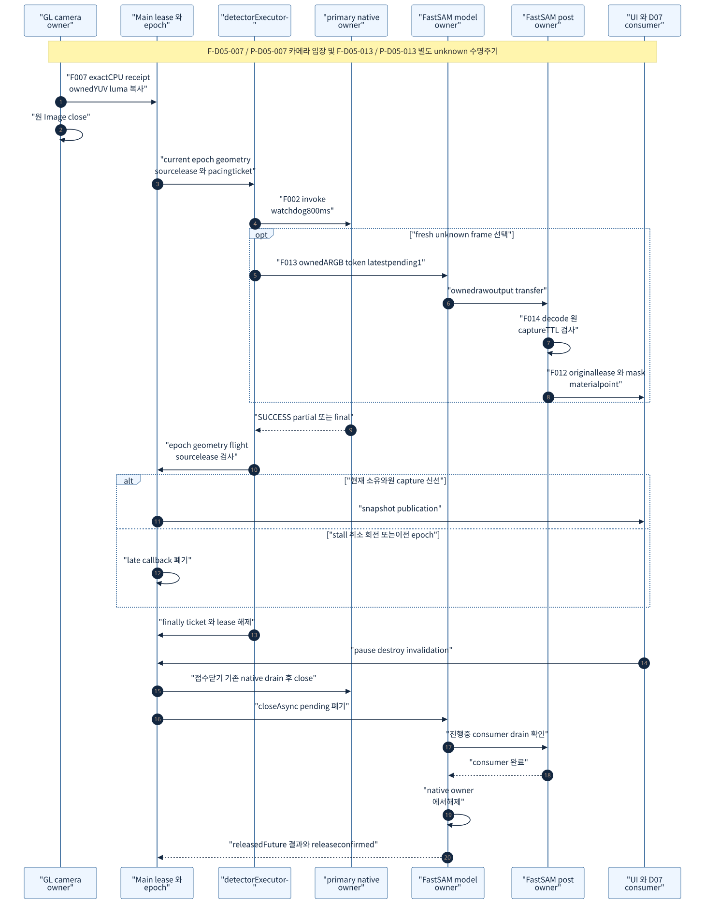

F-D05-008 적응형 추론 간격·재검출 힌트
| 항목 | 명세 |
|---|---|
| 분야 | D05 카메라·영상 전처리·객체 검출·시각 추적·이름 없는 물체·진단 UI |
| 목적 | 관측 지연·thermal·다른 작업 부하를 사용해 하나의 추론 슬롯을 최신 프레임에 배분한다. |
| 사용 주체 | Android 앱 로컬 모델 실행기 |
| 활성 상태 | ACTIVE |
| 진입점 | apps/android/app/src/main/java/kr/co/hanium/dreamup/walksafe/inference/AdaptiveInferencePacingPolicy.kt:117 tryStart apps/android/app/src/main/java/kr/co/hanium/dreamup/walksafe/inference/AdaptiveInferencePacingPolicy.kt:134 requestEarlyStart apps/android/app/src/main/java/kr/co/hanium/dreamup/walksafe/inference/AdaptiveInferencePacingPolicy.kt:146 complete |
| 실행 전제 | now 는 elapsed realtime; nullable thermal/load observation 은 미확인이지 정상값이 아니다. |
| 입력 출처 형식 검증 최신성 | 기본 250ms, min100/max600, step25; cooldown25..200; EWMA .25; target busy.8; fresh budget800ms. load channels age<=1000ms·channel 별 strictly newer. |
시작 이벤트와 처리 순서
| 이벤트 ID | 발생원 | 이벤트 | 수신부 | 흐름 |
|---|---|---|---|---|
| E-D05-008-01 | Main camera loop | due 요청 | tryStart | idle+due → generation ticket → 1inflight |
| E-D05-008-02 | worker | complete/cancel | AdaptiveInferencePacingPolicy | ticket 소유검사 → EWMA/load/thermal 갱신 → 다음 due |
| E-D05-008-03 | F011 tracker | lost/zone entry 재검출 요청 | requestEarlyStart | idle·normal 부하·최소간격·cooldown 이면 앞당김; geometry 새로 만들지 않음 |
- tryStart 는 슬롯 1 개만 발급하며 busy 에서는 미래 frame 을 queue 하지 않는다. due 는 previous start+target 와 last completion+cooldown 의큰값이다.
- completion 소요/실추론 EWMA 큰값에(1+pressure)/.8 를 적용,25ms 단위 올림하고 100..600 으로 제한한다. thermal true 는최소 500ms, null 은이전 thermalhold 유지.
- 느려짐 즉시반영, 빨라짐은 4healthy sample 후최대 50ms 씩 회복한다. end-to-end>800ms 나 stale sample 은회복근거가 아니다. load pressure max3, 낮아짐은 4 샘플·hysteresis.1·최대.25 감소.
- reset 은 generation 을높여학습/미래일정을비우지만 실제 inflight ticket 과 thermalhold 를 유지한다. 이전 ticket 완료는물리 슬롯만해제하고새 generation 학습을 오염시키지 않는다.
| 분기 조건 | 실제 처리 결과 | 구현 근거 |
|---|---|---|
| busy 또는 cooldown 미도달 | tryStart null | apps/android/app/src/main/java/kr/co/hanium/dreamup/walksafe/inference/AdaptiveInferencePacingPolicy.kt:117 tryStart |
| early hint +thermal/loadpressure>0/overFreshness | 앞당김 거부 | apps/android/app/src/main/java/kr/co/hanium/dreamup/walksafe/inference/AdaptiveInferencePacingPolicy.kt:134 requestEarlyStart |
효과 종료와 복구
추론 주기·드롭 counter·진단 status. 처리율 목표이지 FPS 보증 아님.
| 상황 | 동작 |
|---|---|
| 정상 완료 | completion 수락 후 next due |
| 실패 | 잘못된 ticket/시각은학습거부 |
| 시간 초과 | native800ms 는별도 F009 |
| 중복 입력 | 중복 complete 는 false |
| 취소 | cancel 은빠른성공샘플로학습안함 |
| 중단과 생명주기 | reset 은실제 native 슬롯을해제하지않음 |
| 재시도 | 다음 eligible frame 만 접수 |
| 복구 | 부하 정상 4 회관측후점진회복 |
| 자원 정리 | ticket 소유 완료/cancel 만슬롯해제 |
상태 실행 맥락과 연결
| 항목 | 명세 |
|---|---|
| 초기 상태 | IDLE |
| 상태 목록 | S-D05-008-IDLE S-D05-008-IN_FLIGHT S-D05-008-COOLDOWN S-D05-008-THERMAL_HOLD |
| 전이 조건과 전이 동작 | IDLE → IN_FLIGHT: due IN_FLIGHT → COOLDOWN: completion thermaltrue → THERMAL_HOLD |
| 허용되지 않는 전이 | reset 으로실제 inFlight 와중복실행 해제금지 |
| 동시성 순서와 작업 소유권 | 순수 상태 객체; Main frameStateLock 에서호출, 독립 timer/worker 생성 없음. |
| 공유 상태와 다른 기능 연결 | AndroidRuntimeLoadObservationSource F020, Main unknowncopy claim 와 nativewatchdog F007/F009. |
정책 근거와 검증 범위
| 항목 | 근거 |
|---|---|
| 정책 | P-D05-008 |
| 구현 | apps/android/app/src/main/java/kr/co/hanium/dreamup/walksafe/inference/AdaptiveInferencePacingPolicy.kt:80 · class AdaptiveInferencePacingPolicy (범위 80–373) |
| 기존 개선 ID | 개별 동일성 미확인; 분야 연관은 별도 추적표 |
| 기존 분야 | 해당 없음 |
| 기존 실행 증거 | 미확인: 이번 고정 텍스트 스냅샷 정적 분석만 수행. 기존 DONE, 시험 소스, 기기·현장·모델 평가 기록은 이번 실행 증거가 아니다. |
| 한계 및 구분 | scheduling intent 와실기기열/전력관측은별개. |
| 테스트 위치 | 심볼 | 증거 수준 | 기대와 한계 |
|---|---|---|---|
| apps/android/app/src/test/java/kr/co/hanium/dreamup/walksafe/inference/AdaptiveInferencePacingPolicyTest.kt | latestFrameOnlyAdmissionNeverQueuesWhileAnyWorkIsInFlight | TEST_EXPECTATION | 기존 작업미완료 중새 ticket 없음; 이번 미실행 |
| apps/android/app/src/test/java/kr/co/hanium/dreamup/walksafe/inference/AdaptiveInferencePacingPolicyTest.kt | fastDeviceNeedsSustainedSamplesAndRecoversInBoundedSteps | TEST_EXPECTATION | 4 샘플후 50ms 회복,최소 100ms; 이번 미실행 |
이벤트 처리 그림


F-D05-009 검출 실패·출력 신선도·native stall 감독
| 항목 | 명세 |
|---|---|
| 분야 | D05 카메라·영상 전처리·객체 검출·시각 추적·이름 없는 물체·진단 UI |
| 목적 | 미완료/오래된 검출과 native 미반환을 성공으로 오인하지 않고 보행 안전 정지로 연결한다. |
| 사용 주체 | Android 앱 로컬 모델 실행기 |
| 활성 상태 | ACTIVE |
| 진입점 | apps/android/app/src/main/java/kr/co/hanium/dreamup/walksafe/inference/DetectorRuntimeSupervisor.kt:55 DetectorRuntimeSupervisor apps/android/app/src/main/java/kr/co/hanium/dreamup/walksafe/MainActivity.kt:34120 beginNativeDetectorFlight apps/android/app/src/main/java/kr/co/hanium/dreamup/walksafe/MainActivity.kt:34181 handleNativeDetectorStall apps/android/app/src/main/java/kr/co/hanium/dreamup/walksafe/MainActivity.kt:36552 handleDetectorRuntimeFailure |
| 실행 전제 | 현재 detectorGeneration+walkEpoch+pacing ticket. 활성 보행중 모델 교체로계속진행하지않는다. |
| 입력 출처 형식 검증 최신성 | fresh 성공 captureage0..800ms.3 연속실패 또는최근 5 개중 3 실패;3200ms 창 실패>=3·비율>=3/5. tensor/asset/nativecleanup/validoutputexpired 비재시도오류는즉시 stop. native flight800ms 는 D02 DetectorStallWatchdog 의별도시계. |
시작 이벤트와 처리 순서
| 이벤트 ID | 발생원 | 이벤트 | 수신부 | 흐름 |
|---|---|---|---|---|
| E-D05-009-01 | worker 결과 | fresh output 또는 exception | DetectorRuntimeSupervisor | claim 소유 및 captureage 검사 → 실패계수/최근창/무출력 clock → KEEP_CURRENT 또는 SAFE_STOP |
| E-D05-009-02 | main Handler | native deadline 도달 | handleNativeDetectorStall | ticket expire once → generation 무효화 → detector 사용불가 → 보행안전 정지 → async close |
- onDetectorOutput 는정확 claim 인 fresh SUCCESS 만성공 clock 과연속실패를회복한다. unavailable/oldcapture 는 no-valid-output clock 을지속시킨다. clock 은보행/camera run 별 재 arm 한다.
- 실패조건충족시 activewalk SAFE_STOP. inactive unified+legacyavailable 이면 다음 보행용 legacy 결정을 반환할수있지만 Main 호출은 activeWalk=true 이고현재 fallback 없음.
- nativewatchdog 는 begin 시 Handler deadline,complete/removeCallbacks,expire/publishIfCurrent 를묶는다. 완료가 deadline 뒤면 stopClaim CAS 로단한 번 stop 을요청한다.
- stall 은 detectorClosing=true·available=false·snapshot empty·load/detector generation 증가 후안전 정지와 overlayclear 를한다. native 는강제해제하지않고 closeDetectorAsync 로 drain 한다. 일반 failure 는 Noop 교체와 depth/fallback stop 경로가있다.
| 분기 조건 | 실제 처리 결과 | 구현 근거 |
|---|---|---|
| 소유권없는 이전 run 결과 | 실패/성공시계 갱신안함 | apps/android/app/src/main/java/kr/co/hanium/dreamup/walksafe/inference/DetectorRuntimeSupervisor.kt:1 onDetectorOutput |
| 비재시도계약오류 | 첫 오류라도안전 정지 | apps/android/app/src/main/java/kr/co/hanium/dreamup/walksafe/inference/DetectorRuntimeSupervisor.kt:1 onFailure |
| native stall 이후 latepartial | watchdog publication 거부 | apps/android/app/src/main/java/kr/co/hanium/dreamup/walksafe/MainActivity.kt:34669 publishDetectionSnapshot |
효과 종료와 복구
객체 탐지 지연·안전 중지 UI, riskTrusted=false, snapshot/overlay/출력무효화. 개발길안내 bypass 는일반 runtimefailure 메시지를다르게하므로정상배포보장으로간주하지않음.
| 상황 | 동작 |
|---|---|
| 정상 완료 | fresh 성공으로정상유지 |
| 실패 | 임계실패 SAFE_STOP |
| 시간 초과 | native800ms 와 freshoutput800ms 는각각감시 |
| 중복 입력 | stopClaim 으로중복 stop 억제 |
| 취소 | 보행취소는 epoch 무효화 |
| 중단과 생명주기 | native 는중단요청만으로끝난 것이아님 |
| 재시도 | 자동 inwalk 모델 교체없음 |
| 복구 | 상위새세션/재로드·완전해제 조건 D02 |
| 자원 정리 | closefailure 를 released 로간주하지않음 |
상태 실행 맥락과 연결
| 항목 | 명세 |
|---|---|
| 초기 상태 | ARMED |
| 상태 목록 | S-D05-009-ARMED S-D05-009-FAILING S-D05-009-SAFE_STOP S-D05-009-DRAINING S-D05-009-DISABLED |
| 전이 조건과 전이 동작 | freshSUCCESS → ARMED 임계실패/800msnative → SAFE_STOP SAFE_STOP → DRAINING |
| 허용되지 않는 전이 | stale/unavailable → 성공회복, livelegacy 전환 금지 |
| 동시성 순서와 작업 소유권 | worker 보고+mainwatchdog handler;frameStateLock generation fence,stopClaim AtomicBoolean. |
| 공유 상태와 다른 기능 연결 | D02 Watchdog/WalkSessionLifecycle/WalkRuntimeSafetyCoordinator 상세; F002 close, F007 publication. |
정책 근거와 검증 범위
| 항목 | 근거 |
|---|---|
| 정책 | P-D05-009 |
| 구현 | apps/android/app/src/main/java/kr/co/hanium/dreamup/walksafe/inference/DetectorRuntimeSupervisor.kt:55 · class DetectorRuntimeSupervisor (범위 55–213)apps/android/app/src/main/java/kr/co/hanium/dreamup/walksafe/MainActivity.kt:34102 · beginNativeDetectorFlight (범위 34102–34269)apps/android/app/src/main/java/kr/co/hanium/dreamup/walksafe/MainActivity.kt:36552 · handleDetectorRuntimeFailure (범위 36552–36693) |
| 기존 개선 ID | 개별 동일성 미확인; 분야 연관은 별도 추적표 |
| 기존 분야 | 해당 없음 |
| 기존 실행 증거 | 미확인: 이번 고정 텍스트 스냅샷 정적 분석만 수행. 기존 DONE, 시험 소스, 기기·현장·모델 평가 기록은 이번 실행 증거가 아니다. |
| 한계 및 구분 | 이정책은안전 정지시도이며음성청취·진동수신·현장안전성은이번 미검증. |
| 테스트 위치 | 심볼 | 증거 수준 | 기대와 한계 |
|---|---|---|---|
| apps/android/app/src/test/java/kr/co/hanium/dreamup/walksafe/inference/DetectorRuntimeSupervisorTest.kt | repeatedUnifiedFailureDuringActiveWalkNeverLoadsLegacyLive | TEST_EXPECTATION | 활성 보행 3 연속실패 SAFE_STOP,livelegacy 금지; 이번 미실행 |
이벤트 처리 그림

F-D05-010 시각 프레임 ring·검출 source lease·작업 예산
| 항목 | 명세 |
|---|---|
| 분야 | D05 카메라·영상 전처리·객체 검출·시각 추적·이름 없는 물체·진단 UI |
| 목적 | 추론 중 원 프레임과 현재 프레임을 보존하고 제한된 광류 작업에 앞쪽 위험후보를 배분한다. |
| 사용 주체 | Android 앱 로컬 모델 실행기 |
| 활성 상태 | ACTIVE |
| 진입점 | apps/android/app/src/main/java/kr/co/hanium/dreamup/walksafe/inference/tracking/InterFrameDetectionTracker.kt:13 InterFrameDetectionTracker apps/android/app/src/main/java/kr/co/hanium/dreamup/walksafe/inference/tracking/GrayTrackingFrame.kt:17 GrayTrackingFrame apps/android/app/src/main/java/kr/co/hanium/dreamup/walksafe/inference/tracking/AdaptiveVisualTrackingBudget.kt:7 AdaptiveVisualTrackingBudget |
| 실행 전제 | actual CPU camera timestamp·elapsed capture·epoch·geometry 포함 VisualFrameKey. source/target 가 ring 에 있어야함. |
| 입력 출처 형식 검증 최신성 | owned gray maxedge192·cell .25/.75 의 4 표본. ring32 장/age900ms, 연속 edge<=120ms, sourceage<=800ms(두시계), maxinputs300, default tracked3(허용상한 5), features40, pixels80M, 기본 5ms. Main adaptive 는유효간격 6 개후최대 10ms. |
시작 이벤트와 처리 순서
| 이벤트 ID | 발생원 | 이벤트 | 수신부 | 흐름 |
|---|---|---|---|---|
| E-D05-010-01 | 매카메라 capture | offer luma | InterFrameDetectionTracker.offer | immutable gray → epoch/geometry/순서검사 → ring 저장/trim |
| E-D05-010-02 | F007 | reserve/publish/releasePendingSourceFrame | tracker | inflight 원 source 보호 → final 게시후 publishedsource 보호 → 실제 batch 채택후교체 |
| E-D05-010-03 | current target | trackFrom | tracker | source/batch 검증 → 우선순위고정 → objectbudget/edgebudget 내실제현재 frame 까지추적 |
- offerFrame은 낮은 epoch/geometry를 기존 상태를 보존한 채 거부한다. 같은 context의 frameId/CPU timestamp 역행 또는 elapsed 감소도 상태 보존 거부다. 동일 key·동일 pixels는 idempotent, 같은 frame identity에 다른 key/pixels 또는 같은 context의 dimension 변경은 clear 후 거부한다. 더 새로운 context는 clear 후 새 frame을 수락한다. clear해도 epoch/geometry watermark는 유지한다.
- trim은 먼저 age>900ms를 제거한다. 32장 cap을 넘으면 source/cursor 보호와 양쪽 시계 gap<=120ms를 유지할 수 있는 가장 오래된 미보호 frame 제거를 우선한다. 안전 제거 후보가 없으면 첫 미보호 frame, 그것도 없으면 0번을 제거한다. hard cap이 연속성 보호보다 우선하며 끊긴 경로는 이후 FRAME_GAP 등으로 실패한다. 무제한 보관하거나 연속성을 합성하지 않는다.
- source==target 는광류없이모든유효 detection 을관측으로제공한다. 다음 frame 에서는외부위험순위, upright x .35..65 겹침·bottom>=.5, bottom/area/confidence/index 순으로 우선순위를 고정한다. 기본 2priority+1 회전 coverage;명시 위험 후보가 슬롯을 채울 수 있다.
- edge 완료 상태만 캐시해 예산 중단 후 이어간다. lost 슬롯은같은 call 에다음후보로넘긴다. actualtarget 까지모든 edge 가완료되기전에는현재 geometry 를내놓지않는다.
- AdaptiveVisualTrackingBudget 은최근 12camera interval 중<=50ms 인 6 개이상, lowerquartile*.3 을 5..10ms 로 clamp 한다. dropped 긴 간격이 예산을 늘리지 못한다.
| 분기 조건 | 실제 처리 결과 | 구현 근거 |
|---|---|---|
| source age>800ms 또는 edgegap>120ms | LOST/실패,과거 box 를현재 frame 으로승격안함 | apps/android/app/src/main/java/kr/co/hanium/dreamup/walksafe/inference/tracking/InterFrameDetectionTracker.kt:1 trackFrom |
| nativecall 이예산초과해도현재 target 에완료 | 끝의 age 검사통과시관측가능하고 overrun 계측;선점종료보장아님 | apps/android/app/src/main/java/kr/co/hanium/dreamup/walksafe/inference/tracking/InterFrameDetectionTracker.kt:1 trackFrom |
| 32장 초과인데 gap을 보존하며 제거 가능한 frame 없음 | 첫 미보호 frame 또는 0번 강제 제거; 후속 추적은 continuity 불충족 시 FRAME_GAP | apps/android/app/src/main/java/kr/co/hanium/dreamup/walksafe/inference/tracking/InterFrameDetectionTracker.kt:672 trimHistory |
효과 종료와 복구
현재 tracked observation 후보·budget metrics·재검출 신호. depth/risk 는 D07 에서추가검증.
| 상황 | 동작 |
|---|---|
| 정상 완료 | 현재 target geometry 또는명시실패 |
| 실패 | 낮은 epoch/geometry·동일 context 시간 역행은 상태를 보존하며 거부한다. identity/dimension 충돌은 clear 후 거부한다. hard-cap trim으로 끊긴 경로는 이후 FRAME_GAP 등으로 실패한다. |
| 시간 초과 | source800ms;ring900ms;5..10ms 협력예산 |
| 중복 입력 | samekeysamepixels idempotent;batch final → partial downgrade 거부 |
| 취소 | sourcelease release/reset |
| 중단과 생명주기 | nativeLK 호출은선점불가;일부 edge 만진척 |
| 재시도 | 다음 target 에 cursor continuation;새검출은 F008 |
| 복구 | 새 sourcebatch 로만재획득 |
| 자원 정리 | trim/reset 및 ownedgray 만;Image 보관없음 |
상태 실행 맥락과 연결
| 항목 | 명세 |
|---|---|
| 초기 상태 | EMPTY |
| 상태 목록 | S-D05-010-EMPTY S-D05-010-RETAINING S-D05-010-SOURCE_RESERVED S-D05-010-PARTIAL_PROGRESS S-D05-010-CURRENT S-D05-010-LOST |
| 전이 조건과 전이 동작 | offer → RETAINING reserve → SOURCE_RESERVED edges 완료 → CURRENT continuity 실패 → LOST |
| 허용되지 않는 전이 | lease 없는 finaladopt·foreignlease 해제·미도달 현재 geometry 발급금지 |
| 동시성 순서와 작업 소유권 | Main GL 에서 offer/짧은 state lock, nativetracking 호출부와 frameStateLock 순서에의존. ring 은부모 caller 직렬화; materialpoint owner 는별도 worker. |
| 공유 상태와 다른 기능 연결 | D07 PrimaryTrackingPriorityPolicy 순위입력과 CurrentTrackedFrameObservation 연결. F011 측정·F012 unknowntracker 공통계약. |
정책 근거와 검증 범위
| 항목 | 근거 |
|---|---|
| 정책 | P-D05-010 |
| 구현 | apps/android/app/src/main/java/kr/co/hanium/dreamup/walksafe/inference/tracking/VisualTrackingContracts.kt:129 · data class VisualTrackingConfig (범위 129–151)apps/android/app/src/main/java/kr/co/hanium/dreamup/walksafe/inference/tracking/GrayTrackingFrame.kt:17 · class GrayTrackingFrame (범위 17–126)apps/android/app/src/main/java/kr/co/hanium/dreamup/walksafe/inference/tracking/InterFrameDetectionTracker.kt:13 · class InterFrameDetectionTracker (범위 13–771)apps/android/app/src/main/java/kr/co/hanium/dreamup/walksafe/inference/tracking/AdaptiveVisualTrackingBudget.kt:7 · class AdaptiveVisualTrackingBudget (범위 7–67) |
| 기존 개선 ID | 개별 동일성 미확인; 분야 연관은 별도 추적표 |
| 기존 분야 | 해당 없음 |
| 기존 실행 증거 | 미확인: 이번 고정 텍스트 스냅샷 정적 분석만 수행. 기존 DONE, 시험 소스, 기기·현장·모델 평가 기록은 이번 실행 증거가 아니다. |
| 한계 및 구분 | 현재 Main named config 는 allowSimilarityTransform=true; config 기본 false 와구분(F011). |
| 테스트 위치 | 심볼 | 증거 수준 | 기대와 한계 |
|---|---|---|---|
| apps/android/app/src/test/java/kr/co/hanium/dreamup/walksafe/inference/tracking/InterFrameTrackingAdmissionRegressionTest.kt | fourthLowerConfidenceFrontObjectSurvivesAllFourCameraOrientationsWithinThreeFlowSlots | TEST_EXPECTATION | 3 광류슬롯에서도앞쪽네번째후보우선처리; 이번 미실행 |
| apps/android/app/src/test/java/kr/co/hanium/dreamup/walksafe/inference/tracking/AdaptiveVisualTrackingBudgetTest.kt | sixCpuTimestampIntervalsAreRequiredBeforeIncreasingTheBudget | TEST_EXPECTATION | 6 유효 CPU 간격후예산증가; 이번 미실행 |
이벤트 처리 그림


F-D05-011 OpenCV 광류·실제 물질점·추적 소실 판정
| 항목 | 명세 |
|---|---|
| 분야 | D05 카메라·영상 전처리·객체 검출·시각 추적·이름 없는 물체·진단 UI |
| 목적 | box 이동과 독립된 실제 영상점을 검증하고 지원되지 않는 변환/대상충돌을 LOST 로 처리한다. |
| 사용 주체 | Android 앱 로컬 모델 실행기 |
| 활성 상태 | ACTIVE |
| 진입점 | apps/android/app/src/main/java/kr/co/hanium/dreamup/walksafe/inference/tracking/OpenCvPyramidalMotionEstimator.kt:31 OpenCvPyramidalMotionEstimator apps/android/app/src/main/java/kr/co/hanium/dreamup/walksafe/inference/tracking/InterFrameDetectionTracker.kt:129 trackFrom |
| 실행 전제 | OpenCV init 성공과 finite ownedgray. 기본 backend OPENCV_PYRAMIDAL_LK. named Main 1166 은 similarity=true, UnknownMaterialPointTracker 는기본 false. |
| 입력 출처 형식 검증 최신성 | LK21x21/pyramid3/30iteration/epsilon.01/minEig1e-4. GFTT<=40 quality.01 distance3. min6 survivors 및원본 20%이상, photo<=28, FB<1pixel, residual<=2pixel, supportspan>=.25 hullarea>=.10. |
시작 이벤트와 처리 순서
| 이벤트 ID | 발생원 | 이벤트 | 수신부 | 흐름 |
|---|---|---|---|---|
| E-D05-011-01 | F010 | seed/track edge | VisualMotionEstimator | GFTT feature → LK forward/backward → 오차/지지영역 → translation 또는 similarity → actualpoint 검증 |
| E-D05-011-02 | 새검출 batch | material point handoff | InterFrameDetectionTracker | 같은실측 frame one-to-one 동일 class IoU>=.65 → identity 보존 또는 point 폐기 |
- OpenCV init 결과를 프로세스 단위로 캐시하고 threads1. native 오류시 PatchMotionEstimator 로자동 fallback 하지않는다. Patch 는명시 PATCH_DIAGNOSTIC backend 만해당.
- translation 기본은 scale .96..1.04/rotation<=.04rad;similarity 허용시는 scale .5..2/회전<=pi/4 및 RANSAC2px/2000/.99/refine10 을쓴다. matchquality 는추적지표이며 detectorconfidence 를변경하지않는다.
- feature>=7 이면한실제점은 geometry fit 에서빼고나머지>=6 으로 boxtransform 을구한다. pointquality>=.65·현재 key·객체 내부·다른 객체와독점 소유를모두만족해야 materialpoint 로낸다.
- 새 sourcebatch 로 point 를옮길때같은측정 frame 의동일 class 와 IoU>=.65 인 상호 유일 매칭만 허용한다. affinebox 중심을 새 물질점으로 만들지 않는다. 원래 IoU<.30 인두대상이현재>.65 로겹치면양쪽 LOST.
- Patch diagnostic 은최대 16features·7x7patch/search8·photo28·best 대비 secondmargin max2,.2best·FB<=1.25·survivor>=max6,.65N·supportspan.4 를쓴다. 현재 production 자동구제경로아님.
| 분기 조건 | 실제 처리 결과 | 구현 근거 |
|---|---|---|
| feature 부족/FB 실패/지원 영역협소/overlap 경쟁 | LOST 또는 point 없음 | apps/android/app/src/main/java/kr/co/hanium/dreamup/walksafe/inference/tracking/OpenCvPyramidalMotionEstimator.kt:1 track |
| sameclass one-to-onehandoff 미충족 | point identity 폐기;현재 box 측정은별도 | apps/android/app/src/main/java/kr/co/hanium/dreamup/walksafe/inference/tracking/InterFrameDetectionTracker.kt:1 trackFrom |
효과 종료와 복구
실제 영상점 identity·geometry·quality·LOST/redetect hint.3D 속도/TTC 는 D07 책임.
| 상황 | 동작 |
|---|---|
| 정상 완료 | 측정된 geometry 와선택적 materialpoint |
| 실패 | nativefailure/ambiguity LOST |
| 시간 초과 | F010 예산·800ms 재검사 |
| 중복 입력 | 동일 batch 재호출 cachedprogress;oldrevision 거부 |
| 취소 | reset 에서 feature/pointstate 폐기 |
| 중단과 생명주기 | native 호출진행중선점없음 |
| 재시도 | redetect hint 만;Patch 자동 fallback 없음 |
| 복구 | 새신뢰검출에서 feature 재시드 |
| 자원 정리 | OpenCV Mat 들을 finally release |
상태 실행 맥락과 연결
| 항목 | 명세 |
|---|---|
| 초기 상태 | UNSEEDED |
| 상태 목록 | S-D05-011-UNSEEDED S-D05-011-SEEDED S-D05-011-TRACKED S-D05-011-POINT_RETIRED S-D05-011-LOST |
| 전이 조건과 전이 동작 | validseed → SEEDED qualitysupport 통과 → TRACKED pointownership 모호 → POINT_RETIRED geometry 불일치 → LOST |
| 허용되지 않는 전이 | box 센터를물질점으로대체·LOST 를예측 box 로회복금지 |
| 동시성 순서와 작업 소유권 | LK/GFTT native 호출;프로세스 OpenCV 초기화동기화,추적기호출직렬. |
| 공유 상태와 다른 기능 연결 | VisualMotionEstimator.factory, Main tracking config override 및 D07 materialpoint-to-depth. |
정책 근거와 검증 범위
| 항목 | 근거 |
|---|---|
| 정책 | P-D05-011 |
| 구현 | apps/android/app/src/main/java/kr/co/hanium/dreamup/walksafe/inference/tracking/OpenCvPyramidalMotionEstimator.kt:31 · class OpenCvPyramidalMotionEstimator (범위 31–391)apps/android/app/src/main/java/kr/co/hanium/dreamup/walksafe/inference/tracking/VisualMotionEstimator.kt:42 · interface VisualMotionEstimator (범위 42–56)apps/android/app/src/main/java/kr/co/hanium/dreamup/walksafe/inference/tracking/PatchMotionEstimator.kt:35 · class PatchMotionEstimator (범위 35–250)apps/android/app/src/main/java/kr/co/hanium/dreamup/walksafe/inference/tracking/InterFrameDetectionTracker.kt:13 · class InterFrameDetectionTracker (범위 13–771)apps/android/app/src/main/java/kr/co/hanium/dreamup/walksafe/MainActivity.kt:1166 · visualFrameTracker (범위 1166–1172) |
| 기존 개선 ID | 개별 동일성 미확인; 분야 연관은 별도 추적표 |
| 기존 분야 | 해당 없음 |
| 기존 실행 증거 | 미확인: 이번 고정 텍스트 스냅샷 정적 분석만 수행. 기존 DONE, 시험 소스, 기기·현장·모델 평가 기록은 이번 실행 증거가 아니다. |
| 한계 및 구분 | OpenCV 실제 기기안정성·광류성능미실행. 합성시험의 m/s 는물리현장검증이아님. |
| 테스트 위치 | 심볼 | 증거 수준 | 기대와 한계 |
|---|---|---|---|
| apps/android/app/src/test/java/kr/co/hanium/dreamup/walksafe/inference/tracking/MaterialPointTrackingPipelineTest.kt | movingPointSurvivesNewDetectorSourcesEvery250Ms | TEST_EXPECTATION | 합성장면에서여러 source 동안단일 materialpoint identity 유지; 이번 미실행 |
이벤트 처리 그림

F-D05-012 이름 없는 mask 의 luma 수신·capture lease·물질점 추적
| 항목 | 명세 |
|---|---|
| 분야 | D05 카메라·영상 전처리·객체 검출·시각 추적·이름 없는 물체·진단 UI |
| 목적 | FastSAM 원 이미지에 대응하는 과거 luma 와 mask 안의 실제점을 제한된 소유 범위에서 추적한다. |
| 사용 주체 | Android 앱 로컬 모델 실행기 |
| 활성 상태 | ACTIVE |
| 진입점 | apps/android/app/src/main/java/kr/co/hanium/dreamup/walksafe/inference/tracking/UnknownMaterialPointLumaCapture.kt:10 UnknownMaterialPointLumaCapture apps/android/app/src/main/java/kr/co/hanium/dreamup/walksafe/inference/tracking/UnknownMaterialPointTracker.kt:53 UnknownMaterialPointTracker apps/android/app/src/main/java/kr/co/hanium/dreamup/walksafe/MainActivity.kt:35335 processUnknownMaterialPointCapture |
| 실행 전제 | F013 FastSAM token LIVE_CAMERA, 원 CPU timestamp/dimensions 일치, quarterturn0..3, now-capture0..800ms. context/service/geometry epoch current. |
| 입력 출처 형식 검증 최신성 | maxmask min(FastSAM100,configmaxinputs300), finite score0..1·valid bitgeometry·area>0. callback 최초시작부터남은 5ms 예산만사용; tracker lock 대기도공제. |
시작 이벤트와 처리 순서
| 이벤트 ID | 발생원 | 이벤트 | 수신부 | 흐름 |
|---|---|---|---|---|
| E-D05-012-01 | Main qualifiedimage | owned luma offer | offerOwnedLuma | LIVE actualtimestamp/dim 검증 → ring32 → capturelease 예약 |
| E-D05-012-02 | FastSAM postconsumer | 원 token maskresult | consume | lease/capture/turn 검사 → 원 maskcapture 까지만 historyfeed → 이전 batch 추적·현재 maskhandoff → D07materialpoint |
- immutable capture 는실제 luma 를소유하고동일 key 다른 bytes·geometry/turn 변경은 reset 한다. reset 해도 epoch/timestamp watermark 는보존한다.
- reserveCapture 는원 capture ringframe 을보호하는 opaquelease 를발급한다. atomic close 는 nonblocking 이고 foreignproducer lease 는해제할수없다. ring32cap 을 지킬 수 없으면 접수 실패한다.
- consume 는미래 capture 를넣지않고원 masktimestamp 까지만공급한다. 최초 mask 는동일한과거 mask 물질점이없어 point 를발급하지않는다.
- pixelcell4 실제샘플이모두원 mask 안에있고 peer mask 와겹치지않아야 seed 를선택한다. hole/disconnectedmask 를 bbox 로채우지않는다. 여러 mask 일경우기존 advancedpoint 를보수적으로폐기한다.
- 결과 직전 TTL/lease 상태를재검사하고 finally lease 를닫는다. Main 은 contextcurrent 를다시확인후 UnknownObjectDepthPipeline 에 mask 별 materialpoint 를전달한다.
| 분기 조건 | 실제 처리 결과 | 구현 근거 |
|---|---|---|
| lease 취소/소유불일치/원 frame 유실 | point 발급안함 | apps/android/app/src/main/java/kr/co/hanium/dreamup/walksafe/inference/tracking/UnknownMaterialPointTracker.kt:1 consume |
| callback 남은예산 0 | 새 5ms 를부여하지않음 | apps/android/app/src/main/java/kr/co/hanium/dreamup/walksafe/MainActivity.kt:35335 processUnknownMaterialPointCapture |
효과 종료와 복구
mask index 별실측 point·tracking diagnostics;현재 scene/속도를추정해서채우지않음.
| 상황 | 동작 |
|---|---|
| 정상 완료 | trackedresult/point 없음 명시 |
| 실패 | failure reason 와 no point |
| 시간 초과 | 800ms TTL,원 callback5ms 공유 |
| 중복 입력 | 같은 capture 동일 pixels 만 idempotent;oldercapture 거부 |
| 취소 | lease atomicclose/ownercontext 무효화 |
| 중단과 생명주기 | 취소는 native tracker 대기없이 publication 차단 |
| 재시도 | 다음유효 capture 와 mask 에서만이어감 |
| 복구 | 새 scope 는새 tracker;oldqueuedreset 은 oldscope 만 |
| 자원 정리 | leasefinallyclose,ringtrim/reset 은 workerowner |
상태 실행 맥락과 연결
| 항목 | 명세 |
|---|---|
| 초기 상태 | EMPTY |
| 상태 목록 | S-D05-012-EMPTY S-D05-012-LUMA_READY S-D05-012-LEASED S-D05-012-CONSUMING S-D05-012-CANCELLED S-D05-012-POINT_OR_UNKNOWN |
| 전이 조건과 전이 동작 | offer → LUMA_READY reserve → LEASED consume → POINT_OR_UNKNOWN leaseclose → CANCELLED |
| 허용되지 않는 전이 | foreignleaseclose·futureframe 추적·TTL 재부여금지 |
| 동시성 순서와 작업 소유권 | Main ownedlumaqueue 는 detectorExecutor; FastSAMcallback postowner 에서 tracker 동기화. UI/GL 은 cancelpublication 만하고 native tracker reset 은 worker 에 enqueue. |
| 공유 상태와 다른 기능 연결 | Main UnknownProcessingContext 및 D07 UnknownObjectDepthPipeline, debug CameraUnknownMaterialPointOwner F024. |
정책 근거와 검증 범위
| 항목 | 근거 |
|---|---|
| 정책 | P-D05-012 |
| 구현 | apps/android/app/src/main/java/kr/co/hanium/dreamup/walksafe/inference/tracking/UnknownMaterialPointLumaCapture.kt:10 · class UnknownMaterialPointLumaCapture (범위 10–63)apps/android/app/src/main/java/kr/co/hanium/dreamup/walksafe/inference/tracking/UnknownMaterialPointTracker.kt:53 · class UnknownMaterialPointTracker (범위 53–504)apps/android/app/src/main/java/kr/co/hanium/dreamup/walksafe/MainActivity.kt:35335 · processUnknownMaterialPointCapture (범위 35335–35374) |
| 기존 개선 ID | 개별 동일성 미확인; 분야 연관은 별도 추적표 |
| 기존 분야 | 해당 없음 |
| 기존 실행 증거 | 미확인: 이번 고정 텍스트 스냅샷 정적 분석만 수행. 기존 DONE, 시험 소스, 기기·현장·모델 평가 기록은 이번 실행 증거가 아니다. |
| 한계 및 구분 | materialpoint 가없어도 mask 관측자체는별도 D07 정책으로처리된다. |
| 테스트 위치 | 심볼 | 증거 수준 | 기대와 한계 |
|---|---|---|---|
| apps/android/app/src/test/java/kr/co/hanium/dreamup/walksafe/inference/tracking/UnknownMaterialPointCaptureLeaseOwnershipTest.kt | foreignLeaseWithIdenticalTokenRemainsOpenAndConsumableByItsOriginalProducer | TEST_EXPECTATION | 같은 token 값 foreignlease 는닫지못함; 이번 미실행 |
이벤트 처리 그림

F-D05-013 FastSAM 실행서비스·GPU 생성·최신 1 프레임 배압
| 항목 | 명세 |
|---|---|
| 분야 | D05 카메라·영상 전처리·객체 검출·시각 추적·이름 없는 물체·진단 UI |
| 목적 | 이름 없는 물체용 segmentation 을 주 모델과 별도 native owner 에서 실행하고느린 consumer 까지포함한단일 flight 를관리한다. |
| 사용 주체 | Android 앱 로컬 모델 실행기 |
| 활성 상태 | ACTIVE |
| 진입점 | apps/android/app/src/main/java/kr/co/hanium/dreamup/walksafe/inference/unknown/FastSamRuntimeService.java:20 FastSamRuntimeService apps/android/app/src/main/java/kr/co/hanium/dreamup/walksafe/MainActivity.kt:35679 startUnknownRuntimeForWalk |
| 실행 전제 | Main 은 primary detector 준비후 foreground 이고기존 loading/service/closing 없을때생성한다. config/runtime candidate 필요. 저장된 unknownprofile CPU 이면 CPU,없으면 GPU;threads 는 primarycandidate 범위 clamp. |
| 입력 출처 형식 검증 최신성 | FastSAM 고정 768 FP32 sha/shape. Main start60 초·resultage800ms,debug1000ms. genericoptions deadline 남은 0 초초과~300 초이하,age1..5000ms,threads1..processors. LIVE 원본 fullcrop·timestamp/dim·epoch 일치. |
시작 이벤트와 처리 순서
| 이벤트 ID | 발생원 | 이벤트 | 수신부 | 흐름 |
|---|---|---|---|---|
| E-D05-013-01 | 보행/길안내 진입 | service.start | FastSamRuntimeService | deadline 검사 → modelowner 생성 → SHA/텐서검증 → ready |
| E-D05-013-02 | qualifiedcamera | submit 또는 submitArgb | service | token/시각/fullcrop 검사 → ownedARGBcopy → 최신 pending1 → invoke → ownedoutputcopy → postdecode → consumer |
| E-D05-013-03 | pause/error/destroy | discardPending/closeAsync | service | 접수 중지 → pending 폐기 → copy/invoke/consumer drain → nativeclose → releasedFuture |
- FastSamYuvCopy 는 YUV420 를소유 ARGB 로복사한다. submitArgb 는 caller array 를 clone 한다. 원 Image 를 서비스에 보관하지 않는다. COPY_BUSY 는동시복사거부다.
- modelowner 와 CPUpostowner 두스레드. invoke/decode/resultconsumer 가끝날때까지한 flight 로간주하고 pending 은최신 1 개로교체한다. pending 교체는 FIFO 확장이아니다. token.frameId 와 CPUtimestamp 는증가해야한다.
- TfliteFastSamEngine 는고정 asset SHA 를 native 생성전검사하고 FP32 1input/2outputs shape 를검증한다. cachedGPU 초기화 실패는정상 해제뒤 uncachedGPU1 회,deadline 과 explicit allowCpuFallback 이면 CPU 초기화로전환한다.
- FastSAM 의 invoke 오류에는 CPU 재실행이없다. tensor 검증실패도 fallback 없고 service 실패로종료한다. 주검출 DelegateFallbackRuntime 와다른정책이다.
- beforeinvoke/afterdecode freshness 와 stopping 을재검사한다. consumerexception 도 terminalfailure 다. closeAsync 는즉시 admission 차단하나진행중 native/copy/consumer 가 drain 된후해제한다. releasedFuture 와 closeFuture 는해제 확인/작업실패라는다른 정보를준다.
| 분기 조건 | 실제 처리 결과 | 구현 근거 |
|---|---|---|
| wrong epoch/stale/out-of-order/notready/closed | 명시 Admission 거부 | apps/android/app/src/main/java/kr/co/hanium/dreamup/walksafe/inference/unknown/FastSamRuntimeService.java:1 submit |
| latest pending 이미존재 | REPLACED_PENDING 으로최신만보존 | apps/android/app/src/main/java/kr/co/hanium/dreamup/walksafe/inference/unknown/FastSamRuntimeService.java:1 publish |
| native release 실패 | 새 owner 생성으로 slot 이빈것처럼취급금지 | apps/android/app/src/main/java/kr/co/hanium/dreamup/walksafe/inference/unknown/TfliteFastSamEngine.java:1 close |
효과 종료와 복구
runtimeInfo actualbackend/fallback/cachemetadata, segmentation callback, status. 모델입력네트워크전송없음.
| 상황 | 동작 |
|---|---|
| 정상 완료 | ready → result callbacks |
| 실패 | terminal stop+listener error |
| 시간 초과 | startwatchdogdeadline;resultTTL;native 선점아님 |
| 중복 입력 | frame/cpuTS 역순거부·pending 교체 |
| 취소 | pause discardPending 은 warmmodel 유지;close 는접수완전종료 |
| 중단과 생명주기 | nativeinvoke 강제 interrupt 없음 |
| 재시도 | init 때 uncachedGPU/explicitCPU 만;invoke 자동 retry 없음 |
| 복구 | Main 후속재생성은 release/lifecyclegate,debug 는명시 retryF024 |
| 자원 정리 | copy+invoke+postconsumer drain 뒤 modelowner close 및 post shutdown |
상태 실행 맥락과 연결
| 항목 | 명세 |
|---|---|
| 초기 상태 | NEW |
| 상태 목록 | S-D05-013-NEW S-D05-013-LOADING S-D05-013-READY S-D05-013-INFLIGHT S-D05-013-PENDING S-D05-013-STOPPING S-D05-013-RELEASED S-D05-013-RELEASE_FAILED |
| 전이 조건과 전이 동작 | start → LOADING → READY submit → INFLIGHT 및선택 PENDING close/error → STOPPING → RELEASED |
| 허용되지 않는 전이 | native 미해제 상태를 free 로간주·만료 result 최신 retag 금지 |
| 동시성 순서와 작업 소유권 | modelowner1+CPUpostowner1+startwatchdog;consumer 가느리면 nextnative 도대기. Main UIcallbacks 는 service identity 와 epoch 확인. |
| 공유 상태와 다른 기능 연결 | F014decode, F012luma lease, D07UnknownDepthPipeline. Main unknowncalibration 은 F019, profileF026. |
정책 근거와 검증 범위
| 테스트 위치 | 심볼 | 증거 수준 | 기대와 한계 |
|---|---|---|---|
| apps/android/app/src/test/java/kr/co/hanium/dreamup/walksafe/inference/unknown/FastSamRuntimeServiceTest.java | latestOneAndOwnedSnapshotSpanSlowConsumer | TEST_EXPECTATION | 느린 consumer 동안 1inflight+latestpending1,callerarray 복제; 이번 미실행 |
| apps/android/app/src/test/java/kr/co/hanium/dreamup/walksafe/inference/unknown/FastSamRuntimeServiceTest.java | pendingDiscardKeepsWarmModelAndCloseWaitsForConsumer | TEST_EXPECTATION | pause 는 warm 모델유지,close 는 consumer drain 대기; 이번 미실행 |
이벤트 처리 그림


F-D05-014 FastSAM raw tensor·인스턴스 mask 복원
| 항목 | 명세 |
|---|---|
| 분야 | D05 카메라·영상 전처리·객체 검출·시각 추적·이름 없는 물체·진단 UI |
| 목적 | 고정출력계약으로부터원 센서해상도의실제 mask 비트와 hole/분리 component 를보존한다. |
| 사용 주체 | Android 앱 로컬 모델 실행기 |
| 활성 상태 | ACTIVE |
| 진입점 | apps/android/app/src/main/java/kr/co/hanium/dreamup/walksafe/inference/unknown/segmentation/FastSamDecoder.java:9 FastSamDecoder apps/android/app/src/main/java/kr/co/hanium/dreamup/walksafe/inference/unknown/segmentation/InstanceMask.java:7 InstanceMask |
| 실행 전제 | 고정[1,37,12096] detection 과[1,192,192,32] proto FP32. input768,32coefficients,1object score. |
| 입력 출처 형식 검증 최신성 | confidence>.25(strict),NMS IoU>.7,max100. 모든 tensor 값 finite. coeff·prototype dotproduct 순서와 float 계산고정. |
시작 이벤트와 처리 순서
| 이벤트 ID | 발생원 | 이벤트 | 수신부 | 흐름 |
|---|---|---|---|---|
| E-D05-014-01 | F013 postowner | tensor 완료 | FastSamDecoder.decode | shape/finite → scorefilter → stableNMS → proto dotproduct → letterbox 제거 → logitresize → bitmask |
- shape/길이및전체 finite 검사 후 xywhnormalizedbox 를복원한다. confidence>.25 인 anchor 를 score 내림차순/anchor 오름차순으로정렬한다.
- NMS 후최대 100 을먼저선택하고 32 개 prototype×coefficient 를순서대로 float 합산한다. empty mask 제거로빈자리생겨도 cap 뒤후보로채우지않는다.
- half-even letterbox 크기와 pad 제거,원 이미지로 bilinear logit resize,logit>0 만 foreground. ROI 좌표는 ceil 경계와 right/bottomexclusive 를쓴다.
- mask bitset 은 holes/disconnectedcomponent 그대로유지한다. bbox 가 imageedge20px 이내이고 coverage>.9 면표시 bbox 를 fullimage 로조정할수있지만 mask bit 는변하지않는다.
| 분기 조건 | 실제 처리 결과 | 구현 근거 |
|---|---|---|
| score==.25 | 탈락 | apps/android/app/src/main/java/kr/co/hanium/dreamup/walksafe/inference/unknown/segmentation/FastSamDecoder.java:1 decode |
| mask area0 | result 에서제외 | apps/android/app/src/main/java/kr/co/hanium/dreamup/walksafe/inference/unknown/segmentation/FastSamDecoder.java:1 decode |
효과 종료와 복구
InstanceMask(score/anchor/ROI/packedbits),DecodeResult;semanticclass 를만들지않는다.
| 상황 | 동작 |
|---|---|
| 정상 완료 | masklist 완료 |
| 실패 | shape/nonfinite 예외가 F013terminalerror |
| 시간 초과 | decode 자체선점없음;서비스 afterdecodeTTL |
| 중복 입력 | sameclassNMS;semantic 객체중복판정은별도 |
| 취소 | serviceclose 상태는 callback 게시전에확인 |
| 중단과 생명주기 | postowner 에서완료또는오류 |
| 재시도 | decoder 자동 fallback 없음 |
| 복구 | 다음서비스생성/유효 output 필요 |
| 자원 정리 | ownedoutputtensor 와 mask 는 consumer 범위소유 |
상태 실행 맥락과 연결
| 항목 | 명세 |
|---|---|
| 초기 상태 | TENSORS |
| 상태 목록 | S-D05-014-TENSORS S-D05-014-CANDIDATES S-D05-014-MASKS S-D05-014-REJECTED |
| 전이 조건과 전이 동작 | finitecontract → CANDIDATES positivebits → MASKS |
| 허용되지 않는 전이 | bbox 를 actualmask 로대체/없는 class 추론금지 |
| 동시성 순서와 작업 소유권 | CPUpostowner 에서직렬 decode;modelowneroutput 는복제되어동시덮어쓰기없음. |
| 공유 상태와 다른 기능 연결 | D07 maskdepth 와 F015 tactileassociation 은같은 actualmask 를쓴다. |
정책 근거와 검증 범위
| 테스트 위치 | 심볼 | 증거 수준 | 기대와 한계 |
|---|---|---|---|
| apps/android/app/src/androidTest/java/kr/co/hanium/dreamup/walksafe/inference/unknown/FastSamProductionRuntimeDeviceTest.kt | packagedCpuAndGpuRunAndRelease | TEST_EXPECTATION | 명시 opt-in 장치 시험은 packaged fixture의 raw 두출력 길이·finite,mask<=100·원image dimensions·positivearea를 검사한다. 이번 장치 시험/모델 실행 미실행이며 decoder 모든 비트 동등성 전수시험을 대신하지 않는다. |
이벤트 처리 그림

F-D05-015 동일 capture 의 점자 의미·FastSAM mask 유일 결합
| 항목 | 명세 |
|---|---|
| 분야 | D05 카메라·영상 전처리·객체 검출·시각 추적·이름 없는 물체·진단 UI |
| 목적 | 주 21 종이이름붙인점자 bbox 와동일 image 의 mask 를 유일한 경우에만 연결한다. |
| 사용 주체 | Android 앱 로컬 모델 실행기 |
| 활성 상태 | ACTIVE |
| 진입점 | apps/android/app/src/main/java/kr/co/hanium/dreamup/walksafe/inference/TactileSemanticMaskSelector.kt:139 TactileSemanticMaskSelector apps/android/app/src/main/java/kr/co/hanium/dreamup/walksafe/MainActivity.kt:44966 TactileSemanticMaskSelector |
| 실행 전제 | 양쪽 SENSOR_ORIGINAL,같은 opaque CameraImageTimestampEvidence 객체,actualLIVEtoken·turn·originaldeadline,now>=capture 그리고<=deadline. named state COMPLETED 만정상선택;COMPLETED_EMPTY 는별도사실. |
| 입력 출처 형식 검증 최신성 | unifiedenabled config 의 linear/damagedlinear/dot/damageddot4class 와실제 threshold. 이름없는 mask anchorindex 를 semanticclass 로바꾸지않는다. |
시작 이벤트와 처리 순서
| 이벤트 ID | 발생원 | 이벤트 | 수신부 | 흐름 |
|---|---|---|---|---|
| E-D05-015-01 | Main bounded tactile join | named 완료와 mask 완료 | select | exactreceipt/token/deadline → namedclass/score → 모든 foregroundpixelcell 포함 → 유일 mask → associatecandidate |
- 완료/빈완료/partial/pending/skipped/unavailable/failed 를보존하고비완료 named 출력으로 semantic 추정하지않는다.
- 수치 timestamp 가같아도 opaqueimageReceipt object identity 가 다르면 다른 획득으로 본다. originalDeadline 을연장하지않고전체 token 및 turn 을비교한다.
- threshold 와 allowlist 통과 namedbbox 에 mask 의모든 true pixel cell 전체가 포함되는지 검사한다. pixelcenter 만 inside 거나실제 mask 를 clip 해서맞추는행동은불가.
- 한 named 에한 mask 만있고다른 qualified named 와 overlap/sharedmask 가없어야 ASSOCIATE_CANDIDATE. 여러 mask/overlappingsemantics 는 AMBIGUOUS,없으면 UNAVAILABLE. maskbits·원 score·classindex 를보존한다.
| 분기 조건 | 실제 처리 결과 | 구현 근거 |
|---|---|---|
| 동일 시계지만다른 receipt | UNAVAILABLE | apps/android/app/src/main/java/kr/co/hanium/dreamup/walksafe/inference/TactileSemanticMaskSelector.kt:1 select |
| mask2 개 또는 shared/overlappingbox | AMBIGUOUS | apps/android/app/src/main/java/kr/co/hanium/dreamup/walksafe/inference/TactileSemanticMaskSelector.kt:1 select |
효과 종료와 복구
TactileSemanticMaskSelection 과이유;이자체는발밑지지·보행허가·경로추천이아님.
| 상황 | 동작 |
|---|---|
| 정상 완료 | candidate 또는명시 ambiguous/unavailable |
| 실패 | invalid score/maskdims/bitarea 거부 |
| 시간 초과 | 원 capturedeadline ns 비교 |
| 중복 입력 | 같은 입력동기결과;새 관측 identity 발급없음 |
| 취소 | Main joincancel 은 D07 원 captureowner 해제 |
| 중단과 생명주기 | selector 는동기,늦은 join 은 deadline 거부 |
| 재시도 | auto mask 추정재시도없음 |
| 복구 | 새동일 capture 의완성양쪽증거필요 |
| 자원 정리 | selector 출력 immutablecopy;join lease 상위책임 |
상태 실행 맥락과 연결
| 항목 | 명세 |
|---|---|
| 초기 상태 | PENDING |
| 상태 목록 | S-D05-015-PENDING S-D05-015-ASSOCIATE_CANDIDATE S-D05-015-AMBIGUOUS S-D05-015-UNAVAILABLE |
| 전이 조건과 전이 동작 | exactcapture+uniquecontainedmask → ASSOCIATE_CANDIDATE 다중해석 → AMBIGUOUS |
| 허용되지 않는 전이 | partial/expired/foreigncapturesemantic 승격금지 |
| 동시성 순서와 작업 소유권 | selector CPU 동기. Main join 의 boundedwait·취소 context 는 D07 에연결. |
| 공유 상태와 다른 기능 연결 | Main completed named receipt /FastSAM sameimage capture join 및 D07 tactiledepth. |
정책 근거와 검증 범위
| 항목 | 근거 |
|---|---|
| 정책 | P-D05-015 |
| 구현 | apps/android/app/src/main/java/kr/co/hanium/dreamup/walksafe/inference/TactileSemanticMaskSelector.kt:139 · class TactileSemanticMaskSelector (범위 139–339) |
| 기존 개선 ID | 개별 동일성 미확인; 분야 연관은 별도 추적표 |
| 기존 분야 | 해당 없음 |
| 기존 실행 증거 | 미확인: 이번 고정 텍스트 스냅샷 정적 분석만 수행. 기존 DONE, 시험 소스, 기기·현장·모델 평가 기록은 이번 실행 증거가 아니다. |
| 한계 및 구분 | semanticassociation 이현재 depth 와물리점자기능을보장하지않음. |
| 테스트 위치 | 심볼 | 증거 수준 | 기대와 한계 |
|---|---|---|---|
| apps/android/app/src/test/java/kr/co/hanium/dreamup/walksafe/inference/TactileSemanticMaskSelectorTest.kt | uniqueActualFootprintPreservesHolesComponentsScoresAndOpaqueMaskIdentity | TEST_EXPECTATION | 유일 actualfootprint 는 holes/점수/원 maskidentity 보존; 이번 미실행 |
| apps/android/app/src/test/java/kr/co/hanium/dreamup/walksafe/inference/TactileSemanticMaskSelectorTest.kt | sameClockValuesCannotReplaceAnOpaqueImageReceipt | TEST_EXPECTATION | 동일 시계만으로 receipt 대체불가; 이번 미실행 |
이벤트 처리 그림

F-D05-016 현재 검출기 instance 의 실행 검증 token
| 항목 | 명세 |
|---|---|
| 분야 | D05 카메라·영상 전처리·객체 검출·시각 추적·이름 없는 물체·진단 UI |
| 목적 | 자산/실제 backend/실행된 샘플이 확인된 정확한 검출기만 출력을 낼 수 있게 한다. |
| 사용 주체 | Android 앱 로컬 모델 실행기 |
| 활성 상태 | ACTIVE |
| 진입점 | apps/android/app/src/main/java/kr/co/hanium/dreamup/walksafe/inference/RunningDetectorVerification.kt:142 RunningDetectorVerificationGate |
| 실행 전제 | D02 실행샘플/asset 검증 evidence. 저장된빠른 runtime profile 만으로 currentinstance 검증을대체하지않음. |
| 입력 출처 형식 검증 최신성 | identity: bundle/model artifacts 및 classorder/config SHA,actualdelegate,fallbackgeneration,detectorinstance. SHA lowercase64hex. max3attempt,retry1000ms,pendingdeadline15000ms. |
시작 이벤트와 처리 순서
| 이벤트 ID | 발생원 | 이벤트 | 수신부 | 흐름 |
|---|---|---|---|---|
| E-D05-016-01 | D02 detectoradopt | begin | gate | instance 별 PENDING+deadline |
| E-D05-016-02 | sampleworker | recordAttempt | gate | asset/load/sample 증거검사 → VERIFIEDtoken 또는재시도/FAILED |
| E-D05-016-03 | 매출력 gate | allowsOutput | gate | 동일 instance·generation·configHash/wholeidentity 일치만허용 |
- begin 은새 instance 의 PENDING 을만들고기존 token 을지운다. 이미 completed instance 의 lateattempt 는 STALE 다.
- 검증은 assetintegrity/loadsuccess/samplepassed 모두필요하며 exactidentity 로 token 을낸다. load 실패·이름없는 model·sample 실패는미검증이다.
- recordAttempt 실패는 3 회또는 deadline/backclock 이면 FAILED,그전엔 retryat=now+1000. expire 는일정이지났거나 backclock 이면 PENDING 종료한다.
- recordAttempt 는성공검증을 deadline 분기보다 먼저 하므로 메서드 단독으로 늦은 성공을 반드시 거부하는 계약은 아니다. Main expire/currentcallback 경계(D02)와함께해석한다.
| 분기 조건 | 실제 처리 결과 | 구현 근거 |
|---|---|---|
| oldinstance 또는완료된 pending | STALE 로무시 | apps/android/app/src/main/java/kr/co/hanium/dreamup/walksafe/inference/RunningDetectorVerification.kt:1 recordAttempt |
| tokenidentity 불일치 | allowsOutput=false | apps/android/app/src/main/java/kr/co/hanium/dreamup/walksafe/inference/RunningDetectorVerification.kt:1 allowsOutput |
효과 종료와 복구
PENDING/VERIFIED/FAILED 가 D02 기기 점검/보행진입과연동. token 은메모리증거.
| 상황 | 동작 |
|---|---|
| 정상 완료 | VERIFIED exacttoken |
| 실패 | FAILED 출력을차단 |
| 시간 초과 | 15000ms expire;recordAttempt 성공순서주의 |
| 중복 입력 | 동일 종료 후 lateattemptSTALE |
| 취소 | invalidate 로 token 제거 |
| 중단과 생명주기 | puregate 는 native 중단안함 |
| 재시도 | 1000ms 간격최대 3 회실패시도 |
| 복구 | 새 detectorinstance begin |
| 자원 정리 | token/attemptstate reset |
상태 실행 맥락과 연결
| 항목 | 명세 |
|---|---|
| 초기 상태 | NONE |
| 상태 목록 | S-D05-016-NONE S-D05-016-PENDING S-D05-016-VERIFIED S-D05-016-FAILED |
| 전이 조건과 전이 동작 | begin → PENDING positiveevidence → VERIFIED attemptlimit/deadline → FAILED |
| 허용되지 않는 전이 | profile 존재만으로 VERIFIED·instance 교체후 token 재사용금지 |
| 동시성 순서와 작업 소유권 | gate synchronized; 실제 sample 실행·delayhandler·tokenadopt 는 D02. |
| 공유 상태와 다른 기능 연결 | D02 RunningDetectorReadiness 와 Main verifyLoadedDetectorForCurrentProcess, F002fallbackgeneration. |
정책 근거와 검증 범위
| 항목 | 근거 |
|---|---|
| 정책 | P-D05-016 |
| 구현 | apps/android/app/src/main/java/kr/co/hanium/dreamup/walksafe/inference/RunningDetectorVerification.kt:11 · data class RunningDetectorIdentity (범위 11–278)apps/android/app/src/main/java/kr/co/hanium/dreamup/walksafe/inference/RunningDetectorVerification.kt:142 · class RunningDetectorVerificationGate (범위 142–278) |
| 기존 개선 ID | 개별 동일성 미확인; 분야 연관은 별도 추적표 |
| 기존 분야 | 해당 없음 |
| 기존 실행 증거 | 미확인: 이번 고정 텍스트 스냅샷 정적 분석만 수행. 기존 DONE, 시험 소스, 기기·현장·모델 평가 기록은 이번 실행 증거가 아니다. |
| 한계 및 구분 | 현재 unified identity 구성은활성 unified 를묶으며비활성 personsupplement 포함문제는 R004 에기록. |
| 테스트 위치 | 심볼 | 증거 수준 | 기대와 한계 |
|---|---|---|---|
| apps/android/app/src/test/java/kr/co/hanium/dreamup/walksafe/inference/RunningDetectorVerificationRetryTest.kt | sampleInferenceFailuresEndInFailedAndBlockTheDeviceCheckAndWalkEntry | TEST_EXPECTATION | 3 회샘플실패시 FAILED 로기기 점검/진입차단; 이번 미실행 |
이벤트 처리 그림


F-D05-017 고정 fixture 무결성·raw/parsed 출력 동등성
| 항목 | 명세 |
|---|---|
| 분야 | D05 카메라·영상 전처리·객체 검출·시각 추적·이름 없는 물체·진단 UI |
| 목적 | runtime 후보를 비교할 때 동일한 로컬 입력과 출력 계약을 사용하고 성능 향상으로출력 손실을숨기지않는다. |
| 사용 주체 | Android 앱 로컬 모델 실행기 |
| 활성 상태 | CONDITIONAL |
| 진입점 | apps/android/app/src/main/java/kr/co/hanium/dreamup/walksafe/inference/RuntimeCalibrationFixtures.kt:56 RuntimeCalibrationFixtures apps/android/app/src/main/java/kr/co/hanium/dreamup/walksafe/inference/RuntimeCalibrationOutputGate.kt:14 RuntimeCalibrationOutputGate |
| 실행 전제 | APK 고정 fixture 자산. 카메라/네트워크입력은이 fixture 의대체물이아니다. |
| 입력 출처 형식 검증 최신성 | manifest hardcodedSHA,version walkmate21v2,필수 4unique fixture. JPEG images/12digits.jpg·1..1024dimension·actualhash;solidblack768 은 ARGBbigendianSHA. positive/empty/near-threshold roles 및 noncrowdGT. |
시작 이벤트와 처리 순서
| 이벤트 ID | 발생원 | 이벤트 | 수신부 | 흐름 |
|---|---|---|---|---|
| E-D05-017-01 | D02 fixedselector/livecalibration | loadManifest/loadArgb | fixtures | manifestSHA → 4requiredcases → 이미지 SHA/dim/annotation 검증 |
| E-D05-017-02 | baseline/candidate 완료 | equivalent | outputgate | raw exactshape/finite/top1/threshold → parsedperfectmatching → GTmatched 유지 |
- manifest 제약과각 imagehash/dim 을검증한다. requiredrole/case 가빠지면 baseline 비교미완료다.
- raw21 출력은전체 finite·shape 와 anchorclassscore/top1/thresholdmembership 를비교한다. 좌표는 normalized 면 inputSize 를곱해 pixel tolerance 로판단한다.
- E2E 는 300 행에 perfectmatching 을 사용하여 순서 변경을 허용하되 classID 와 threshold 통과여부를보존한다. parsed 도 sameclass/score/box tolerance 로 perfectmatching 한다.
- GT box IoU>=.5 의 one-to-one matchedboolean 배열이 baseline/candidate 에서같아야한다. positive 는양쪽최소 1GTmatch,empty 는양쪽빈검출. nearthreshold ±.02 는 fixture 도달상태일뿐모든 classquality 평가가아니다.
| 분기 조건 | 실제 처리 결과 | 구현 근거 |
|---|---|---|
| raw output 없음/shape 다름/nonfinite | 동등성실패 | apps/android/app/src/main/java/kr/co/hanium/dreamup/walksafe/inference/RuntimeCalibrationOutputGate.kt:1 equivalent |
| 시각장면비었음 | requiredpositivefixture 대체불가 | apps/android/app/src/main/java/kr/co/hanium/dreamup/walksafe/inference/RuntimeCalibrationFixtures.kt:1 loadManifest |
효과 종료와 복구
출력동등성 evidence 와 fixturefailure;프로필발급은 F018.
| 상황 | 동작 |
|---|---|
| 정상 완료 | 모든 requiredfixture 동등 |
| 실패 | false/assetexception |
| 시간 초과 | fixture 자체 deadline 없음;callerbudget |
| 중복 입력 | caseID 중복거부 |
| 취소 | callercurrentgate 및 nativeownerclose |
| 중단과 생명주기 | 동등성계산은동기 |
| 재시도 | 허용후보 nextcomparison;자동허용없음 |
| 복구 | 정확자산/완전샘플로재평가 |
| 자원 정리 | fixtureARGB/출력은호출소유 |
상태 실행 맥락과 연결
| 항목 | 명세 |
|---|---|
| 초기 상태 | UNREAD |
| 상태 목록 | S-D05-017-UNREAD S-D05-017-VERIFIED_FIXTURES S-D05-017-EQUIVALENT S-D05-017-MISMATCH |
| 전이 조건과 전이 동작 | SHA 통과 → VERIFIED_FIXTURES 모든 gate → EQUIVALENT |
| 허용되지 않는 전이 | rawmissing 를 empty 성공으로간주금지 |
| 동시성 순서와 작업 소유권 | caller 의 deviceTuningExecutor 또는 calibrationworker;네트워크/API 없음. |
| 공유 상태와 다른 기능 연결 | D02 AndroidFixedFixtureRuntimeSelector 및 calibrationrunner, F018 profile, F019FastSAM 다른 rawgate. |
정책 근거와 검증 범위
| 항목 | 근거 |
|---|---|
| 정책 | P-D05-017 |
| 구현 | apps/android/app/src/main/java/kr/co/hanium/dreamup/walksafe/inference/RuntimeCalibrationFixtures.kt:56 · class RuntimeCalibrationFixtures (범위 56–181)apps/android/app/src/main/java/kr/co/hanium/dreamup/walksafe/inference/RuntimeCalibrationOutputGate.kt:14 · object RuntimeCalibrationOutputGate (범위 14–227)apps/android/app/src/main/java/kr/co/hanium/dreamup/walksafe/inference/RuntimeCalibrationContracts.kt:28 · data class RuntimeFixtureEvidence (범위 28–160) |
| 기존 개선 ID | 개별 동일성 미확인; 분야 연관은 별도 추적표 |
| 기존 분야 | 해당 없음 |
| 기존 실행 증거 | 미확인: 이번 고정 텍스트 스냅샷 정적 분석만 수행. 기존 DONE, 시험 소스, 기기·현장·모델 평가 기록은 이번 실행 증거가 아니다. |
| 한계 및 구분 | 실제모델 fixture 추론/기기 benchmark 이번 미실행. |
| 테스트 위치 | 심볼 | 증거 수준 | 기대와 한계 |
|---|---|---|---|
| apps/android/app/src/test/java/kr/co/hanium/dreamup/walksafe/inference/RuntimeCalibrationOutputGateTest.kt | unchangedEmptyFixturePassesOnlyWithAvailableFullRawOutput | TEST_EXPECTATION | 빈 fixture 도완전 raw 출력필수; 이번 미실행 |
이벤트 처리 그림

F-D05-018 runtime 후보 큐·반복비교 판정·확정 profile
| 항목 | 명세 |
|---|---|
| 분야 | D05 카메라·영상 전처리·객체 검출·시각 추적·이름 없는 물체·진단 UI |
| 목적 | 동일 환경에서반복 측정과 live 비퇴화를모두통과한 CPU/GPU 후보만선택한다. |
| 사용 주체 | Android 앱 로컬 모델 실행기 |
| 활성 상태 | CONDITIONAL |
| 진입점 | apps/android/app/src/main/java/kr/co/hanium/dreamup/walksafe/inference/RuntimeSelectionPolicy.kt:7 RuntimeSelectionPolicy apps/android/app/src/main/java/kr/co/hanium/dreamup/walksafe/inference/RuntimeSelectionPolicy.kt:213 RuntimeCandidateQueue |
| 실행 전제 | livecalibration 의 Main 사용연결은 F019/D02 에서 UNCONNECTED 로구분. 순수 policy/queue 는 D02 fixedselector 에서공유가능한부분이있으며 fixed 결과를 liveCONFIRMED 와동일시하지않음. |
| 입력 출처 형식 검증 최신성 | max300000ms,후보 thread1..max1processors. AB/BA/CONFIRMATION 각각>=4 쌍·AAvariation 있음. live>=10completions·>=10000ms. metric scope 는 AR TRACKING/pose/depthfresh/positive samples. |
시작 이벤트와 처리 순서
| 이벤트 ID | 발생원 | 이벤트 | 수신부 | 흐름 |
|---|---|---|---|---|
| E-D05-018-01 | D02/F019 calibration | nextCandidate/recordOutcome | candidatequeue | GPU 우선 → CPUbaseline/이웃 thread → 결과기록 → partialcursor 복구 |
| E-D05-018-02 | 측정완료 | evaluate/fromConfirmed | policy | deadline/fixture/backend/environment/paired/live 검사 → CONFIRMED(선택후보 또는 baseline)/PARTIAL/INCONCLUSIVE/REJECTED/UNSUPPORTED |
- candidatequeue 는 thread 전체정수영역을 lazy 탐색한다. GPU 지원없음은 family 제외,processor 수가바뀌면기존 queue 무효화. PARTIAL/INCONCLUSIVE 만 재시도 대상으로 보존하고 inflight 후보와맞는 outcome 만수락한다.
- workEstimate+reserve 는남은 deadline 보다 strictly 작아야시작가능하다. deadline 은 overflow 방지하며 300000ms 이상연장하지않는다.
- requiredcase 집합·실제 backend·fallback 없음·동일 환경·fixture 순서·speechinactive 를확인한다. clockresolution>0,모든 pairedsample 양수. unsupported 와실행오류는별도상태다.
- uncertainty=max(clockresolution,AAmax,2*MAD paired differences). 세 block 의 median gain 이각각 noise 초과여야향상이다. 초기미확정 CPU 동률만 thread 더작은값선택,이미확정 baseline 동률은유지한다.
- live 는 completionrate/freshrate/dropfraction/maxlatency/최대 gap/camera/tracking/UI 비퇴화와 latencymedian 개선을검사한다. profile 은 CONFIRMED evidence/binding/version/hash/실행 thread/measuredtime 을재검증해발급한다.
| 분기 조건 | 실제 처리 결과 | 구현 근거 |
|---|---|---|
| fixture 동등하지만 live tail 악화 | 선택불가 | apps/android/app/src/main/java/kr/co/hanium/dreamup/walksafe/inference/RuntimeSelectionPolicy.kt:1 evaluate |
| deadline 도달 | PARTIAL | apps/android/app/src/main/java/kr/co/hanium/dreamup/walksafe/inference/RuntimeSelectionPolicy.kt:1 evaluate |
효과 종료와 복구
선택 decision/queuecursor/profile;보행중실행기교체권한은포함안함.
| 상황 | 동작 |
|---|---|
| 정상 완료 | 판정과선택후보반환 |
| 실패 | REJECTED/UNSUPPORTED/INCONCLUSIVE |
| 시간 초과 | 단일 300 초전체예산 |
| 중복 입력 | 중복결과·foreign 후보거부 |
| 취소 | caller 취소는 PARTIAL 및 drain |
| 중단과 생명주기 | policy 는 native 중단기능없음 |
| 재시도 | partialcursor 로다음허용시재개 |
| 복구 | 이전 confirmedbaseline 유지 |
| 자원 정리 | 순수값;native 해제는 caller |
상태 실행 맥락과 연결
| 항목 | 명세 |
|---|---|
| 초기 상태 | QUEUED |
| 상태 목록 | S-D05-018-QUEUED S-D05-018-MEASURING S-D05-018-CONFIRMED S-D05-018-PARTIAL S-D05-018-REJECTED S-D05-018-UNSUPPORTED S-D05-018-INCONCLUSIVE |
| 전이 조건과 전이 동작 | next → MEASURING evidence 충족 → CONFIRMED 미완료 → PARTIAL |
| 허용되지 않는 전이 | 평균 1 회개선만으로확정·CPUfallbackGPU 성과로기록금지 |
| 동시성 순서와 작업 소유권 | 순수동기 policy,queue synchronized 아님 callerworker 소유. |
| 공유 상태와 다른 기능 연결 | D02 fixedselector/profilestore/runner. F026 unknownprofile 은 primary 비퇴화추가. |
정책 근거와 검증 범위
| 항목 | 근거 |
|---|---|
| 정책 | P-D05-018 |
| 구현 | apps/android/app/src/main/java/kr/co/hanium/dreamup/walksafe/inference/RuntimeSelectionPolicy.kt:7 · object RuntimeSelectionPolicy (범위 7–359)apps/android/app/src/main/java/kr/co/hanium/dreamup/walksafe/inference/RuntimeCalibrationContracts.kt:92 · enum class RuntimeSelectionStatus (범위 92–160) |
| 기존 개선 ID | 개별 동일성 미확인; 분야 연관은 별도 추적표 |
| 기존 분야 | 해당 없음 |
| 기존 실행 증거 | 미확인: 이번 고정 텍스트 스냅샷 정적 분석만 수행. 기존 DONE, 시험 소스, 기기·현장·모델 평가 기록은 이번 실행 증거가 아니다. |
| 한계 및 구분 | 정책은 보수적 탐색 규칙이며 통계적 신뢰구간·정확도·전력효율 보증이 아니다. fixed selector 의 선택 결과와 live CONFIRMED profile 을 구별한다. |
| 테스트 위치 | 심볼 | 증거 수준 | 기대와 한계 |
|---|---|---|---|
| apps/android/app/src/test/java/kr/co/hanium/dreamup/walksafe/inference/RuntimeSelectionPolicyTest.kt | repeatedImprovementRequiresFullEvidenceAndCanBecomeProfile | TEST_EXPECTATION | 완전반복/live 증거후에만 profile; 이번 미실행 |
| apps/android/app/src/test/java/kr/co/hanium/dreamup/walksafe/inference/RuntimeSelectionPolicyTest.kt | anyLatencyTailCameraTrackingOrUiRegressionBlocksPromotion | TEST_EXPECTATION | tail/camera/tracking/UI 악화가승격차단; 이번 미실행 |
이벤트 처리 그림

F-D05-019 FastSAM 과 고정 주 검출기 조합의 실시간 calibration
| 항목 | 명세 |
|---|---|
| 분야 | D05 카메라·영상 전처리·객체 검출·시각 추적·이름 없는 물체·진단 UI |
| 목적 | 주 검출기 실행 방식을 고정한 채 FastSAM 후보의동등성·속도·주 검출 부하를 함께 비교하는 남아 있는 경로다. |
| 사용 주체 | Android 앱 로컬 모델 실행기 |
| 활성 상태 | UNCONNECTED |
| 진입점 | apps/android/app/src/main/java/kr/co/hanium/dreamup/walksafe/inference/unknown/tuning/UnknownRuntimeCalibration.kt:34 UnknownRuntimeCalibration apps/android/app/src/main/java/kr/co/hanium/dreamup/walksafe/MainActivity.kt:36414 UnknownRuntimeCalibration |
| 실행 전제 | Main prepareDeviceRuntimeCalibration 정의는현재 active UI 호출검색에서진입없음(D02 확인). 따라서이후 UnknownRuntimeCalibration 도현재미연결. 시작하면 current flow·동일 binding·camera/live 환경을요구. |
| 입력 출처 형식 검증 최신성 | 최대 300 초전체 deadline/cleanupreserve20000ms. FastSAMfallback=false·precisionloss=false·rawfixture 보존. livecamera AR/CPUtimestamp 차<=50ms, capturecompletion1..800ms. 각 liveblock>=10 초 및 primary/aux 각>=10 회,최대 25 초대기. |
시작 이벤트와 처리 순서
| 이벤트 ID | 발생원 | 이벤트 | 수신부 | 흐름 |
|---|---|---|---|---|
| E-D05-019-01 | 정의된 Main calibration 후속 | start | UnknownRuntimeCalibration | CPU1reference → GPU 우선후보 → warmup → AB BA confirm fixture/live → F026confirm → warmservice adoption 제안 |
| E-D05-019-02 | camera/samplecallback | offerFrame/receiveLive | calibrationwindow | exactenvironment/clock → pacingtickets → primary/aux times 각각측정 |
| E-D05-019-03 | cancel/deadline | drain | calibration | window 중지 → imageBusy 대기 → service released 확인 → pendingcursor 저장 → finished |
- 로컬 requiredfixtures 를 CPU1 로실행하여 2rawtensor+mask 를 reference 로보관한다. FastSAMGT 라는가정없이입력 fixture 만재사용한다.
- 후보 open 은앞 service native release 완료 후만가능하다. GPUcoldload2 회+80000ms 를 estimatedpair 에반영한다. warmup 은최근 3 회 양수시간범위<=max1ms,평균 10%이면끝내며 15 초상한을둔다.
- A1B1 B2A2 A3B3 순비교를생성하고 live metrics 와 primary 부하를따로합친다. raw abs .0001 +rel .001 와 decodedmask ROI/anchor/bits 정확일치필수다.
- profile 확정후 service 를 warm 상태로 offer 한다. 제안은 current/serviceidentity/healthy 검증아래 swap 콜백성공해야 adopt 된다. 실패·취소 proposal 은 drain 뒤해제하고 profile 확정과실제 adopt 를구분한다.
- finally imageBusy0 과 native release 를확인한경우에만 finished 와 draincallbacks 를 UI 로보낸다. releasefailure 면 slot 이 비었다고 콜백하지 않는다.
| 분기 조건 | 실제 처리 결과 | 구현 근거 |
|---|---|---|
| native fallback 또는 precisionloss 또는 actualbackend/thread 다름 | 후보 REJECTED | apps/android/app/src/main/java/kr/co/hanium/dreamup/walksafe/inference/unknown/tuning/UnknownRuntimeCalibration.kt:1 requireRuntime |
| deadline/current 취소 | PARTIAL/cursor pending 및 drain | apps/android/app/src/main/java/kr/co/hanium/dreamup/walksafe/inference/unknown/tuning/UnknownRuntimeCalibration.kt:1 checkCurrent |
효과 종료와 복구
조건부 progress/선택 profile/pending record. 현재 UI 진입없으므로자동성능최적화가실행된다고표현하지않음.
| 상황 | 동작 |
|---|---|
| 정상 완료 | adopt 여부와 result callback |
| 실패 | candidatefailure 분류;releasefailure terminal |
| 시간 초과 | 300 초/cleanup20 초/warmup15 초/live25 초 |
| 중복 입력 | proposaldecided once,token 별 waiter |
| 취소 | cancel 이 current 를내리고 borrowedimage/native drain |
| 중단과 생명주기 | future 대기는 100ms 로 current 확인;native 종료보장아님 |
| 재시도 | queue partial/inconclusive 만다음기회 |
| 복구 | healthywarmservice 만 adopt;확정 baseline 유지 |
| 자원 정리 | references/cases/tickets/waiters 정리후 worker shutdown |
상태 실행 맥락과 연결
| 항목 | 명세 |
|---|---|
| 초기 상태 | UNCONNECTED |
| 상태 목록 | S-D05-019-UNCONNECTED S-D05-019-PREPARING S-D05-019-COMPARING S-D05-019-OFFERED S-D05-019-ADOPTED S-D05-019-DRAINING S-D05-019-RELEASE_FAILED |
| 전이 조건과 전이 동작 | 호출시 PREPARING → COMPARING → OFFERED swap 성공 → ADOPTED 취소 → DRAINING |
| 허용되지 않는 전이 | primaryretune·동시 imageborrowfixture·release 전새 service 금지 |
| 동시성 순서와 작업 소유권 | 전용 calibrationworker·FastSAM2owners·UIprogress/selection;lock wait50ms/20ms 로 image/window drain. camera Image 를 fixture 실행과겹치지않음. |
| 공유 상태와 다른 기능 연결 | D02 미연결 Main prepareDeviceRuntimeCalibration 와 camera lease; F013service,F017fixtures,F018selection,F026store. |
정책 근거와 검증 범위
| 항목 | 근거 |
|---|---|
| 정책 | P-D05-019 |
| 구현 | apps/android/app/src/main/java/kr/co/hanium/dreamup/walksafe/inference/unknown/tuning/UnknownRuntimeCalibration.kt:34 · class UnknownRuntimeCalibration (범위 34–601)apps/android/app/src/main/java/kr/co/hanium/dreamup/walksafe/MainActivity.kt:36413 · UnknownRuntimeCalibration (범위 36413–36475) |
| 기존 개선 ID | 개별 동일성 미확인; 분야 연관은 별도 추적표 |
| 기존 분야 | 해당 없음 |
| 기존 실행 증거 | 미확인: 이번 고정 텍스트 스냅샷 정적 분석만 수행. 기존 DONE, 시험 소스, 기기·현장·모델 평가 기록은 이번 실행 증거가 아니다. |
| 한계 및 구분 | UI 에실제성능점검버튼이있어도현재 fixedselector 경로와이다중 live 비교경로는별개다. UnknownRuntimeCalibration start/offer/adopt/cancel/drain 전체 orchestration을 직접 다루는 시험 연결은 이번 확인하지 못했다. 여기 연결한 시험은 사용 helper의 기대만 입증하며 전체 비동기 경로 검증을 뜻하지 않는다. |
| 테스트 위치 | 심볼 | 증거 수준 | 기대와 한계 |
|---|---|---|---|
| apps/android/app/src/test/java/kr/co/hanium/dreamup/walksafe/inference/unknown/tuning/UnknownRuntimeTuningTest.kt | warmupRequiresThreeRecentPositiveStableTimingsWithoutFixedDelay | TEST_EXPECTATION | warmup helper는 최근3개 양수 시간의 정의된 변동 폭을 요구한다는 시험 기대; 이번 미실행. |
| apps/android/app/src/test/java/kr/co/hanium/dreamup/walksafe/inference/unknown/tuning/UnknownRuntimeTuningTest.kt | rawEquivalenceChecksBothOutputsWithAbsoluteAndRelativeTolerance | TEST_EXPECTATION | 조합 calibration이 사용하는 두 raw 출력의 absolute+relative tolerance 경계를 검사한다는 helper 시험 기대; 이번 미실행. |
이벤트 처리 그림


F-D05-020 runtime 부하 관측·지속 악화 재점검 표시
| 항목 | 명세 |
|---|---|
| 분야 | D05 카메라·영상 전처리·객체 검출·시각 추적·이름 없는 물체·진단 UI |
| 목적 | 완료 지연과 다른 작업 지연을 수집하고 즉시 모델 교체 없이 재점검 필요 상태만 남긴다. |
| 사용 주체 | Android 앱 로컬 모델 실행기 |
| 활성 상태 | ACTIVE |
| 진입점 | apps/android/app/src/main/java/kr/co/hanium/dreamup/walksafe/inference/RuntimeLoadMonitor.kt:69 RuntimeLoadMonitor apps/android/app/src/main/java/kr/co/hanium/dreamup/walksafe/inference/AndroidRuntimeLoadObservationSource.kt:24 AndroidRuntimeLoadObservationSource apps/android/app/src/main/java/kr/co/hanium/dreamup/walksafe/MainActivity.kt:34280 observeRuntimeInferenceLoad |
| 실행 전제 | normal 환경은 Main 에서 foregroundactivewalk·detectoravailable·calibration 없음·thermal false·powersavefalse·최근 normalframe1 초로제한한다. missing 관측은 healthy0 으로대체안함. |
| 입력 출처 형식 검증 최신성 | window20000ms,>=10validcompletions,최대 1024latency 샘플(전체최대값은모든 ticket). baseline stale<=.1. latency 증가>max25ms,baseline25%,2*MAD 또는 stale 비율 baseline+.1 초과. |
시작 이벤트와 처리 순서
| 이벤트 ID | 발생원 | 이벤트 | 수신부 | 흐름 |
|---|---|---|---|---|
| E-D05-020-01 | 기존 camera/tracking/UI | duration 관측 | AndroidRuntimeLoadObservationSource | budget 있는채널만샘플 → 새 값 1 회소비 → F008pressure |
| E-D05-020-02 | 정상보행완료 | observe | RuntimeLoadMonitor | 20 초 window → baseline 또는악화 → 3 연속악화 → sticky pending |
| E-D05-020-03 | unknownservice 동시실행 | primary/aux completions | UnknownRuntimeLoadControl | 두별도 monitor 중하나 pending 이면재점검 |
- 20 초가득관측된 nonoverlappingwindow 만평가한다. firsthealthywindow 가 baseline,3 연속 degradedwindow 후 pending. input 만지속되고완료없음/allstale 이면 fullwindow 후결과중단 pending 을낼수있다.
- scope/binding 변경은 baseline 과 pendingreset,비정상환경/긴 gap>window/backclock 은연속성만끊고기존 sticky pending 을쉽게지우지않는다. 단일 spike·추론접수감소만으로지속 악화를확정하지않는다.
- Android source 는기존 main Handler 에 500ms 간격 probe1 개만두며 uptime dispatchdelay 를 elapsed observation 과함께보관한다. 샘플 age<=500ms,channel 별최신과미소비 oldpending 을 1 회씩사용한다. start/pausegeneration 은늦은 probe 를무효화한다.
- Main 은 binding 당한 번 deviceTuningExecutor 에 PERSISTENT_DEGRADATION 을 저장하고 저장 실패 시 표시 flag 를되돌려후속 재시도를허용한다. unknown 은 primary/aux 를 독립 기준선으로 감시한다.
| 분기 조건 | 실제 처리 결과 | 구현 근거 |
|---|---|---|
| 샘플부족/환경불연속 | 정상성공으로 baseline 생성안함 | apps/android/app/src/main/java/kr/co/hanium/dreamup/walksafe/inference/RuntimeLoadMonitor.kt:1 observe |
| pending 발생 | 다음점검표시만;실행기 hot swap 없음 | apps/android/app/src/main/java/kr/co/hanium/dreamup/walksafe/MainActivity.kt:34278 observeRuntimeInferenceLoad |
효과 종료와 복구
진단 max ticket latency 및재점검 pending. 센서추가 poll/network 전송없음.
| 상황 | 동작 |
|---|---|
| 정상 완료 | window 평가후 nextwindow |
| 실패 | 유효하지않은 sample 무시 |
| 시간 초과 | 20 초창/500msTTL |
| 중복 입력 | 샘플 timestamp 별 1 회소비 |
| 취소 | pause 는 probe 제거와연속성중단 |
| 중단과 생명주기 | Handler 세대 fence |
| 재시도 | 저장실패는 flag 복구후다음관측 |
| 복구 | 새 scope/reset 또는후속점검 |
| 자원 정리 | Handlercallbacks 제거;ring/window 메모리 reset |
상태 실행 맥락과 연결
| 항목 | 명세 |
|---|---|
| 초기 상태 | NO_BASELINE |
| 상태 목록 | S-D05-020-NO_BASELINE S-D05-020-BASELINE S-D05-020-DEGRADING S-D05-020-PENDING |
| 전이 조건과 전이 동작 | 충분 healthywindow → BASELINE 3full 악화 → PENDING |
| 허용되지 않는 전이 | missingbudget → 0healthy·single spike → 확정·pending 즉시 swap 금지 |
| 동시성 순서와 작업 소유권 | Main Handlerprobe 하나와 camera 기존계측;monitor pure state,Main frameStateLock/owner 가직렬 호출. |
| 공유 상태와 다른 기능 연결 | F008pacing, D02profilestore, F026unknownstore. |
정책 근거와 검증 범위
| 항목 | 근거 |
|---|---|
| 정책 | P-D05-020 |
| 구현 | apps/android/app/src/main/java/kr/co/hanium/dreamup/walksafe/inference/RuntimeLoadMonitor.kt:69 · class RuntimeLoadMonitor (범위 69–277)apps/android/app/src/main/java/kr/co/hanium/dreamup/walksafe/inference/AndroidRuntimeLoadObservationSource.kt:24 · class AndroidRuntimeLoadObservationSource (범위 24–209)apps/android/app/src/main/java/kr/co/hanium/dreamup/walksafe/inference/unknown/tuning/UnknownRuntimeTuning.kt:141 · class UnknownRuntimeLoadControl (범위 141–156)apps/android/app/src/main/java/kr/co/hanium/dreamup/walksafe/MainActivity.kt:34278 · observeRuntimeInferenceLoad (범위 34278–34323) |
| 기존 개선 ID | 개별 동일성 미확인; 분야 연관은 별도 추적표 |
| 기존 분야 | 해당 없음 |
| 기존 실행 증거 | 미확인: 이번 고정 텍스트 스냅샷 정적 분석만 수행. 기존 DONE, 시험 소스, 기기·현장·모델 평가 기록은 이번 실행 증거가 아니다. |
| 한계 및 구분 | 코드가 latency 를수집한다는사실이며현재 기기의실측지연값은이번 없음. |
| 테스트 위치 | 심볼 | 증거 수준 | 기대와 한계 |
|---|---|---|---|
| apps/android/app/src/test/java/kr/co/hanium/dreamup/walksafe/inference/RuntimeLoadMonitorTest.kt | onlyThreeFullNonOverlappingDegradedWindowsAfterALiveBaselineSetPending | TEST_EXPECTATION | baseline 이후 3full20 초악화 window 만 pending; 이번 미실행 |
이벤트 처리 그림

F-D05-021 모델 bundle 활성화·rollback 순수 계약
| 항목 | 명세 |
|---|---|
| 분야 | D05 카메라·영상 전처리·객체 검출·시각 추적·이름 없는 물체·진단 UI |
| 목적 | 기존 bundle 의검증·승인 binding 과이전 known-good 전환을값 수준에서 표현한 지원 코드를 기록한다. |
| 사용 주체 | Android 앱 로컬 모델 실행기 |
| 활성 상태 | UNCONNECTED |
| 진입점 | apps/android/app/src/main/java/kr/co/hanium/dreamup/walksafe/inference/RuntimeBundleLifecycle.kt:205 RuntimeBundleLifecycle |
| 실행 전제 | productionApprovalProfile=null 이고 Main 호출 없음. 다운로드·서명검증·설치·앱제어를실행하는코드가아니다. |
| 입력 출처 형식 검증 최신성 | descriptor 는 bundleversion/modelSHA/classorder/allowlist/threshold/appSHA/configSHA 를모두 pin. approval ID/signatureFingerprint 는이미제공된값의 exactmatch 만검사. |
시작 이벤트와 처리 순서
| 이벤트 ID | 발생원 | 이벤트 | 수신부 | 흐름 |
|---|---|---|---|---|
| E-D05-021-01 | 외부 caller 가정 | activateForNextWalk/rollbackForNextWalk | lifecycle | profile → activewalk → exactapproval → validation → 추가 rollback 조건 → descriptor 교체 |
- 생성시 descriptor 의해시·고유 class·allowlist 부분집합·thresholdcoverage 를검증하고 deepcopy 한다.
- activate 는 profile 없음 NOT_CONFIGURED,activewalk 거부,exactapproval 및 target-bound compatibility/selftest 통과 후 current 를 previous 로옮긴다. 같은 current 는 ALREADY_CURRENT.
- rollback 은 previousKnownGood exacttarget 만,동일 validation 과 DB/data backward compatibility·noDataLoss·explicit approval ID·audit target/versionbinding 이필요하다. 통과 후두 descriptor 를교환한다.
| 분기 조건 | 실제 처리 결과 | 구현 근거 |
|---|---|---|
| 기본 productionprofile null | 모든변경 NOT_CONFIGURED | apps/android/app/src/main/java/kr/co/hanium/dreamup/walksafe/inference/RuntimeBundleLifecycle.kt:324 productionApprovalProfile |
| activewalk | 전환거부 | apps/android/app/src/main/java/kr/co/hanium/dreamup/walksafe/inference/RuntimeBundleLifecycle.kt:225 activateForNextWalk |
효과 종료와 복구
메모리 descriptor snapshot 만. 실제파일/DBmigration/앱설치작업없음.
| 상황 | 동작 |
|---|---|
| 정상 완료 | 메모리상다음 보행용 descriptor 전환 |
| 실패 | 명시거부 status |
| 시간 초과 | 시간제한없음 |
| 중복 입력 | alreadycurrent 무변경 |
| 취소 | 동기함수취소없음 |
| 중단과 생명주기 | synchronized 순수값변경 |
| 재시도 | 재요청은새증거검사 |
| 복구 | previousknown-good rollback 도승인·compatibility 필요 |
| 자원 정리 | detachedcopies 반환 |
상태 실행 맥락과 연결
| 항목 | 명세 |
|---|---|
| 초기 상태 | NOT_CONFIGURED |
| 상태 목록 | S-D05-021-NOT_CONFIGURED S-D05-021-CURRENT S-D05-021-PREVIOUS_KNOWN_GOOD |
| 전이 조건과 전이 동작 | 명시 profile 주입+모든 검사 → descriptor 교체 |
| 허용되지 않는 전이 | 운영구성없는 bundle 자동 활성화금지 |
| 동시성 순서와 작업 소유권 | @Synchronized 값상태 기계;IO/native/thread 생성없음. |
| 공유 상태와 다른 기능 연결 | F001 실제 assetloader 와직접연결안됨. D13 학습 artifact 승인 기록과도자동연결없음. |
정책 근거와 검증 범위
| 항목 | 근거 |
|---|---|
| 정책 | P-D05-021 |
| 구현 | apps/android/app/src/main/java/kr/co/hanium/dreamup/walksafe/inference/RuntimeBundleLifecycle.kt:1 · class RuntimeBundleLifecycle (범위 1–327) |
| 기존 개선 ID | 개별 동일성 미확인; 분야 연관은 별도 추적표 |
| 기존 분야 | 해당 없음 |
| 기존 실행 증거 | 미확인: 이번 고정 텍스트 스냅샷 정적 분석만 수행. 기존 DONE, 시험 소스, 기기·현장·모델 평가 기록은 이번 실행 증거가 아니다. |
| 한계 및 구분 | 이명세는사용자에게새승인절차를추가하는지시가아니라비활성코드의조건 설명이다. |
| 테스트 위치 | 심볼 | 증거 수준 | 기대와 한계 |
|---|---|---|---|
| apps/android/app/src/test/java/kr/co/hanium/dreamup/walksafe/inference/RuntimeBundleLifecycleTest.kt | productionApprovalProfileIsNullAndChangesDefaultOff | TEST_EXPECTATION | production 기본변경 off 와 NOT_CONFIGURED; 이번 미실행 |
이벤트 처리 그림


F-D05-022 두 tensor slot 의 전처리·추론 겹침 실험
| 항목 | 명세 |
|---|---|
| 분야 | D05 카메라·영상 전처리·객체 검출·시각 추적·이름 없는 물체·진단 UI |
| 목적 | mutable 입력버퍼를두개로분리한 benchmark 용경로와실제 production 연결경계를기록한다. |
| 사용 주체 | Android 앱 로컬 모델 실행기 |
| 활성 상태 | UNCONNECTED |
| 진입점 | apps/android/app/src/main/java/kr/co/hanium/dreamup/walksafe/inference/UnifiedFrameOverlapExperiment.kt:60 UnifiedFrameOverlapExperiment apps/android/app/src/main/java/kr/co/hanium/dreamup/walksafe/inference/TfliteAndroidFrameDetector.kt:376 createUnifiedOverlapForTest |
| 실행 전제 | internal createUnifiedOverlapForTest 전용;Main 호출 없음. unifiedenabled assetSHA 필수,legacy 불가,supplement 제거. |
| 입력 출처 형식 검증 최신성 | exact2directtensorbuffers,1preparing/1inflight/1ready 최신교체. framekey epoch+ARtimestamp+CPUtimestamp 증가,age<=800ms. 완성 tensorposition/size 정확해야함. |
시작 이벤트와 처리 순서
| 이벤트 ID | 발생원 | 이벤트 | 수신부 | 흐름 |
|---|---|---|---|---|
| E-D05-022-01 | 테스트/benchmark | prepare/inferLatest | experiment | slot 준비 lease → tensor 완료 → latestready → inferencelease → 완료해제 |
- OwnedTensorFrameSlots 는 owner/slot/token/key 를묶은 opaque preparation/inferencelease 를발급한다. inferencelease read-onlyduplicate 가 position/limit 를독립소유한다.
- 한 slot 을 inference 가잡고있는동안다른 slot 만 prepare 가능하다.새 ready 는이전 ready 를대체하며 inflighttensorbytes/metadata 를덮지않는다.
- experiment 는 legacy/fused 전처리를 benchmark 선택으로제공한다.완성 ownedtensor 를 unified 모델에 실행하며 이 경로를 현재 Main 전처리 성과로 주장하지 않는다.
- close 는새 publish 를막고실제 inflightbuffer 해제 후 detectorclose 를수행한다.
| 분기 조건 | 실제 처리 결과 | 구현 근거 |
|---|---|---|
| 둘다소유중 또는준비/추론중복 | BUSY | apps/android/app/src/main/java/kr/co/hanium/dreamup/walksafe/inference/OwnedTensorFrameSlots.kt:1 OwnedTensorFrameSlots |
| foreignlease/만료/order 역전 | 명시실패와 publish 거부 | apps/android/app/src/main/java/kr/co/hanium/dreamup/walksafe/inference/OwnedTensorFrameSlots.kt:1 completePreparation |
효과 종료와 복구
experiment timing/result;제품 UI 효과없음.
| 상황 | 동작 |
|---|---|
| 정상 완료 | inference 완료 후 slotrelease |
| 실패 | stale/invalid/BUSY status |
| 시간 초과 | frameage800ms |
| 중복 입력 | token 별 release 중복방지 |
| 취소 | sessionreset/close publication 차단 |
| 중단과 생명주기 | close 는 native 강제중단아님 |
| 재시도 | 최신 ready 기회만재접수 |
| 복구 | 새 session/validlease |
| 자원 정리 | slots 닫고 detectorclose |
상태 실행 맥락과 연결
| 항목 | 명세 |
|---|---|
| 초기 상태 | EMPTY |
| 상태 목록 | S-D05-022-EMPTY S-D05-022-PREPARING S-D05-022-READY S-D05-022-INFLIGHT S-D05-022-CLOSED |
| 전이 조건과 전이 동작 | prepare → READY claimlatest → INFLIGHT close → CLOSED |
| 허용되지 않는 전이 | inflight slot 재사용·무한 FIFO 생성금지 |
| 동시성 순서와 작업 소유권 | preparecaller 와 nativeowner 가병렬가능하나 slot 변경 synchronized;exacttwoownedbuffers. |
| 공유 상태와 다른 기능 연결 | F003 전처리,F002 검출기;현재 Main F007 은다른경로. |
정책 근거와 검증 범위
| 항목 | 근거 |
|---|---|
| 정책 | P-D05-022 |
| 구현 | apps/android/app/src/main/java/kr/co/hanium/dreamup/walksafe/inference/OwnedTensorFrameSlots.kt:58 · class OwnedTensorFrameSlots (범위 58–246)apps/android/app/src/main/java/kr/co/hanium/dreamup/walksafe/inference/UnifiedFrameOverlapExperiment.kt:60 · class UnifiedFrameOverlapExperiment (범위 60–204)apps/android/app/src/main/java/kr/co/hanium/dreamup/walksafe/inference/TfliteAndroidFrameDetector.kt:376 · createUnifiedOverlapForTest (범위 376–405) |
| 기존 개선 ID | 개별 동일성 미확인; 분야 연관은 별도 추적표 |
| 기존 분야 | 해당 없음 |
| 기존 실행 증거 | 미확인: 이번 고정 텍스트 스냅샷 정적 분석만 수행. 기존 DONE, 시험 소스, 기기·현장·모델 평가 기록은 이번 실행 증거가 아니다. |
| 한계 및 구분 | 성능 향상폭·실기기비교이번 미검증,production 연결없음. |
| 테스트 위치 | 심볼 | 증거 수준 | 기대와 한계 |
|---|---|---|---|
| apps/android/app/src/test/java/kr/co/hanium/dreamup/walksafe/inference/OwnedTensorFrameSlotsTest.kt | preparationCanWriteWhileInferenceRetainsItsOwnTensorAndMetadata | TEST_EXPECTATION | 다른 slot 준비중 inferencebytes/metadata/read-only 보존; 이번 미실행 |
이벤트 처리 그림


F-D05-023 카메라 진단 화면의 lifecycle·RGB 검출·거리 표시
| 항목 | 명세 |
|---|---|
| 분야 | D05 카메라·영상 전처리·객체 검출·시각 추적·이름 없는 물체·진단 UI |
| 목적 | debug 전용화면에서카메라·주검출·거리유효성·성능상태를보여준다. |
| 사용 주체 | 진단 화면 사용자 CameraTestActivity |
| 활성 상태 | ACTIVE |
| 진입점 | apps/android/app/src/debug/java/kr/co/hanium/dreamup/walksafe/CameraTestActivity.kt:64 CameraTestActivity apps/android/app/src/main/java/kr/co/hanium/dreamup/walksafe/MainActivity.kt:36058 CameraTestActivity apps/android/app/src/debug/AndroidManifest.xml:4 CameraTestActivity |
| 실행 전제 | debug manifest exported=false. walk/account/report 세션생성없이실행. CAMERA 권한,ARCore 준비 필요. 카메라재연결버튼과종료버튼. |
| 입력 출처 형식 검증 최신성 | 실제 image/ARframeid,orientationquarterturn,optionalraw/full depth. tracking PAUSED/STOPPED 이면 CPU clockqualification/depth 없이 RGB 만획득. tracked 획득실패 후 untracked 로재해석안함. |
시작 이벤트와 처리 순서
| 이벤트 ID | 발생원 | 이벤트 | 수신부 | 흐름 |
|---|---|---|---|---|
| E-D05-023-01 | 사용자/Activity | onCreate/onResume | CameraTestActivity | primary fixedselector allowComparison=false → CAMERA 권한/ARinstall → worker sessionprepare → generation 확인 → resume |
| E-D05-023-02 | GL draw | camera frame | captureCameraTestFrame/processFrame | busyCAS → tracked exactimage 또는 untrackedRGB → worker primary/unknown → current UI overlay |
| E-D05-023-03 | Activity | onPause/onDestroy | activity | generation 증가 → feedback/unknowninvalid → GLpause → cameraownerclose → worker/nativeclose |
- 모델준비는 worker AndroidFixedFixtureRuntimeSelector.load(allowComparison=false)이며현재 generation 일때만 adopt 한다. 카메라 loading/closing gate 는중복 session 을막고 stale 준비결과를닫는다.
- GLrenderer 는매 frame preview 를그리지만 timestamp 증가와 busy CAS 를통과한하나만 worker 로보낸다. 원 image 는 worker finally 에서 close 하고미전달경로도즉시 close 한다.
- trackedcamera 는원 CPUclock 증거와 depth 를획득한다. depth 없어도 RGB 검출을살리고 distance 는 unknown 으로표시한다. CameraTestDepthSourceGate 는 AR/CPU 시각이새롭고 depth 종류 신선 조건을 충족할 때만 해당 depth 를보존한다.
- 결과는 generation/geometry/receipt/freshness 재검사 후 overlay 에표시한다. 처리 ms·actualobject labels·회전진단·distance unknown·tracking/depth 오류를분리한다. meanluma<25 이면어둡다고표시한다.
- pause 는출력/feedback 을즉시막고 warmunknown 은 pending 만버린다. GLSurface.pause 뒤 session.pause/close 를 worker 에보내 capture/nativeflight 와순서를맞춘다. destroy 는모델 close 와 worker shutdown 까지예약한다.
| 분기 조건 | 실제 처리 결과 | 구현 근거 |
|---|---|---|
| 권한없음/ARinstall 필요 | 요청후준비중 UI;자동검출시작아님 | apps/android/app/src/debug/java/kr/co/hanium/dreamup/walksafe/CameraTestActivity.kt:1 onResume |
| tracking 없음 | RGB 검출허용 metricdistance 미제공 | apps/android/app/src/debug/java/kr/co/hanium/dreamup/walksafe/CameraTestActivity.kt:1 captureCameraTestFrame |
| stalegeneration callback | UI/feedback 갱신안함 | apps/android/app/src/debug/java/kr/co/hanium/dreamup/walksafe/CameraTestActivity.kt:1 processFrame |
효과 종료와 복구
카메라 preview,라벨 bbox·mask·거리/미확인,모델/카메라상태,debuglog,선택음성진동 F025. 자동신고/upload 없음.
| 상황 | 동작 |
|---|---|
| 정상 완료 | 매 frame 결과후 busy 해제 |
| 실패 | 검출/카메라오류 status,닫힘정리 |
| 시간 초과 | primary 상위실행시간표시;unknownTTL/service 기한별도 |
| 중복 입력 | 동일 frameTS/busy 면 skip |
| 취소 | pausegeneration 증가로 callback 차단 |
| 중단과 생명주기 | GLpause 후 cameraownerclose;native 강제 interrupt 없음 |
| 재시도 | 사용자카메라재연결 및 unknown 명시 retry |
| 복구 | 새 cameraepoch 에서기록/feedbackreset |
| 자원 정리 | image/session/provider/model/actuator 를각 owner 에서정리 |
상태 실행 맥락과 연결
| 항목 | 명세 |
|---|---|
| 초기 상태 | CREATED |
| 상태 목록 | S-D05-023-CREATED S-D05-023-PREPARING S-D05-023-RUNNING S-D05-023-PAUSED S-D05-023-CLOSING S-D05-023-CLOSED S-D05-023-FAILED |
| 전이 조건과 전이 동작 | resume → PREPARING → RUNNING pause → PAUSED destroy → CLOSING → CLOSED |
| 허용되지 않는 전이 | paused/stale 카메라결과를현재 UI 나 feedback 으로게시금지 |
| 동시성 순서와 작업 소유권 | UImain+GL+camera/modelworker;callback 마다 generation. 모델과카메라 loading 종료순서가늦은결과를무효화한다. |
| 공유 상태와 다른 기능 연결 | D07provider/ObjectDepthRuntimePipeline, F024unknown,F025feedback. Android feedbackactuator 정책은 D02. |
정책 근거와 검증 범위
| 항목 | 근거 |
|---|---|
| 정책 | P-D05-023 |
| 구현 | apps/android/app/src/debug/java/kr/co/hanium/dreamup/walksafe/CameraTestActivity.kt:1 · class CameraTestActivity (범위 1–1055)apps/android/app/src/debug/java/kr/co/hanium/dreamup/walksafe/CameraTestDepthSourceGate.kt:6 · class CameraTestDepthSourceGate (범위 6–24)apps/android/app/src/debug/AndroidManifest.xml:1 · CameraTestActivity (범위 1–7)apps/android/app/src/main/java/kr/co/hanium/dreamup/walksafe/MainActivity.kt:36035 · CameraTestActivity (범위 36035–36065) |
| 기존 개선 ID | 개별 동일성 미확인; 분야 연관은 별도 추적표 |
| 기존 분야 | 해당 없음 |
| 기존 실행 증거 | 미확인: 이번 고정 텍스트 스냅샷 정적 분석만 수행. 기존 DONE, 시험 소스, 기기·현장·모델 평가 기록은 이번 실행 증거가 아니다. |
| 한계 및 구분 | diagnostic 실행진입이있다는정적근거이며화면/실기기/카메라권한팝업이번 미검증. |
| 테스트 위치 | 심볼 | 증거 수준 | 기대와 한계 |
|---|---|---|---|
| apps/android/app/src/testDebug/java/kr/co/hanium/dreamup/walksafe/CameraTestRecognitionTimestampIntegrationTest.kt | initiallyPausedCameraStillCapturesRgbWithoutDepthOrCameraClockQualification | TEST_EXPECTATION | 초기 PAUSED 도 RGB 획득을유지하되 depth/clock 증거없음; 이번 미실행 |
이벤트 처리 그림


F-D05-024 진단 FastSAM 재시작·unknown 소유범위·중복 표시 결합
| 항목 | 명세 |
|---|---|
| 분야 | D05 카메라·영상 전처리·객체 검출·시각 추적·이름 없는 물체·진단 UI |
| 목적 | 실패한 보조 실행기 재시작과 지연 mask 의 화면 결합을 원 카메라 소유 범위로 제한한다. |
| 사용 주체 | 진단 화면 사용자 CameraTestActivity |
| 활성 상태 | ACTIVE |
| 진입점 | apps/android/app/src/debug/java/kr/co/hanium/dreamup/walksafe/CameraUnknownRuntime.kt:7 CameraUnknownRuntime apps/android/app/src/debug/java/kr/co/hanium/dreamup/walksafe/CameraUnknownMaterialPointScope.kt:82 CameraUnknownMaterialPointOwner apps/android/app/src/debug/java/kr/co/hanium/dreamup/walksafe/CameraObjectPresentation.kt:9 CameraObjectPresentation apps/android/app/src/debug/java/kr/co/hanium/dreamup/walksafe/CameraUnknownObservation.kt:10 CameraUnknownObservation |
| 실행 전제 | primary 모델먼저준비. debugunknownGPU threads<=4 및 processors,allowCPUtrue,start60 초,resultage1000ms;화면 freshness<=800ms. |
| 입력 출처 형식 검증 최신성 | scope 는 cameraEpoch/serviceEpoch/geometrygeneration/id/pipelineidentity. presentation history64frames/800ms,IoU>=.70,confidence>=.55,positive distance 차<=.30m. |
시작 이벤트와 처리 순서
| 이벤트 ID | 발생원 | 이벤트 | 수신부 | 흐름 |
|---|---|---|---|---|
| E-D05-024-01 | 진단 resume/사용자 retry | resume/retry | CameraUnknownRuntime | primary 준비후 GPUload → READY 또는 FAILED;retry → oldreleased → newuniqueepoch |
| E-D05-024-02 | qualifiedImage/maskcallback | offer/reserve/process | CameraUnknownMaterialPointOwner | cameraservicegeometryscope → luma/lease → remainingcallbackbudget → D07pipeline → current publication |
| E-D05-024-03 | UI 갱신 | mergedUnknownIndices/selectForDisplay | presentation | samecapture 또는 64frame 연속성 → 유일 bbox/depth 중복표시결합 → unknown 최대 6 선택 |
- CameraUnknownRuntime.pause 는 activefalse/retryserial 증가/discardPending 하며 ready 모델은 warm 유지한다. failed 재시작은사용자 retry 만허용하고 releasedFuture+nativeReleaseConfirmed 후새 epoch1 개만만든다.
- scopeinvalid 은 activefalse 와 leaseatomicclose 로즉시게시를막고 trackerreset 은기존 worker 에 enqueue 한다. foreignflight 를 close 하지않고 exactowner 만 complete/cancel 한다.
- CameraObjectPresentation 은같은 원 capture 에서유일 known↔unknown 매칭하거나그 capture 이후모든 primaryframe 의 trackID/uniquegeometry/metric 연속성을검증한다. empty/lostframe 이있으면과거중복 mask 를현재 known 에억지결합안한다.
- CameraUnknownObservation 은 calibrateddepthcoverage 밖이면 distance 없음;nearby positive surface 가있으면그거리,아니면 ALL_COMPONENTS known 거리만표시한다. unrepresentedwarnings 도합쳐 alertlevel/TTC/known/nearby 순최대 6 개표시하며 IoU.70/거리.30m 동일영역을중복억제한다.
- 이 결합은 시각적 중복 표시용이다. feedback 은 F025 가독자적인 history/claim/TTL 로판단한다.
| 분기 조건 | 실제 처리 결과 | 구현 근거 |
|---|---|---|
| releasedFuture 실패 또는 nativeReleaseConfirmed=false | RELEASE_FAILED 재생성안함 | apps/android/app/src/debug/java/kr/co/hanium/dreamup/walksafe/CameraUnknownRuntime.kt:1 retry |
| known 과 unknown 유일매칭없음 | 분리 표시;위험삭제안함 | apps/android/app/src/debug/java/kr/co/hanium/dreamup/walksafe/CameraObjectPresentation.kt:1 mergedUnknownIndices |
효과 종료와 복구
추가물체준비/실패/재시도 UI 와 combinedoverlay;객체 track/rawmask 를수정하지않음.
| 상황 | 동작 |
|---|---|
| 정상 완료 | currentunknownoverlay 게시 |
| 실패 | 서비스오류 FAILED·native 해제오류 RELEASE_FAILED |
| 시간 초과 | 화면 800ms,service1000ms,load60 초 |
| 중복 입력 | repeatedretryserial 로단일 replacement |
| 취소 | pause/discard/ownerinvalid → latecallback 거부 |
| 중단과 생명주기 | UIcancel 은 native trackerlock 대기안함 |
| 재시도 | 명시 retry 만;release 확인전재생성금지 |
| 복구 | 고유 serviceepoch 로새 scope |
| 자원 정리 | scopeflightclose·trackerqueuedreset·서비스 closeFuture |
상태 실행 맥락과 연결
| 항목 | 명세 |
|---|---|
| 초기 상태 | IDLE |
| 상태 목록 | S-D05-024-IDLE S-D05-024-LOADING S-D05-024-READY S-D05-024-FAILED S-D05-024-WAITING_RELEASE S-D05-024-RELEASE_FAILED |
| 전이 조건과 전이 동작 | resume → LOADING → READY failure → FAILED retry → WAITING_RELEASE → LOADING |
| 허용되지 않는 전이 | oldserviceerror 가 newREADY 를실패시킴·표시 merge 로경고삭제금지 |
| 동시성 순서와 작업 소유권 | runtime UIowner,materialpointtracker worker/nativecallback,publicationlock 짧게;retiredscopereset 은새 scope 를건드리지않음. |
| 공유 상태와 다른 기능 연결 | F012,F013,D07UnknownDepthPipeline,F025 는표시결합과분리. |
정책 근거와 검증 범위
| 항목 | 근거 |
|---|---|
| 정책 | P-D05-024 |
| 구현 | apps/android/app/src/debug/java/kr/co/hanium/dreamup/walksafe/CameraUnknownRuntime.kt:7 · class CameraUnknownRuntime (범위 7–106)apps/android/app/src/debug/java/kr/co/hanium/dreamup/walksafe/CameraUnknownMaterialPointScope.kt:82 · class CameraUnknownMaterialPointOwner (범위 82–193)apps/android/app/src/debug/java/kr/co/hanium/dreamup/walksafe/CameraObjectPresentation.kt:9 · class CameraObjectPresentation (범위 9–137)apps/android/app/src/debug/java/kr/co/hanium/dreamup/walksafe/CameraUnknownObservation.kt:10 · object CameraUnknownObservation (범위 10–69)apps/android/app/src/debug/java/kr/co/hanium/dreamup/walksafe/CameraFallbackTestOverride.kt:5 · object CameraFallbackTestOverride (범위 5–14) |
| 기존 개선 ID | 개별 동일성 미확인; 분야 연관은 별도 추적표 |
| 기존 분야 | 해당 없음 |
| 기존 실행 증거 | 미확인: 이번 고정 텍스트 스냅샷 정적 분석만 수행. 기존 DONE, 시험 소스, 기기·현장·모델 평가 기록은 이번 실행 증거가 아니다. |
| 한계 및 구분 | debugforcefallback extra 는읽고 removeExtra 하는 1 회시험용진입이며활성 Main 기능 flag/실제 AR 실패와구별. |
| 테스트 위치 | 심볼 | 증거 수준 | 기대와 한계 |
|---|---|---|---|
| apps/android/app/src/testDebug/java/kr/co/hanium/dreamup/walksafe/inference/unknown/CameraUnknownRuntimeTest.kt | explicitRetryReplacesFailedEngineAndAcceptsFramesWithUniqueEpoch | TEST_EXPECTATION | 명시 retry 후 epoch 증가·동시 native 최대 1·oldepochcallback 무시; 이번 미실행 |
| apps/android/app/src/testDebug/java/kr/co/hanium/dreamup/walksafe/CameraObjectPresentationTest.kt | oneKnownAndOneUnknownBecomeOneVisualObjectWithoutMutatingInputs | TEST_EXPECTATION | 시각중복결합은원 입력수정없음; 이번 미실행 |
이벤트 처리 그림


F-D05-025 진단 화면의 주·보조 경고 조정·음성완료 처리
| 항목 | 명세 |
|---|---|
| 분야 | D05 카메라·영상 전처리·객체 검출·시각 추적·이름 없는 물체·진단 UI |
| 목적 | 실제 metric 위험후보의 원 TTL 을보존하며두 source 중복과음성/진동완료를조정한다. |
| 사용 주체 | 진단 화면 사용자 CameraTestActivity |
| 활성 상태 | ACTIVE |
| 진입점 | apps/android/app/src/debug/java/kr/co/hanium/dreamup/walksafe/CameraTestFeedbackCoordinator.kt:14 CameraTestFeedbackCoordinator apps/android/app/src/debug/java/kr/co/hanium/dreamup/walksafe/CameraTestActivity.kt:718 updateFeedback |
| 실행 전제 | 진단 foreground/currentcameraepoch,metricdistance 양수,hardgate/freshness positive,walkingcandidate CAUTION/WARNING/STOP. tracker>=3frames,stable>=700ms,confidence>=.55. |
| 입력 출처 형식 검증 최신성 | sample/producer 원 validUntil 와 capture800ms 중더짧은기한. originalsourceObservedAt/MaxAge 를새 camera capture 로연장하지않음. |
시작 이벤트와 처리 순서
| 이벤트 ID | 발생원 | 이벤트 | 수신부 | 흐름 |
|---|---|---|---|---|
| E-D05-025-01 | primary/unknown pipeline | offer sample | coordinator | epoch/geometry/frame/order/TTL 검사 → candidate 저장 → 중복 source 유일 결합 |
| E-D05-025-02 | main tick200ms | next/claim | coordinator/actuator | 원 lease 내 eligible → reserve → 재검사 claim → emit |
| E-D05-025-03 | TTS callback/진동시간 | complete/cancel | coordinator | 현재 delivery 완료만 history/cooldown 갱신;latecallback 무시 |
- source 별 frame 이증가해야 offer 한다. geometry 변경은 pending oldsource 를취소한다. outputframe/time 과 samplecapture 가일치하는 metric 후보만 eligible 다.
- rank 는 severity 내림차순·PRIMARY 우선·confidence. 양 sourceexactcapture 또는연속 history gap<=120ms 에서 uniqueIoU>=.7/거리차<=.3m 일때같은 대상으로합친다. continuity 에는 class/motion 도맞아야한다.
- moresevere 를유지하고동급이면이미 claimed unknown 을존중하거나 primary 를선택한다. completedhistory 만새 source 로옮기며 pendingclaim/TTL 은이식하지않는다.
- next 의 reserve 뒤 isDeliverable 을 currentepoch/geometry/deadline/key 로다시검사하고 claim/actuatoremit. TTS DONE 에서 complete 해 cooldown 을소비한다. TTS 실패라도진동 accepted 이면 pattern 총길이후완료처리한다. physical 진동관측증거는아니다.
- pause/destroy 는 feedbacktick/actuator 와 pendingterminalcallbacks 를정리하고 coordinatorstop 으로출력을차단한다. 표시용 merge(F024)와별개 policy 다.
| 분기 조건 | 실제 처리 결과 | 구현 근거 |
|---|---|---|
| producerTTL 이미만료 | 새 frame 이어도 delivery 없음 | apps/android/app/src/debug/java/kr/co/hanium/dreamup/walksafe/CameraTestFeedbackCoordinator.kt:1 offer |
| 늦은 complete/중복 complete | 동일 claim 아니면 history 갱신없음 | apps/android/app/src/debug/java/kr/co/hanium/dreamup/walksafe/CameraTestFeedbackCoordinator.kt:1 complete |
효과 종료와 복구
진단음성·진동및대기/전달상태 text. 보행세션/자동신고시작아님.
| 상황 | 동작 |
|---|---|
| 정상 완료 | TTS DONE/정의된진동 timer 후 history 완료 |
| 실패 | actuator 거부·TTS 실패는해당 terminal 처리 |
| 시간 초과 | 원 deadline<=capture+800ms;tick200ms |
| 중복 입력 | source 중복 unique 만병합;completedhistory 중복전달억제 |
| 취소 | stop/epoch 변경 pending 출력취소 |
| 중단과 생명주기 | TTS/vibrationstop 요청이며물리정지관측없음 |
| 재시도 | policy 기한내후속 eligible;즉시무한발화재시도없음 |
| 복구 | 새 eligible 관측과 cooldown 충족 |
| 자원 정리 | actuatorclose/tickremove/pendingcallback 취소 |
상태 실행 맥락과 연결
| 항목 | 명세 |
|---|---|
| 초기 상태 | IDLE |
| 상태 목록 | S-D05-025-IDLE S-D05-025-ELIGIBLE S-D05-025-RESERVED S-D05-025-CLAIMED S-D05-025-COMPLETED S-D05-025-CANCELLED |
| 전이 조건과 전이 동작 | validcandidate → ELIGIBLE → RESERVED → CLAIMED terminalcallback → COMPLETED TTL/ownerlost → CANCELLED |
| 허용되지 않는 전이 | dispatchaccepted → TTS 완료·sourceTTL 갱신·취소 claimhistory 전달금지 |
| 동시성 순서와 작업 소유권 | mainowner coordinator;callback 은 main 으로돌리고 deliveryidentity 재검사. TTS DONE 과 dispatchaccepted 를구별. |
| 공유 상태와 다른 기능 연결 | D02 FeedbackPolicy/AndroidFeedbackActuator general 정책;D07riskoutputs;F024UImerge 독립. |
정책 근거와 검증 범위
| 항목 | 근거 |
|---|---|
| 정책 | P-D05-025 |
| 구현 | apps/android/app/src/debug/java/kr/co/hanium/dreamup/walksafe/CameraTestFeedbackCoordinator.kt:14 · class CameraTestFeedbackCoordinator (범위 14–404)apps/android/app/src/debug/java/kr/co/hanium/dreamup/walksafe/CameraTestActivity.kt:1 · class CameraTestActivity (범위 1–1055) |
| 기존 개선 ID | 개별 동일성 미확인; 분야 연관은 별도 추적표 |
| 기존 분야 | 해당 없음 |
| 기존 실행 증거 | 미확인: 이번 고정 텍스트 스냅샷 정적 분석만 수행. 기존 DONE, 시험 소스, 기기·현장·모델 평가 기록은 이번 실행 증거가 아니다. |
| 한계 및 구분 | 음성이실제로들렸는지/진동세기/보행위험경고적합성이번 미검증. |
| 테스트 위치 | 심볼 | 증거 수준 | 기대와 한계 |
|---|---|---|---|
| apps/android/app/src/testDebug/java/kr/co/hanium/dreamup/walksafe/CameraTestFeedbackCoordinatorTest.kt | originalProducerObservationAndSmallerAgeBudgetBoundTheCameraDelivery | TEST_EXPECTATION | producer 작은 budget 이실제 deliverydeadline 제한; 이번 미실행 |
| apps/android/app/src/testDebug/java/kr/co/hanium/dreamup/walksafe/CameraTestFeedbackCrossSourceTest.kt | acceptedUnknownStopKeepsOriginalStartAndCompletionWhenPrimaryCatchesUp | TEST_EXPECTATION | primary 가따라와도 claimedunknown 원시작/완료보존; 이번 미실행 |
이벤트 처리 그림


F-D05-026 unknown 조합 profile 저장·재검증·주검출 비퇴화
| 항목 | 명세 |
|---|---|
| 분야 | D05 카메라·영상 전처리·객체 검출·시각 추적·이름 없는 물체·진단 UI |
| 목적 | FastSAM 속도 선택이 주 검출을 악화시키지 않도록 조합 identity 와실제 측정 evidence 를묶어저장·재검증한다. |
| 사용 주체 | 진단 화면 사용자 CameraTestActivity |
| 활성 상태 | ACTIVE |
| 진입점 | apps/android/app/src/main/java/kr/co/hanium/dreamup/walksafe/inference/unknown/tuning/UnknownRuntimeTuning.kt:81 UnknownRuntimeTuning apps/android/app/src/main/java/kr/co/hanium/dreamup/walksafe/inference/unknown/tuning/AndroidUnknownRuntimeProfileStore.kt:17 AndroidUnknownRuntimeProfileStore apps/android/app/src/main/java/kr/co/hanium/dreamup/walksafe/MainActivity.kt:35697 unknownTuningStore.load |
| 실행 전제 | profile 읽기는 MainACTIVE;신규 live 측정발급 F019 는현재 UNCONNECTED. primary 와 FastSAM 이동시에동작한측정만 primary 비퇴화 evidence 로허용. |
| 입력 출처 형식 검증 최신성 | binding 은양 모델 SHA/preprocessing/decoder/primary backendthreads/schedule/deviceABI/runtime/environment/fixture/scope/policyversion 을 length-prefixSHA 로묶는다. SHA64hex,필드 1..4096chars. prefs record<=262144chars,schema1,latencies1..4096. |
시작 이벤트와 처리 순서
| 이벤트 ID | 발생원 | 이벤트 | 수신부 | 흐름 |
|---|---|---|---|---|
| E-D05-026-01 | 보행 FastSAMstart | createBinding/load | store | 전체조합 hash → schema/profile 검증 → 유효후보또는 null |
| E-D05-026-02 | F019 조건부비교완료 | confirm/save | tuning/store | F018CONFIRMED+primary 비퇴화 → workercommit → 선택 profile |
| E-D05-026-03 | F020 부하감시 | markPending | store | 같은 binding attempt 만 pending 변경 → 후속 재점검 |
- UnknownRuntimeProfile.isValid 는 exactbinding 와 RuntimeTuningProfile evidence 및현재 availableprocessors 를재검증한다. primarybackend/thread 는 후보와 독립된 고정 조건이다.
- primaryNotWorse 는각 stream>=10 회/>=10 초·양수 latency,completionrate 감소없음·staledroppedfraction 증가없음·maxlatency/최대 completiongap 증가없음을요구한다. 측정된 reference 반복변동만허용하며 time 항목최소 1ms tolerance 가있다. auxiliarygain 으로 primary 악화를상쇄할수없다.
- store 는전용 walksafe_unknown_runtime_tuning SharedPreferences 를사용해 primary-only 설정을건드리지않는다. mainthreadwrite 는 false;atomiccommit 성공 후만자체메모리 cache 갱신해실패 commit 의 in-memory 오염을피한다.
- manual recheck 는 true. 아니면 matchingattempt 와 pending/retrypolicy(D02)를검사한다. save 는 profile 검증후 runtimecodec+primaryevidence 를기록하고 caller 가 adoption 직전 current 를다시확인해야한다.
| 분기 조건 | 실제 처리 결과 | 구현 근거 |
|---|---|---|
| binding/availableprocessors/evidence 변경 | load null,기존 profile 재사용안함 | apps/android/app/src/main/java/kr/co/hanium/dreamup/walksafe/inference/unknown/tuning/AndroidUnknownRuntimeProfileStore.kt:1 load |
| mainthread/oversizerecord/commit 실패 | save false 와기존 cache 유지 | apps/android/app/src/main/java/kr/co/hanium/dreamup/walksafe/inference/unknown/tuning/AndroidUnknownRuntimeProfileStore.kt:1 write |
효과 종료와 복구
앱 privateprefs 에조합 profile/attemptcursor. 외부동기화없음.
| 상황 | 동작 |
|---|---|
| 정상 완료 | 유효 profile 또는 null |
| 실패 | malformedrecord 는빈 record 취급 |
| 시간 초과 | walltime/elapsed/bootretry 는 D02codecpolicy |
| 중복 입력 | binding 일치 attempt 만 pending 변경 |
| 취소 | caller 취소는 save/adoptcurrent 검사 |
| 중단과 생명주기 | synccommit 는 worker 에서만 |
| 재시도 | D02 DeviceTuningRetryPolicy 공유 |
| 복구 | matchingprofile 있는경우 load 재사용 |
| 자원 정리 | memoryweakstate 와 prefs 수명은앱소유 |
상태 실행 맥락과 연결
| 항목 | 명세 |
|---|---|
| 초기 상태 | EMPTY |
| 상태 목록 | S-D05-026-EMPTY S-D05-026-VALID_PROFILE S-D05-026-PENDING_RECHECK S-D05-026-INVALID |
| 전이 조건과 전이 동작 | confirm+commit → VALID_PROFILE 부하악화 → PENDING_RECHECK binding 변경 → INVALID |
| 허용되지 않는 전이 | primaryonly 샘플을동시조합 evidence 로저장·failedcommitcache 채택금지 |
| 동시성 순서와 작업 소유권 | prefs 별공유 state synchronized;write 는 UIthread 금지,MaindeviceTuningExecutor. |
| 공유 상태와 다른 기능 연결 | F018profile,F019 발급,F020unknownloadcontrol,D02DeviceTuningRecordCodec/RetryPolicy. |
정책 근거와 검증 범위
| 항목 | 근거 |
|---|---|
| 정책 | P-D05-026 |
| 구현 | apps/android/app/src/main/java/kr/co/hanium/dreamup/walksafe/inference/unknown/tuning/UnknownRuntimeTuning.kt:11 · data class UnknownRuntimeBinding (범위 11–156)apps/android/app/src/main/java/kr/co/hanium/dreamup/walksafe/inference/unknown/tuning/AndroidUnknownRuntimeProfileStore.kt:17 · class AndroidUnknownRuntimeProfileStore (범위 17–135) |
| 기존 개선 ID | 개별 동일성 미확인; 분야 연관은 별도 추적표 |
| 기존 분야 | 해당 없음 |
| 기존 실행 증거 | 미확인: 이번 고정 텍스트 스냅샷 정적 분석만 수행. 기존 DONE, 시험 소스, 기기·현장·모델 평가 기록은 이번 실행 증거가 아니다. |
| 한계 및 구분 | createBinding 의 primaryPreprocessing 문자열은 fused 이지만활성 unified 전처리는 uprightRGBbilinear(F003)이다. 명칭불일치 R005;실제검증된배포 profile 존재는이번미확인. |
| 테스트 위치 | 심볼 | 증거 수준 | 기대와 한계 |
|---|---|---|---|
| apps/android/app/src/test/java/kr/co/hanium/dreamup/walksafe/inference/unknown/tuning/UnknownRuntimeTuningTest.kt | everyWorkloadAndEnvironmentIdentityChangeInvalidatesAnExistingProfile | TEST_EXPECTATION | 조합 identity 어느필드가바뀌어도기존 profile 무효; 이번 미실행 |
이벤트 처리 그림

P-D05-001 모델 번들·라벨·임계값의 로컬 신뢰 계약 정책
| 순서 | 정책 |
|---|---|
| 범위 | F-D05-001 |
| 적용 조건 | APK assets 를 읽을 수 있어야 한다. 네트워크·계정 불필요. 런타임 선택기는 D02 의 별도 계약이다. |
| 판단 기준 | version, primary/fallback key, models, classes, allowlist, thresholds, runtime. 현재 version walksafe-android-runtime-walkmate21-yolo11n-768-fp32-normalized-bilinear-20260913, primary=unified_walksafe, fallback=null, person_supplement 없음. SHA 는 APK 모델 bytes 대상이며 source_model 및 archive SHA 는 추적 메타데이터다. 활성 class index 순서: 0=linear_tactile_paving, 1=damaged_linear_tactile_paving, 2=dot_tactile_paving, 3=damaged_dot_tactile_paving, 4=passenger_car, 5=bus, 6=truck, 7=motorcycle, 8=bicycle, 9=abandoned_e_scooter, 10=moving_e_scooter, 11=traffic_light, 12=crosswalk, 13=construction_fence, 14=barricade, 15=traffic_cone, 16=bollard, 17=utility_or_streetlight_pole, 18=trash_bin, 19=portable_sign, 20=person. runtime_requested={"delegate": "gpu", "num_threads": 4, "fallback_to_cpu": true, "gpu_precision_loss_allowed": false, "gpu_serialization_cache_enabled": true} |
| 실행 차단 동작 | TwoModelRuntimeConfig.parse 는 trim 된 비어 있지 않은 version 과 허용된 primary/fallback 키를 요구한다. fallback 필드 누락은 legacy 기본값, 명시 null 은 fallback 없음으로 서로 다르다. → selected unified 는 모델 asset 경로 models/ 하위·상위 경로 없음, FP32 계약, input size, output format, 고유 class 목록, allowlist 부분집합 및 선택 class 별 threshold coverage 를 검증한다. raw 21 종 순서는 TwoModelClassMap.unifiedWalksafeClasses 와 정확히 같아야 한다. → 현재 모델은 walkmate_yolo11n_21cls_768_float32.tflite, SHA d10aa174a2ceb8ae116a09b7b570e27ff71c296fbd98f240c11e69dbdb434b57, [1,768,768,3] → [1,25,12096] raw normalized xywh 다. 모든 21 종을 allowlist 에 둔다. → load 단계 무결성 실패는 unified 를 사용 불가로 기록한다. native 생성 직전 requireAssetIntegrity 가 다시 확인한다. label 이름은 ObstacleLabels 로 한국어 표기하고 WalkMateClassPolicy 로 경로/손상/장애물 의미를 구분한다. |
| 예외 | parse 예외 또는 integrity failure 표기; 다음 load 요청에서 재검사 |
| 사용자 결과 | 설정·실행 provenance 와 오류코드, UI 라벨을 제공한다. 번들 다운로드·서명검증·원격 갱신은 수행하지 않는다. |
| 우선순위와 충돌 | 선택 모델 필수검증이 enabled 설명보다 우선; fallback null 과누락을구별한다. |
| 적용 기능 | F-D05-001 |
| 구현 근거 | apps/android/app/src/main/java/kr/co/hanium/dreamup/walksafe/inference/TwoModelRuntimeConfig.kt:1 · data class TwoModelRuntimeConfig (범위 1–383)apps/android/app/src/main/java/kr/co/hanium/dreamup/walksafe/inference/TwoModelClassMap.kt:9 · object TwoModelClassMap (범위 9–174)apps/android/app/src/main/java/kr/co/hanium/dreamup/walksafe/inference/WalkMateClassPolicy.kt:4 · object WalkMateClassPolicy (범위 4–26)apps/android/app/src/main/java/kr/co/hanium/dreamup/walksafe/inference/ObstacleLabels.kt:4 · object ObstacleLabels (범위 4–45)apps/android/app/src/main/assets/model-config/two_model_runtime.json:1 · "version" (범위 1–269) |
| 수치 이름 | 값 | 단위 | 경계값 포함 | 변경 가능 여부 | 설정 출처와 적용 위치 |
|---|---|---|---|---|---|
| unified input | 768 | pixel | 정확 | APK config | two_model_runtime.json |
| raw output | 1 25 12096 |
dimension | 정확 | 모델 계약 변경 필요 | two_model_runtime.json |
| class count | 21 | class | 정확한 순서 | 모델·config 공동 변경 | TwoModelClassMap.unifiedWalksafeClasses |
| input size accepted | 32..2048, multiple of32 | pixel | 양끝 포함 | config | TwoModelRuntimeConfig |
| max detections | 300 | 개 | 1..300 정수 | config | TwoModelRuntimeConfig |
| SHA | 64 | lowercase hex | 정확 | asset/config 공동 변경 | TwoModelRuntimeConfig |
P-D05-002 주 검출기 생성·delegate 전환·native 종료 정책
| 순서 | 정책 |
|---|---|
| 범위 | F-D05-002 |
| 적용 조건 | F001 selected config. 현재 runtime 요청 GPU/4threads/CPU fallback true/precision loss false/cache true 이나 D02 override 및 실제 실행 backend 가 최종 사실이다. |
| 판단 기준 | Mapped APK model bytes, FP32 input/output counts 각각 1, exact shape. 일반 RuntimeException·LinkageError 는 delegate fallback 후보이나 tensor violation/native cleanup failure 는 제외. |
| 실행 차단 동작 | GPU 가 어느 모델 옵션에라도 있으면 DetectorThreadOwner 를 생성하고 모든 native lifecycle 을 해당 단일 executor 로 직렬화한다. CPU-only 는 runtime lock 으로 보호한다. → createUnified 는 SHA 를 검증하고 unified 와 선택된 supplement 를 생성한다. 일부 생성 뒤 실패하면 만든 자원을 닫는다. 해제 실패는 DetectorNativeCleanupFailure 로 승격하여 다른 native 실행기 생성을 막는다. → GpuSerializationCache 는 private codeCache 의 모델 bytes/runtime/device/ABI/SDK/options 기반 token 을 사용한다. cache 적용 GPU init 실패 후 해제가 성공하면 cache 없이 GPU 재시도 1 회; 이어 일반 CPU fallback 허용 여부를 적용한다. → DelegateFallbackRuntime 는 비 CPU delegate 초기화/실행 중 복구 가능한 오류에만 CPU 를 생성한다. 실행 오류는 이전 interpreter 를 닫은 뒤 input 을 rewind 하여 CPU 로 같은 입력을 1 회 실행한다. parsing 은 이 fallback 범위 밖이다. → close 는 처음 접수만 해제를 예약하고 새 call 을 거부한다. 이미 수락된 owner 작업은 nested call 을 끝낼 수 있다. 외부 caller 가 기다리다 interrupt 되어도 native 완료까지 기다리고 interrupt flag 를 복원한다. |
| 예외 | typed failure, partial native 자원 해제; cache 미사용 GPU1 회 및 명시 CPU1 회만; CPU 실패 무한 재시도 없음 |
| 사용자 결과 | load reason/failure code, load timing, requested/actual delegate 및 fallback reason. cache 파일은 앱 private 디렉터리. 원격 전송 없음. |
| 우선순위와 충돌 | native cleanup/tensor integrity failure 는 CPU 복구보다우선;cache retry 는정상 해제뒤에만. |
| 적용 기능 | F-D05-002 |
| 구현 근거 | apps/android/app/src/main/java/kr/co/hanium/dreamup/walksafe/inference/TfliteAndroidFrameDetector.kt:1 · class TfliteAndroidFrameDetector (범위 1–931)apps/android/app/src/main/java/kr/co/hanium/dreamup/walksafe/inference/DelegateFallbackRuntime.kt:9 · class DelegateFallbackRuntime (범위 9–79)apps/android/app/src/main/java/kr/co/hanium/dreamup/walksafe/inference/DetectorThreadOwner.kt:11 · class DetectorThreadOwner (범위 11–90)apps/android/app/src/main/java/kr/co/hanium/dreamup/walksafe/inference/GpuSerializationCache.kt:44 · class GpuSerializationCache (범위 44–101)apps/android/app/src/main/java/kr/co/hanium/dreamup/walksafe/inference/DetectorLoadFailure.kt:12 · enum class DetectorLoadFailureCode (범위 12–123) |
| 수치 이름 | 값 | 단위 | 경계값 포함 | 변경 가능 여부 | 설정 출처와 적용 위치 |
|---|---|---|---|---|---|
| requested GPU threads | 4 | thread | 요청값; D02 override 가능 | config | two_model_runtime.json runtime |
| CPU delegate retry | 1 | 회 | 최대 | fallback_to_cpu 설정 | DelegateFallbackRuntime |
| uncached GPU init retry | 1 | 회 | 최대 | cache 사용 때 | TfliteSingleModelDetector.createInterpreter |
| GPU precision loss | False | bool | 현재 false | config | two_model_runtime.json |
P-D05-003 카메라 YUV 소유 복사·회전·letterbox 전처리 정책
| 순서 | 정책 |
|---|---|
| 범위 | F-D05-003 |
| 적용 조건 | YUV_420_888, plane3 개 이상, 유효 dimension/crop/stride/buffer limit. 회전은 0..3 quarter turns. |
| 판단 기준 | plane 버퍼 0..limit 를 복사해 absolute plane 좌표와 crop 유지. unknown/dataSpace 접근실패/SDK33 미만은 BT601 full. 지원 선언은 BT601/709 full/limited. |
| 실행 차단 동작 | OwnedYuvFrame 은 media.Image 를 보관하지 않고 plane byte arrays 와 crop/dataSpace 를 소유한다. 유효 crop 밖은 RGB114 padding 이다. → primary unified 는 설정된 preprocessingStrategy 와 무관하게 upright RGB uint8 bilinear 경로를 쓴다. RgbLetterboxPreprocessor 는 OpenCV4.13 방식의 half-even size/11bit 가중치·pixel center 를 적용하고 /255 FP32 텐서를 만든다. → legacy NEAREST 와 FUSED_YUV_TO_TENSOR 는 별도 실험/legacy 경로다. fused 는 선택한 픽셀만 변환해도 유효 crop 의 마지막 plane 주소까지 먼저 검증한다. → 결과 box 는 letterbox inverse → upright inverse → sensor original crop 교집합으로 변환한다. DetectorRgbScratch 2 개 RGB 배열과 input size 별 텐서 버퍼를 재사용하므로 병렬 borrow 를 허용하지 않는다. |
| 예외 | 유효성 예외; 빈 성공 결과로 치환하지 않음; 자동 입력 재획득 없음 |
| 사용자 결과 | 로컬 owned pixels/tensor 및 좌표 변환. 개인정보 upload 는 여기 없으며 Main 의 JPEG consent 분기는 D01 동의·D06 신고/raw 수집 연결. |
| 우선순위와 충돌 | crop/plane 유효성 → 선언 color → rotation → letterbox → inverse 순서;버퍼소유권우선. |
| 적용 기능 | F-D05-003 |
| 구현 근거 | apps/android/app/src/main/java/kr/co/hanium/dreamup/walksafe/inference/YuvImagePreprocessor.kt:213 · class YuvImagePreprocessor (범위 213–517)apps/android/app/src/main/java/kr/co/hanium/dreamup/walksafe/inference/RgbLetterboxPreprocessor.java:6 · class RgbLetterboxPreprocessor (범위 6–86)apps/android/app/src/main/java/kr/co/hanium/dreamup/walksafe/inference/DetectorRgbScratch.kt:9 · class DetectorRgbScratch (범위 9–51)apps/android/app/src/main/java/kr/co/hanium/dreamup/walksafe/MainActivity.kt:14108 · copyRuntimeRecognitionInput (범위 14108–14166) |
| 수치 이름 | 값 | 단위 | 경계값 포함 | 변경 가능 여부 | 설정 출처와 적용 위치 |
|---|---|---|---|---|---|
| quarter turns | 0..3 | 90 도 | 포함 | frame orientation | detectOriented |
| padding | 114 | RGB uint8 | 정확 | 구현 상수 | YuvImagePreprocessor/RgbLetterboxPreprocessor |
| normalization | 255 | divisor | 정확 | 모델 계약 | RgbLetterboxPreprocessor |
| bilinear coefficient | 11 | bit | 정확 | 구현 | RgbLetterboxPreprocessor |
| declared DataSpace | 33 | SDK | 이상 지원선언 판독 | 플랫폼 | YuvImagePreprocessor |
P-D05-004 YOLO raw 파싱·억제·모호한 상태 보존 정책
| 순서 | 정책 |
|---|---|
| 범위 | F-D05-004 |
| 적용 조건 | F001 class order/coordinate unit 계약, F003 letterbox geometry. |
| 판단 기준 | 현재 [1,25,12096], 4xywh+21sigmoid score, objectness 없음. 모든 anchor class score 가 finite0..1 이어야 함. normalized/pixels 는 config enum 으로 결정하고 추측하지 않는다. 활성 class thresholds: {"default": 0.15, "linear_tactile_paving": 0.25, "damaged_linear_tactile_paving": 0.3, "dot_tactile_paving": 0.25, "damaged_dot_tactile_paving": 0.3, "passenger_car": 0.15, "bus": 0.15, "truck": 0.15, "motorcycle": 0.15, "bicycle": 0.15, "abandoned_e_scooter": 0.25, "moving_e_scooter": 0.15, "traffic_light": 0.3, "crosswalk": 0.25, "construction_fence": 0.15, "barricade": 0.15, "traffic_cone": 0.15, "bollard": 0.15, "utility_or_streetlight_pole": 0.15, "trash_bin": 0.15, "portable_sign": 0.15, "person": 0.15} |
| 실행 차단 동작 | 출력 길이 불일치는 typed output contract violation. anchor 중 어떤 class score 라도 invalid 면 해당 anchor 전체를 버린다. top1 은 allowlist 적용 이전 전체 class 에서 선택한다. → finite positive width/height, model frame 및 실제 crop 교집합이 있는 box 만 남긴다. padding-only 후보는 sort/NMS/cap 전에 제거한다. score threshold 는 이상(>=)이고 class override 우선이다. → confidence 내림차순·anchor index 오름차순 정렬 뒤 같은 class IoU>.7 만 억제한다. max300 적용 후 image 좌표 동일 box 또는 IoU>=.999 를 중복제거하며 제거분을 후순위 후보로 보충하지 않는다. → ConflictingStateGrouping 은 same-family 다른상태(점자블록 손상/정상, scooter 등)이며 area ratio .8..1.25 와 IoU>=.7 면 양쪽을 유지하고 stateUncertain 을 표시한다. rider 와 vehicle 은 다른 class 로 유지된다. |
| 예외 | 형상 위반은 실패; invalid anchor 는 제외; 자동 parser fallback 없음 |
| 사용자 결과 | DetectionCandidate 및 state uncertainty. confidence 는 모델점수이며 calibrated probability·물리 거리·움직임 측정이 아니다. |
| 우선순위와 충돌 | 전체 class top1 → allowlist/threshold → crop → NMS → cap → image dedup;다른 class 상태모호는보존. |
| 적용 기능 | F-D05-004 |
| 구현 근거 | apps/android/app/src/main/java/kr/co/hanium/dreamup/walksafe/inference/YoloRawOutputParser.kt:11 · class YoloRawOutputParser (범위 11–151)apps/android/app/src/main/java/kr/co/hanium/dreamup/walksafe/inference/ConflictingStateGrouping.kt:13 · object ConflictingStateGrouping (범위 13–71) |
| 수치 이름 | 값 | 단위 | 경계값 포함 | 변경 가능 여부 | 설정 출처와 적용 위치 |
|---|---|---|---|---|---|
| threshold default | 0.15 | score | 이상 | class 별 override | two_model_runtime.json |
| normal tactile/crosswalk/abandoned scooter | 0.25 | score | 이상 | config | two_model_runtime.json |
| damaged tactile/traffic light | 0.3 | score | 이상 | config | two_model_runtime.json |
| sameclass NMS | 0.7 | IoU | 초과 | config | YoloRawOutputParser |
| image duplicate | 0.999 | IoU | 이상 또는 exactbox | 구현 | YoloRawOutputParser |
| conflicting state area ratio | .8..1.25 | ratio | 포함 | 구현 | ConflictingStateGrouping |
| conflicting state overlap | 0.7 | IoU | 이상 | 구현 | ConflictingStateGrouping |
P-D05-005 legacy 두 모델 순차검출·부분 결과 정책
| 순서 | 정책 |
|---|---|
| 범위 | F-D05-005 |
| 적용 조건 | 현재 primary=unified, fallback=null 이므로 활성 앱 선택에서 사용되지 않는다. custom960/COCO640 asset 및 SHA 와 선택 config 가 모두 필요. |
| 판단 기준 | custom classes3 및 thresholds .25/.35/.45; COCO80class 중 person/car/bus/truck/bicycle/motorcycle >=.35, traffic light/bench >=.4. 모두 config CPU4. E2E output [1,300,6]. |
| 실행 차단 동작 | 두 모델의 threshold coverage 와 asset integrity 가 필요하고 하나만 성공하면 구성하지 않는다. 생성 도중 실패시 앞 모델도 닫는다. → legacy 경로는 공용 RGB scratch/전처리 전략을 사용하고 COCO 완료를 partial 로 먼저 전달할 수 있다. final 은 두 모델의 완료 목록과 실행시간을 묶는다. → E2E parser 는 rows300/cols6, finite positive score<=1, class integer tolerance1e-4 를 검증한다. 모든 좌표가 -.05..1.05 이면 normalized 로 해석하고 아니면 inputSize 로 나눈다. 양끝 reorder/clamp 후 image inverse 를 적용한다. graph NMS 를 전제로 추가 raw NMS 를 적용하지 않는다. |
| 예외 | 모델 실패 전달/정리; delegate retry 만 F002 |
| 사용자 결과 | 비활성 구현의 부분 결과 계약 및 load reason. |
| 우선순위와 충돌 | 명시 fallback 선택없으면 legacy 코드를실행안함. |
| 적용 기능 | F-D05-005 |
| 구현 근거 | apps/android/app/src/main/java/kr/co/hanium/dreamup/walksafe/inference/TfliteAndroidFrameDetector.kt:92 · detectOnOwner (범위 92–171)apps/android/app/src/main/java/kr/co/hanium/dreamup/walksafe/inference/YoloEndToEndOutputParser.kt:20 · class YoloEndToEndOutputParser (범위 20–111)apps/android/app/src/main/assets/model-config/two_model_runtime.json:119 · "custom_tactile" (범위 119–269) |
| 수치 이름 | 값 | 단위 | 경계값 포함 | 변경 가능 여부 | 설정 출처와 적용 위치 |
|---|---|---|---|---|---|
| legacy input | 960 640 |
pixel | custom/COCO 정확 | config | two_model_runtime.json |
| E2E tensor | 1 300 6 |
dimension | 정확 | 모델 계약 | YoloEndToEndOutputParser |
| class integer tolerance | 0.0001 | absolute | 이하 | 구현 | YoloEndToEndOutputParser |
| normalized coordinate heuristic | -.05..1.05 | coordinate | 네 좌표 모두 포함 | legacy 구현 | YoloEndToEndOutputParser |
P-D05-006 사람 보완 모델 선택·비파괴 병합 정책
| 순서 | 정책 |
|---|---|
| 범위 | F-D05-006 |
| 적용 조건 | 현재 APK config 에 person_supplement 항목 자체 없음. enabled config 는 unified 활성·동일 inputSize·정확 13class/E2E·person-only allowlist 및 artifact/source SHA 필요. |
| 판단 기준 | supplement confidence finite 0<score<=1, positive bbox.13class 후보는 현재 21class 와 별도 class map 이다. |
| 실행 차단 동작 | 주 검출결과를 먼저 유지한다. 보완 결과 중 person 만 score 내림차순 정렬한다. → 기존/이미 추가된 person 과 IoU>.7 이면 보완 person 을 버린다. 기존 person confidence 나 geometry 를 더 높은 보완점수로 교체하지 않는다. → overlap 하는 scooter/bicycle/motorcycle 과 person 은 다른대상으로 유지한다. 보완 모델의 비 person 출력을 vehicle relabel 근거로 사용하지 않는다. |
| 예외 | 보완 load 실패는 부분 생성 정리와 load 실패에 포함; 자동 후보활성화 없음 |
| 사용자 결과 | 조건부 person append 및 completedModels provenance; 현재 active 실행 효과 없음. |
| 우선순위와 충돌 | 기존 primary person/vehicle 보존이보완 confidence 보다우선. |
| 적용 기능 | F-D05-006 |
| 구현 근거 | apps/android/app/src/main/java/kr/co/hanium/dreamup/walksafe/inference/PersonSupplementMerger.kt:7 · class PersonSupplementMerger (범위 7–33)apps/android/app/src/main/java/kr/co/hanium/dreamup/walksafe/inference/TwoModelRuntimeConfig.kt:19 · personSupplement (범위 19–383)apps/android/app/src/main/java/kr/co/hanium/dreamup/walksafe/inference/TwoModelRuntimeConfig.kt:30 · PERSON_SUPPLEMENT_CLASSES (범위 30–383) |
| 수치 이름 | 값 | 단위 | 경계값 포함 | 변경 가능 여부 | 설정 출처와 적용 위치 |
|---|---|---|---|---|---|
| person suppression | 0.7 | IoU | 초과 | constructor | PersonSupplementMerger |
| person confidence | 0 < score <=1 | score | 유한양수 | 구현 | PersonSupplementMerger |
| candidate class order | 13 | class | 정확 | config 계약 | TwoModelClassMap |
P-D05-007 Main 카메라 프레임 접수·검출 publication 정책
| 순서 | 정책 |
|---|---|
| 범위 | F-D05-007 |
| 적용 조건 | 온보딩완료, 보행 runtime active, 장애물 기능선택, detector available, D02 camera quality admission, 현재 카메라·보행 lease. ARCore 실제 CPU timestamp 와 depth camera timestamp 가 일치해야 visual work 에 사용. |
| 판단 기준 | frameId=ARtimestamp, capturedAtElapsedRealtimeMs 는 원 capture 시각; completion 과 분리한다. partial/unavailable/failed/empty-success 는 구별. CameraX nonmetric 은 거리값을 생성하지 않는다. |
| 실행 차단 동작 | GL 에서 OwnedYuvFrame 와 GrayTrackingFrame, exact token unknown luma 를 만들고 native 작업을 detectorExecutor 로 보낸다. expected walk epoch·ARgeneration·detector generation·geometry 를 고정한다. → frame timestamp 가 이전 capture 이하이면 재접수하지 않는다. nativebusy/unknowncopy busy/pacing 미도달이면 큐를 늘리지 않는다. 선택한 visual source 는 worker 완료까지 lease 로 보존한다. → 품질 gate 는 detector invocation 직전에 판단한다. 원 이미지 복사 후 native start watchdog 을 잡고 결과 실행상태를 확인한다. unavailable/failed 는 이전 완료결과를 empty scene 으로 덮지 않는다. → partial 은 capture/complete 시각과 native flight 로 게시한다. final 은 원 visualsource lease 를 publish 하고 named tactile 원 capture 를 기록한다. geometry 회전 또는 epoch 변경·stall 후 callback 은 폐기한다. → report consent 면 report JPEG 를 만들고, 명시 frame capture+raw consent+sensitive debug transfer 조건일 때만 debug JPEG upload 경로에 넘긴다. 실제 동의 정책은 D01, Android 신고/raw 업로드 정책은 D06 이다. CameraX 결과는 검증된 nonmetric tier 에서만 방향 안내에 공급한다. |
| 예외 | RuntimeException 은 F009 처리; 다음 due 최신 frame; 실패를 즉시 새큐로 재시도하지 않음 |
| 사용자 결과 | 최신 detection snapshot, debug overlay, metadata 기록 및 조건부 JPEG. 결과가 비었다는 사실은 장애물 없는 안전장면 증거가 아니다. |
| 우선순위와 충돌 | 소유권/quality/stall/lease 검사가 publication 보다우선;미완료는 empty 로치환안함. |
| 적용 기능 | F-D05-007 |
| 구현 근거 | apps/android/app/src/main/java/kr/co/hanium/dreamup/walksafe/MainActivity.kt:14060 · copyRuntimeRecognitionInput (범위 14060–14195)apps/android/app/src/main/java/kr/co/hanium/dreamup/walksafe/MainActivity.kt:34324 · scheduleDetectionIfDue (범위 34324–34649)apps/android/app/src/main/java/kr/co/hanium/dreamup/walksafe/MainActivity.kt:34669 · publishDetectionSnapshot (범위 34669–34772)apps/android/app/src/main/java/kr/co/hanium/dreamup/walksafe/MainActivity.kt:33642 · analyzeCameraFallbackFrame (범위 33642–33845)apps/android/app/src/main/java/kr/co/hanium/dreamup/walksafe/inference/AndroidDetectorContracts.kt:184 · data class AndroidDetectionResult (범위 184–365) |
| 수치 이름 | 값 | 단위 | 경계값 포함 | 변경 가능 여부 | 설정 출처와 적용 위치 |
|---|---|---|---|---|---|
| physical detector in flight | 1 | 개 | 최대 | 고정 | Main tryStartDetectionWork |
| overlay source/frame age | 1200 | ms | 이하 | Main 상수 | MAX_OVERLAY_DETECTION_SOURCE_AGE_MS/MAX_OVERLAY_DETECTION_FRAME_DELTA_MS |
| overlay boxes | 5 | 개 | 최대 | Main 상수 | MAX_OVERLAY_DETECTION_BOXES |
P-D05-008 적응형 추론 간격·재검출 힌트 정책
| 순서 | 정책 |
|---|---|
| 범위 | F-D05-008 |
| 적용 조건 | now 는 elapsed realtime; nullable thermal/load observation 은 미확인이지 정상값이 아니다. |
| 판단 기준 | 기본 250ms, min100/max600, step25; cooldown25..200; EWMA .25; target busy.8; fresh budget800ms. load channels age<=1000ms·channel 별 strictly newer. |
| 실행 차단 동작 | tryStart 는 슬롯 1 개만 발급하며 busy 에서는 미래 frame 을 queue 하지 않는다. due 는 previous start+target 와 last completion+cooldown 의큰값이다. → completion 소요/실추론 EWMA 큰값에(1+pressure)/.8 를 적용,25ms 단위 올림하고 100..600 으로 제한한다. thermal true 는최소 500ms, null 은이전 thermalhold 유지. → 느려짐 즉시반영, 빨라짐은 4healthy sample 후최대 50ms 씩 회복한다. end-to-end>800ms 나 stale sample 은회복근거가 아니다. load pressure max3, 낮아짐은 4 샘플·hysteresis.1·최대.25 감소. → reset 은 generation 을높여학습/미래일정을비우지만 실제 inflight ticket 과 thermalhold 를 유지한다. 이전 ticket 완료는물리 슬롯만해제하고새 generation 학습을 오염시키지 않는다. |
| 예외 | 잘못된 ticket/시각은학습거부; 다음 eligible frame 만 접수 |
| 사용자 결과 | 추론 주기·드롭 counter·진단 status. 처리율 목표이지 FPS 보증 아님. |
| 우선순위와 충돌 | 실제 inflight 소유와 thermalhold 가 reset/earlyredetect 보다우선. |
| 적용 기능 | F-D05-008 |
| 구현 근거 | apps/android/app/src/main/java/kr/co/hanium/dreamup/walksafe/inference/AdaptiveInferencePacingPolicy.kt:80 · class AdaptiveInferencePacingPolicy (범위 80–373) |
| 수치 이름 | 값 | 단위 | 경계값 포함 | 변경 가능 여부 | 설정 출처와 적용 위치 |
|---|---|---|---|---|---|
| initial/min/max interval | 250 100 600 |
ms | 범위내 | constructor defaults | AdaptiveInferencePacingPolicy |
| cooldown | 25..200 | ms | 포함 | constructor defaults | AdaptiveInferencePacingPolicy |
| thermal minimum | 500 | ms | 이상 | 상수 | AdaptiveInferencePacingPolicy |
| EWMA weight | 0.25 | ratio | 정확 | 상수 | AdaptiveInferencePacingPolicy |
| target busy fraction | 0.8 | ratio | 계산 분모 | 상수 | AdaptiveInferencePacingPolicy |
| recovery samples | 4 | 회 | 연속 유효 | 상수 | AdaptiveInferencePacingPolicy |
| interval step/recovery limit | 25 50 |
ms | 양자화/최대감소 | 상수 | AdaptiveInferencePacingPolicy |
| load age | 1000 | ms | 이하 | 상수 | AdaptiveInferencePacingPolicy |
| load max/recovery/hysteresis | 3 0.25 0.1 |
pressure | 상한/감소상한/회복기준 | 상수 | AdaptiveInferencePacingPolicy |
P-D05-009 검출 실패·출력 신선도·native stall 감독 정책
| 순서 | 정책 |
|---|---|
| 범위 | F-D05-009 |
| 적용 조건 | 현재 detectorGeneration+walkEpoch+pacing ticket. 활성 보행중 모델 교체로계속진행하지않는다. |
| 판단 기준 | fresh 성공 captureage0..800ms.3 연속실패 또는최근 5 개중 3 실패;3200ms 창 실패>=3·비율>=3/5. tensor/asset/nativecleanup/validoutputexpired 비재시도오류는즉시 stop. native flight800ms 는 D02 DetectorStallWatchdog 의별도시계. |
| 실행 차단 동작 | onDetectorOutput 는정확 claim 인 fresh SUCCESS 만성공 clock 과연속실패를회복한다. unavailable/oldcapture 는 no-valid-output clock 을지속시킨다. clock 은보행/camera run 별 재 arm 한다. → 실패조건충족시 activewalk SAFE_STOP. inactive unified+legacyavailable 이면 다음 보행용 legacy 결정을 반환할수있지만 Main 호출은 activeWalk=true 이고현재 fallback 없음. → nativewatchdog 는 begin 시 Handler deadline,complete/removeCallbacks,expire/publishIfCurrent 를묶는다. 완료가 deadline 뒤면 stopClaim CAS 로단한 번 stop 을요청한다. → stall 은 detectorClosing=true·available=false·snapshot empty·load/detector generation 증가 후안전 정지와 overlayclear 를한다. native 는강제해제하지않고 closeDetectorAsync 로 drain 한다. 일반 failure 는 Noop 교체와 depth/fallback stop 경로가있다. |
| 예외 | 임계실패 SAFE_STOP; 자동 inwalk 모델 교체없음 |
| 사용자 결과 | 객체 탐지 지연·안전 중지 UI, riskTrusted=false, snapshot/overlay/출력무효화. 개발길안내 bypass 는일반 runtimefailure 메시지를다르게하므로정상배포보장으로간주하지않음. |
| 우선순위와 충돌 | 비재시도오류/native deadline 은성공개수보다우선;activewalk 는 live 모델전환불가. |
| 적용 기능 | F-D05-009 |
| 구현 근거 | apps/android/app/src/main/java/kr/co/hanium/dreamup/walksafe/inference/DetectorRuntimeSupervisor.kt:55 · class DetectorRuntimeSupervisor (범위 55–213)apps/android/app/src/main/java/kr/co/hanium/dreamup/walksafe/MainActivity.kt:34102 · beginNativeDetectorFlight (범위 34102–34269)apps/android/app/src/main/java/kr/co/hanium/dreamup/walksafe/MainActivity.kt:36552 · handleDetectorRuntimeFailure (범위 36552–36693) |
| 수치 이름 | 값 | 단위 | 경계값 포함 | 변경 가능 여부 | 설정 출처와 적용 위치 |
|---|---|---|---|---|---|
| fresh output/native flight | 800 | ms | output age<=800; watchdog 별도기한 | 상수 | DetectorRuntimeSupervisor/Main DetectorStallWatchdog |
| consecutive failures | 3 | 회 | 이상 | constructor | DetectorRuntimeSupervisor |
| count window | 3 of5 | outcomes | 실패>=3 | constructor | DetectorRuntimeSupervisor |
| time window | 3200 | ms | 실패>=3 및 비율>=.6 | constructor | DetectorRuntimeSupervisor |
P-D05-010 시각 프레임 ring·검출 source lease·작업 예산 정책
| 순서 | 정책 |
|---|---|
| 범위 | F-D05-010 |
| 적용 조건 | actual CPU camera timestamp·elapsed capture·epoch·geometry 포함 VisualFrameKey. source/target 가 ring 에 있어야함. |
| 판단 기준 | owned gray maxedge192·cell .25/.75 의 4 표본. ring32 장/age900ms, 연속 edge<=120ms, sourceage<=800ms(두시계), maxinputs300, default tracked3(허용상한 5), features40, pixels80M, 기본 5ms. Main adaptive 는유효간격 6 개후최대 10ms. |
| 실행 차단 동작 | offerFrame은 낮은 epoch/geometry를 기존 상태를 보존한 채 거부한다. 같은 context의 frameId/CPU timestamp 역행 또는 elapsed 감소도 상태 보존 거부다. 동일 key·동일 pixels는 idempotent, 같은 frame identity에 다른 key/pixels 또는 같은 context의 dimension 변경은 clear 후 거부한다. 더 새로운 context는 clear 후 새 frame을 수락한다. clear해도 epoch/geometry watermark는 유지한다. → trim은 먼저 age>900ms를 제거한다. 32장 cap을 넘으면 source/cursor 보호와 양쪽 시계 gap<=120ms를 유지할 수 있는 가장 오래된 미보호 frame 제거를 우선한다. 안전 제거 후보가 없으면 첫 미보호 frame, 그것도 없으면 0번을 제거한다. hard cap이 연속성 보호보다 우선하며 끊긴 경로는 이후 FRAME_GAP 등으로 실패한다. 무제한 보관하거나 연속성을 합성하지 않는다. → source==target 는광류없이모든유효 detection 을관측으로제공한다. 다음 frame 에서는외부위험순위, upright x .35..65 겹침·bottom>=.5, bottom/area/confidence/index 순으로 우선순위를 고정한다. 기본 2priority+1 회전 coverage;명시 위험 후보가 슬롯을 채울 수 있다. → edge 완료 상태만 캐시해 예산 중단 후 이어간다. lost 슬롯은같은 call 에다음후보로넘긴다. actualtarget 까지모든 edge 가완료되기전에는현재 geometry 를내놓지않는다. → AdaptiveVisualTrackingBudget 은최근 12camera interval 중<=50ms 인 6 개이상, lowerquartile*.3 을 5..10ms 로 clamp 한다. dropped 긴 간격이 예산을 늘리지 못한다. |
| 예외 | 낮은 epoch/geometry·동일 context 시간 역행은 상태를 보존하며 거부한다. identity/dimension 충돌은 clear 후 거부한다. hard-cap trim으로 끊긴 경로는 이후 FRAME_GAP 등으로 실패한다.; 다음 target 에 cursor continuation;새검출은 F008 |
| 사용자 결과 | 현재 tracked observation 후보·budget metrics·재검출 신호. depth/risk 는 D07 에서추가검증. |
| 우선순위와 충돌 | 낮은 epoch/geometry 및 같은 context의 순서 역행은 현재 상태를 보존한다. identity 충돌과 새 context는 clear한다. 안전 trim이 우선이나 hard cap 32장이 최종 우선이며 보호 frame도 불가피하게 제거될 수 있다. 끊긴 경로를 현재 geometry로 승격하지 않는다. |
| 적용 기능 | F-D05-010 |
| 구현 근거 | apps/android/app/src/main/java/kr/co/hanium/dreamup/walksafe/inference/tracking/VisualTrackingContracts.kt:129 · data class VisualTrackingConfig (범위 129–151)apps/android/app/src/main/java/kr/co/hanium/dreamup/walksafe/inference/tracking/GrayTrackingFrame.kt:17 · class GrayTrackingFrame (범위 17–126)apps/android/app/src/main/java/kr/co/hanium/dreamup/walksafe/inference/tracking/InterFrameDetectionTracker.kt:13 · class InterFrameDetectionTracker (범위 13–771)apps/android/app/src/main/java/kr/co/hanium/dreamup/walksafe/inference/tracking/AdaptiveVisualTrackingBudget.kt:7 · class AdaptiveVisualTrackingBudget (범위 7–67) |
| 수치 이름 | 값 | 단위 | 경계값 포함 | 변경 가능 여부 | 설정 출처와 적용 위치 |
|---|---|---|---|---|---|
| gray max edge | 192 | pixel | 이하 | config | GrayTrackingFrame |
| history cap/age | 32 900 |
frames/ms | 이하 | config | VisualTrackingConfig |
| source age | 800 | ms | 이하 및 nonnegative | config | VisualTrackingConfig |
| edge gap | 120 | ms | 이하 | config | VisualTrackingConfig |
| tracked default/max | 3 5 |
objects | 기본/설정상한 | config | VisualTrackingConfig |
| candidate bound | 300 | objects | 이하 | config | VisualTrackingConfig |
| feature maximum | 40 | points/object | 이하 | config | VisualTrackingConfig |
| pixel operations | 80000000 | comparisons | call 상한 | config | VisualTrackingConfig |
| execution default/adaptive | 5 10 |
ms | 기본/적응상한 | config/budgetpolicy | AdaptiveVisualTrackingBudget |
| cadence samples | 6 12 50 |
최소 samples/ring/ms | 6 유효·12 보관·interval<=50 | 상수 | AdaptiveVisualTrackingBudget |
| cadence fraction | 0.3 | ratio | lowerquartile 에곱 | 상수 | AdaptiveVisualTrackingBudget |
P-D05-011 OpenCV 광류·실제 물질점·추적 소실 판정 정책
| 순서 | 정책 |
|---|---|
| 범위 | F-D05-011 |
| 적용 조건 | OpenCV init 성공과 finite ownedgray. 기본 backend OPENCV_PYRAMIDAL_LK. named Main 1166 은 similarity=true, UnknownMaterialPointTracker 는기본 false. |
| 판단 기준 | LK21x21/pyramid3/30iteration/epsilon.01/minEig1e-4. GFTT<=40 quality.01 distance3. min6 survivors 및원본 20%이상, photo<=28, FB<1pixel, residual<=2pixel, supportspan>=.25 hullarea>=.10. |
| 실행 차단 동작 | OpenCV init 결과를 프로세스 단위로 캐시하고 threads1. native 오류시 PatchMotionEstimator 로자동 fallback 하지않는다. Patch 는명시 PATCH_DIAGNOSTIC backend 만해당. → translation 기본은 scale .96..1.04/rotation<=.04rad;similarity 허용시는 scale .5..2/회전<=pi/4 및 RANSAC2px/2000/.99/refine10 을쓴다. matchquality 는추적지표이며 detectorconfidence 를변경하지않는다. → feature>=7 이면한실제점은 geometry fit 에서빼고나머지>=6 으로 boxtransform 을구한다. pointquality>=.65·현재 key·객체 내부·다른 객체와독점 소유를모두만족해야 materialpoint 로낸다. → 새 sourcebatch 로 point 를옮길때같은측정 frame 의동일 class 와 IoU>=.65 인 상호 유일 매칭만 허용한다. affinebox 중심을 새 물질점으로 만들지 않는다. 원래 IoU<.30 인두대상이현재>.65 로겹치면양쪽 LOST. → Patch diagnostic 은최대 16features·7x7patch/search8·photo28·best 대비 secondmargin max2,.2best·FB<=1.25·survivor>=max6,.65N·supportspan.4 를쓴다. 현재 production 자동구제경로아님. |
| 예외 | nativefailure/ambiguity LOST; redetect hint 만;Patch 자동 fallback 없음 |
| 사용자 결과 | 실제 영상점 identity·geometry·quality·LOST/redetect hint.3D 속도/TTC 는 D07 책임. |
| 우선순위와 충돌 | 실측점독점 소유/quality 가 box 변환과 identity 연속성보다우선. |
| 적용 기능 | F-D05-011 |
| 구현 근거 | apps/android/app/src/main/java/kr/co/hanium/dreamup/walksafe/inference/tracking/OpenCvPyramidalMotionEstimator.kt:31 · class OpenCvPyramidalMotionEstimator (범위 31–391)apps/android/app/src/main/java/kr/co/hanium/dreamup/walksafe/inference/tracking/VisualMotionEstimator.kt:42 · interface VisualMotionEstimator (범위 42–56)apps/android/app/src/main/java/kr/co/hanium/dreamup/walksafe/inference/tracking/PatchMotionEstimator.kt:35 · class PatchMotionEstimator (범위 35–250)apps/android/app/src/main/java/kr/co/hanium/dreamup/walksafe/inference/tracking/InterFrameDetectionTracker.kt:13 · class InterFrameDetectionTracker (범위 13–771)apps/android/app/src/main/java/kr/co/hanium/dreamup/walksafe/MainActivity.kt:1166 · visualFrameTracker (범위 1166–1172) |
| 수치 이름 | 값 | 단위 | 경계값 포함 | 변경 가능 여부 | 설정 출처와 적용 위치 |
|---|---|---|---|---|---|
| LK window/pyramids | 21 3 |
pixel/levels | 정확 | 구현 | OpenCvPyramidalMotionEstimator |
| LK iterations/epsilon | 30 0.01 |
iterations/epsilon | 최대/종료 | 구현 | OpenCvPyramidalMotionEstimator |
| survivors | max(6,ceil(original*.20)) | points | 이상 | config+구현 | OpenCvPyramidalMotionEstimator |
| photo/FB/residual | 28 1 2 |
error/pixel/pixel | photo<=28 FB<1 residual<=2 | 구현 | OpenCvPyramidalMotionEstimator |
| span/hull | 0.25 0.1 |
ratio | 이상 | 구현 | OpenCvPyramidalMotionEstimator |
| translation scale/angle | .96..1.04 0.04 |
scale/rad | 포함/이하 | 구현 | OpenCvPyramidalMotionEstimator |
| similarity scale/angle | .5..2 pi/4 |
scale/rad | 포함/이하 | Main named enables | OpenCvPyramidalMotionEstimator |
| point quality/handoff | 0.65 0.65 |
quality/IoU | 이상 및상호유일 | 구현 | InterFrameDetectionTracker |
| crossobject collision | 0.3 0.65 |
IoU | 원래<.30 현재>.65 | 구현 | InterFrameDetectionTracker |
P-D05-012 이름 없는 mask 의 luma 수신·capture lease·물질점 추적 정책
| 순서 | 정책 |
|---|---|
| 범위 | F-D05-012 |
| 적용 조건 | F013 FastSAM token LIVE_CAMERA, 원 CPU timestamp/dimensions 일치, quarterturn0..3, now-capture0..800ms. context/service/geometry epoch current. |
| 판단 기준 | maxmask min(FastSAM100,configmaxinputs300), finite score0..1·valid bitgeometry·area>0. callback 최초시작부터남은 5ms 예산만사용; tracker lock 대기도공제. |
| 실행 차단 동작 | immutable capture 는실제 luma 를소유하고동일 key 다른 bytes·geometry/turn 변경은 reset 한다. reset 해도 epoch/timestamp watermark 는보존한다. → reserveCapture 는원 capture ringframe 을보호하는 opaquelease 를발급한다. atomic close 는 nonblocking 이고 foreignproducer lease 는해제할수없다. ring32cap 을 지킬 수 없으면 접수 실패한다. → consume 는미래 capture 를넣지않고원 masktimestamp 까지만공급한다. 최초 mask 는동일한과거 mask 물질점이없어 point 를발급하지않는다. → pixelcell4 실제샘플이모두원 mask 안에있고 peer mask 와겹치지않아야 seed 를선택한다. hole/disconnectedmask 를 bbox 로채우지않는다. 여러 mask 일경우기존 advancedpoint 를보수적으로폐기한다. → 결과 직전 TTL/lease 상태를재검사하고 finally lease 를닫는다. Main 은 contextcurrent 를다시확인후 UnknownObjectDepthPipeline 에 mask 별 materialpoint 를전달한다. |
| 예외 | failure reason 와 no point; 다음유효 capture 와 mask 에서만이어감 |
| 사용자 결과 | mask index 별실측 point·tracking diagnostics;현재 scene/속도를추정해서채우지않음. |
| 우선순위와 충돌 | 원 capture lease·전체 callback 시간이새 mask 처리보다우선. |
| 적용 기능 | F-D05-012 |
| 구현 근거 | apps/android/app/src/main/java/kr/co/hanium/dreamup/walksafe/inference/tracking/UnknownMaterialPointLumaCapture.kt:10 · class UnknownMaterialPointLumaCapture (범위 10–63)apps/android/app/src/main/java/kr/co/hanium/dreamup/walksafe/inference/tracking/UnknownMaterialPointTracker.kt:53 · class UnknownMaterialPointTracker (범위 53–504)apps/android/app/src/main/java/kr/co/hanium/dreamup/walksafe/MainActivity.kt:35335 · processUnknownMaterialPointCapture (범위 35335–35374) |
| 수치 이름 | 값 | 단위 | 경계값 포함 | 변경 가능 여부 | 설정 출처와 적용 위치 |
|---|---|---|---|---|---|
| capture TTL | 800 | ms | 0..800 | config | UnknownMaterialPointTracker |
| callback budget | 5 | ms | 원 callback 부터남은예산 | config | Main processUnknownMaterialPointCapture |
| ring cap/age | 32 900 |
frames/ms | 이하 | config | UnknownMaterialPointTracker |
| mask cap | 100 | masks | FastSAMcap 과 config 입력상한의작은값 | contract | UnknownMaterialPointTracker |
| advanced point mask count | 1 | mask | 정확 1 일때만지속허용 | 구현 | UnknownMaterialPointTracker |
P-D05-013 FastSAM 실행서비스·GPU 생성·최신 1 프레임 배압 정책
| 순서 | 정책 |
|---|---|
| 범위 | F-D05-013 |
| 적용 조건 | Main 은 primary detector 준비후 foreground 이고기존 loading/service/closing 없을때생성한다. config/runtime candidate 필요. 저장된 unknownprofile CPU 이면 CPU,없으면 GPU;threads 는 primarycandidate 범위 clamp. |
| 판단 기준 | FastSAM 고정 768 FP32 sha/shape. Main start60 초·resultage800ms,debug1000ms. genericoptions deadline 남은 0 초초과~300 초이하,age1..5000ms,threads1..processors. LIVE 원본 fullcrop·timestamp/dim·epoch 일치. |
| 실행 차단 동작 | FastSamYuvCopy 는 YUV420 를소유 ARGB 로복사한다. submitArgb 는 caller array 를 clone 한다. 원 Image 를 서비스에 보관하지 않는다. COPY_BUSY 는동시복사거부다. → modelowner 와 CPUpostowner 두스레드. invoke/decode/resultconsumer 가끝날때까지한 flight 로간주하고 pending 은최신 1 개로교체한다. pending 교체는 FIFO 확장이아니다. token.frameId 와 CPUtimestamp 는증가해야한다. → TfliteFastSamEngine 는고정 asset SHA 를 native 생성전검사하고 FP32 1input/2outputs shape 를검증한다. cachedGPU 초기화 실패는정상 해제뒤 uncachedGPU1 회,deadline 과 explicit allowCpuFallback 이면 CPU 초기화로전환한다. → FastSAM 의 invoke 오류에는 CPU 재실행이없다. tensor 검증실패도 fallback 없고 service 실패로종료한다. 주검출 DelegateFallbackRuntime 와다른정책이다. → beforeinvoke/afterdecode freshness 와 stopping 을재검사한다. consumerexception 도 terminalfailure 다. closeAsync 는즉시 admission 차단하나진행중 native/copy/consumer 가 drain 된후해제한다. releasedFuture 와 closeFuture 는해제 확인/작업실패라는다른 정보를준다. |
| 예외 | terminal stop+listener error; init 때 uncachedGPU/explicitCPU 만;invoke 자동 retry 없음 |
| 사용자 결과 | runtimeInfo actualbackend/fallback/cachemetadata, segmentation callback, status. 모델입력네트워크전송없음. |
| 우선순위와 충돌 | 서비스소유권·release 확인이새 load/retry 보다우선;invokefailure 에는 delegate 재실행없음. |
| 적용 기능 | F-D05-013 |
| 구현 근거 | apps/android/app/src/main/java/kr/co/hanium/dreamup/walksafe/inference/unknown/FastSamRuntimeService.java:20 · class FastSamRuntimeService (범위 20–310)apps/android/app/src/main/java/kr/co/hanium/dreamup/walksafe/inference/unknown/TfliteFastSamEngine.java:28 · class TfliteFastSamEngine (범위 28–247)apps/android/app/src/main/java/kr/co/hanium/dreamup/walksafe/inference/unknown/FastSamYuvCopy.java:6 · class FastSamYuvCopy (범위 6–65)apps/android/app/src/main/java/kr/co/hanium/dreamup/walksafe/inference/unknown/FastSamRuntimeOptions.java:6 · class FastSamRuntimeOptions (범위 6–36)apps/android/app/src/main/java/kr/co/hanium/dreamup/walksafe/inference/unknown/FastSamRuntimeInfo.java:4 · class FastSamRuntimeInfo (범위 4–36)apps/android/app/src/main/java/kr/co/hanium/dreamup/walksafe/inference/unknown/FastSamFrameToken.java:6 · class FastSamFrameToken (범위 6–33)apps/android/app/src/main/java/kr/co/hanium/dreamup/walksafe/inference/unknown/FastSamEngine.java:4 · interface FastSamEngine (범위 4–17)apps/android/app/src/main/java/kr/co/hanium/dreamup/walksafe/inference/unknown/FastSamResult.java:9 · class FastSamResult (범위 9–39)apps/android/app/src/main/java/kr/co/hanium/dreamup/walksafe/MainActivity.kt:35689 · startUnknownRuntimeForWalk (범위 35689–35723) |
| 수치 이름 | 값 | 단위 | 경계값 포함 | 변경 가능 여부 | 설정 출처와 적용 위치 |
|---|---|---|---|---|---|
| Main load deadline | 60 | s | 고정 absolute deadline | caller | Main startUnknownRuntimeForWalk |
| generic startup budget | 300 | s | 남은시간>0 <=300 | options | FastSamRuntimeService.start |
| result max age | 1..5000 | ms | 옵션범위;Main800 debug1000 | options | FastSamRuntimeOptions |
| pending/inflight | 1 1 |
jobs | 각최대 1 | 구현 | FastSamRuntimeService |
| model input/output | 768 1 37 12096 1 192 192 32 |
shape | 정확 FP32 | fixedcontract | FastSamModelContract |
| init retries | uncachedGPU1 thenexplicitCPU | 회 | invoke 에는미적용 | options | TfliteFastSamEngine |
P-D05-014 FastSAM raw tensor·인스턴스 mask 복원 정책
| 순서 | 정책 |
|---|---|
| 범위 | F-D05-014 |
| 적용 조건 | 고정[1,37,12096] detection 과[1,192,192,32] proto FP32. input768,32coefficients,1object score. |
| 판단 기준 | confidence>.25(strict),NMS IoU>.7,max100. 모든 tensor 값 finite. coeff·prototype dotproduct 순서와 float 계산고정. |
| 실행 차단 동작 | shape/길이및전체 finite 검사 후 xywhnormalizedbox 를복원한다. confidence>.25 인 anchor 를 score 내림차순/anchor 오름차순으로정렬한다. → NMS 후최대 100 을먼저선택하고 32 개 prototype×coefficient 를순서대로 float 합산한다. empty mask 제거로빈자리생겨도 cap 뒤후보로채우지않는다. → half-even letterbox 크기와 pad 제거,원 이미지로 bilinear logit resize,logit>0 만 foreground. ROI 좌표는 ceil 경계와 right/bottomexclusive 를쓴다. → mask bitset 은 holes/disconnectedcomponent 그대로유지한다. bbox 가 imageedge20px 이내이고 coverage>.9 면표시 bbox 를 fullimage 로조정할수있지만 mask bit 는변하지않는다. |
| 예외 | shape/nonfinite 예외가 F013terminalerror; decoder 자동 fallback 없음 |
| 사용자 결과 | InstanceMask(score/anchor/ROI/packedbits),DecodeResult;semanticclass 를만들지않는다. |
| 우선순위와 충돌 | 전체 tensor 유효성 → score → NMS/cap → actualbits;emptymaskcap 재충전안함. |
| 적용 기능 | F-D05-014 |
| 구현 근거 | apps/android/app/src/main/java/kr/co/hanium/dreamup/walksafe/inference/unknown/FastSamModelContract.java:6 · class FastSamModelContract (범위 6–19)apps/android/app/src/main/assets/model-config/fastsam_s_768_contract.json:1 · " (범위 1–47)apps/android/app/src/main/java/kr/co/hanium/dreamup/walksafe/inference/unknown/segmentation/FastSamDecoder.java:9 · class FastSamDecoder (범위 9–164)apps/android/app/src/main/java/kr/co/hanium/dreamup/walksafe/inference/unknown/segmentation/InstanceMask.java:7 · class InstanceMask (범위 7–51)apps/android/app/src/main/java/kr/co/hanium/dreamup/walksafe/inference/unknown/segmentation/DecodeResult.java:7 · class DecodeResult (범위 7–33) |
| 수치 이름 | 값 | 단위 | 경계값 포함 | 변경 가능 여부 | 설정 출처와 적용 위치 |
|---|---|---|---|---|---|
| confidence | 0.25 | score | 초과 | fixeddecoder | FastSamDecoder |
| NMS | 0.7 | IoU | 초과 | fixeddecoder | FastSamDecoder |
| detections cap | 100 | objects | NMS 후최대,empty 제거전 | fixeddecoder | FastSamDecoder |
| mask cutoff | 0 | logit | 초과 | fixeddecoder | FastSamDecoder |
| edge bbox adjustment | 20 0.9 |
pixel/coverage | edge<=20 and coverage>.9 | fixeddecoder | FastSamDecoder |
P-D05-015 동일 capture 의 점자 의미·FastSAM mask 유일 결합 정책
| 순서 | 정책 |
|---|---|
| 범위 | F-D05-015 |
| 적용 조건 | 양쪽 SENSOR_ORIGINAL,같은 opaque CameraImageTimestampEvidence 객체,actualLIVEtoken·turn·originaldeadline,now>=capture 그리고<=deadline. named state COMPLETED 만정상선택;COMPLETED_EMPTY 는별도사실. |
| 판단 기준 | unifiedenabled config 의 linear/damagedlinear/dot/damageddot4class 와실제 threshold. 이름없는 mask anchorindex 를 semanticclass 로바꾸지않는다. |
| 실행 차단 동작 | 완료/빈완료/partial/pending/skipped/unavailable/failed 를보존하고비완료 named 출력으로 semantic 추정하지않는다. → 수치 timestamp 가같아도 opaqueimageReceipt object identity 가 다르면 다른 획득으로 본다. originalDeadline 을연장하지않고전체 token 및 turn 을비교한다. → threshold 와 allowlist 통과 namedbbox 에 mask 의모든 true pixel cell 전체가 포함되는지 검사한다. pixelcenter 만 inside 거나실제 mask 를 clip 해서맞추는행동은불가. → 한 named 에한 mask 만있고다른 qualified named 와 overlap/sharedmask 가없어야 ASSOCIATE_CANDIDATE. 여러 mask/overlappingsemantics 는 AMBIGUOUS,없으면 UNAVAILABLE. maskbits·원 score·classindex 를보존한다. |
| 예외 | invalid score/maskdims/bitarea 거부; auto mask 추정재시도없음 |
| 사용자 결과 | TactileSemanticMaskSelection 과이유;이자체는발밑지지·보행허가·경로추천이아님. |
| 우선순위와 충돌 | opaque image receipt 와 originaldeadline 이수치 시각일치보다우선;ambiguous 는선택안함. |
| 적용 기능 | F-D05-015 |
| 구현 근거 | apps/android/app/src/main/java/kr/co/hanium/dreamup/walksafe/inference/TactileSemanticMaskSelector.kt:139 · class TactileSemanticMaskSelector (범위 139–339) |
| 수치 이름 | 값 | 단위 | 경계값 포함 | 변경 가능 여부 | 설정 출처와 적용 위치 |
|---|---|---|---|---|---|
| semantic class set | 4 | class | linear/damagedlinear/dot/damageddot | config + selector | TactileSemanticMaskSelector |
| contained true cells | all | pixels | cell 전체 포함 | 고정 | TactileSemanticMaskSelector |
| matching masks | 1 | mask | 정확 1 과유일 semantic | 고정 | TactileSemanticMaskSelector |
| original deadline | capture.originalDeadlineElapsedNs | ns | now<=deadline | 원 capture 상위 caller | TactileSemanticMaskSelector |
P-D05-016 현재 검출기 instance 의 실행 검증 token 정책
| 순서 | 정책 |
|---|---|
| 범위 | F-D05-016 |
| 적용 조건 | D02 실행샘플/asset 검증 evidence. 저장된빠른 runtime profile 만으로 currentinstance 검증을대체하지않음. |
| 판단 기준 | identity: bundle/model artifacts 및 classorder/config SHA,actualdelegate,fallbackgeneration,detectorinstance. SHA lowercase64hex. max3attempt,retry1000ms,pendingdeadline15000ms. |
| 실행 차단 동작 | begin 은새 instance 의 PENDING 을만들고기존 token 을지운다. 이미 completed instance 의 lateattempt 는 STALE 다. → 검증은 assetintegrity/loadsuccess/samplepassed 모두필요하며 exactidentity 로 token 을낸다. load 실패·이름없는 model·sample 실패는미검증이다. → recordAttempt 실패는 3 회또는 deadline/backclock 이면 FAILED,그전엔 retryat=now+1000. expire 는일정이지났거나 backclock 이면 PENDING 종료한다. → recordAttempt 는성공검증을 deadline 분기보다 먼저 하므로 메서드 단독으로 늦은 성공을 반드시 거부하는 계약은 아니다. Main expire/currentcallback 경계(D02)와함께해석한다. |
| 예외 | FAILED 출력을차단; 1000ms 간격최대 3 회실패시도 |
| 사용자 결과 | PENDING/VERIFIED/FAILED 가 D02 기기 점검/보행진입과연동. token 은메모리증거. |
| 우선순위와 충돌 | exactinstance 토큰이저장 profile 보다우선;recordAttempt 성공검사가실패 deadline 분기보다먼저인구현순서보존. |
| 적용 기능 | F-D05-016 |
| 구현 근거 | apps/android/app/src/main/java/kr/co/hanium/dreamup/walksafe/inference/RunningDetectorVerification.kt:11 · data class RunningDetectorIdentity (범위 11–278)apps/android/app/src/main/java/kr/co/hanium/dreamup/walksafe/inference/RunningDetectorVerification.kt:142 · class RunningDetectorVerificationGate (범위 142–278) |
| 수치 이름 | 값 | 단위 | 경계값 포함 | 변경 가능 여부 | 설정 출처와 적용 위치 |
|---|---|---|---|---|---|
| failed attempts | 3 | attempts | 최대 | constructor | RunningDetectorVerificationGate |
| retry delay | 1000 | ms | 기본 | constructor | RunningDetectorVerificationGate |
| pending deadline | 15000 | ms | expire>=deadline;backclockfail | constructor | RunningDetectorVerificationGate |
P-D05-017 고정 fixture 무결성·raw/parsed 출력 동등성 정책
| 순서 | 정책 |
|---|---|
| 범위 | F-D05-017 |
| 적용 조건 | APK 고정 fixture 자산. 카메라/네트워크입력은이 fixture 의대체물이아니다. |
| 판단 기준 | manifest hardcodedSHA,version walkmate21v2,필수 4unique fixture. JPEG images/12digits.jpg·1..1024dimension·actualhash;solidblack768 은 ARGBbigendianSHA. positive/empty/near-threshold roles 및 noncrowdGT. |
| 실행 차단 동작 | manifest 제약과각 imagehash/dim 을검증한다. requiredrole/case 가빠지면 baseline 비교미완료다. → raw21 출력은전체 finite·shape 와 anchorclassscore/top1/thresholdmembership 를비교한다. 좌표는 normalized 면 inputSize 를곱해 pixel tolerance 로판단한다. → E2E 는 300 행에 perfectmatching 을 사용하여 순서 변경을 허용하되 classID 와 threshold 통과여부를보존한다. parsed 도 sameclass/score/box tolerance 로 perfectmatching 한다. → GT box IoU>=.5 의 one-to-one matchedboolean 배열이 baseline/candidate 에서같아야한다. positive 는양쪽최소 1GTmatch,empty 는양쪽빈검출. nearthreshold ±.02 는 fixture 도달상태일뿐모든 classquality 평가가아니다. |
| 예외 | false/assetexception; 허용후보 nextcomparison;자동허용없음 |
| 사용자 결과 | 출력동등성 evidence 와 fixturefailure;프로필발급은 F018. |
| 우선순위와 충돌 | rawcontract/thresholdmembership 와 GTmatched 보존이 latency 개선보다우선. |
| 적용 기능 | F-D05-017 |
| 구현 근거 | apps/android/app/src/main/java/kr/co/hanium/dreamup/walksafe/inference/RuntimeCalibrationFixtures.kt:56 · class RuntimeCalibrationFixtures (범위 56–181)apps/android/app/src/main/java/kr/co/hanium/dreamup/walksafe/inference/RuntimeCalibrationOutputGate.kt:14 · object RuntimeCalibrationOutputGate (범위 14–227)apps/android/app/src/main/java/kr/co/hanium/dreamup/walksafe/inference/RuntimeCalibrationContracts.kt:28 · data class RuntimeFixtureEvidence (범위 28–160) |
| 수치 이름 | 값 | 단위 | 경계값 포함 | 변경 가능 여부 | 설정 출처와 적용 위치 |
|---|---|---|---|---|---|
| required fixtures | 4 | cases | 모두완료 | manifestcontract | RuntimeCalibrationFixtures |
| fixture dimensions | 1..1024 | pixel | 포함 | fixedcontract | RuntimeCalibrationFixtures |
| raw score tolerance | 0.001 | absolute | 이하 | 구현 | RuntimeCalibrationOutputGate |
| raw coordinate tolerance | 0.05 | pixel | 이하 | 구현 | RuntimeCalibrationOutputGate |
| parsed box tolerance | 0.01 | normalized | 이하 | 구현 | RuntimeCalibrationOutputGate |
| GT matching | 0.5 | IoU | 이상 one-to-one | 구현 | RuntimeCalibrationOutputGate |
| near threshold | 0.02 | score difference | 이하 | fixturecontract | RuntimeCalibrationOutputGate |
P-D05-018 runtime 후보 큐·반복비교 판정·확정 profile 정책
| 순서 | 정책 |
|---|---|
| 범위 | F-D05-018 |
| 적용 조건 | livecalibration 의 Main 사용연결은 F019/D02 에서 UNCONNECTED 로구분. 순수 policy/queue 는 D02 fixedselector 에서공유가능한부분이있으며 fixed 결과를 liveCONFIRMED 와동일시하지않음. |
| 판단 기준 | max300000ms,후보 thread1..max1processors. AB/BA/CONFIRMATION 각각>=4 쌍·AAvariation 있음. live>=10completions·>=10000ms. metric scope 는 AR TRACKING/pose/depthfresh/positive samples. |
| 실행 차단 동작 | candidatequeue 는 thread 전체정수영역을 lazy 탐색한다. GPU 지원없음은 family 제외,processor 수가바뀌면기존 queue 무효화. PARTIAL/INCONCLUSIVE 만 재시도 대상으로 보존하고 inflight 후보와맞는 outcome 만수락한다. → workEstimate+reserve 는남은 deadline 보다 strictly 작아야시작가능하다. deadline 은 overflow 방지하며 300000ms 이상연장하지않는다. → requiredcase 집합·실제 backend·fallback 없음·동일 환경·fixture 순서·speechinactive 를확인한다. clockresolution>0,모든 pairedsample 양수. unsupported 와실행오류는별도상태다. → uncertainty=max(clockresolution,AAmax,2*MAD paired differences). 세 block 의 median gain 이각각 noise 초과여야향상이다. 초기미확정 CPU 동률만 thread 더작은값선택,이미확정 baseline 동률은유지한다. → live 는 completionrate/freshrate/dropfraction/maxlatency/최대 gap/camera/tracking/UI 비퇴화와 latencymedian 개선을검사한다. profile 은 CONFIRMED evidence/binding/version/hash/실행 thread/measuredtime 을재검증해발급한다. |
| 예외 | REJECTED/UNSUPPORTED/INCONCLUSIVE; partialcursor 로다음허용시재개 |
| 사용자 결과 | 선택 decision/queuecursor/profile;보행중실행기교체권한은포함안함. |
| 우선순위와 충돌 | 불완전/다른 backend/다른환경을제외후반복 gain·live 비퇴화판정;기존 confirmedbaseline 동률유지. |
| 적용 기능 | F-D05-018 |
| 구현 근거 | apps/android/app/src/main/java/kr/co/hanium/dreamup/walksafe/inference/RuntimeSelectionPolicy.kt:7 · object RuntimeSelectionPolicy (범위 7–359)apps/android/app/src/main/java/kr/co/hanium/dreamup/walksafe/inference/RuntimeCalibrationContracts.kt:92 · enum class RuntimeSelectionStatus (범위 92–160) |
| 수치 이름 | 값 | 단위 | 경계값 포함 | 변경 가능 여부 | 설정 출처와 적용 위치 |
|---|---|---|---|---|---|
| shared max budget | 300000 | ms | 이하 | policy | RuntimeSelectionPolicy |
| paired blocks | 4 | pairs/block | 이상 AB BA CONFIRM 각각 | policy | RuntimeSelectionPolicy |
| live completions/duration | 10 10000 |
count/ms | 둘다이상 | policy | RuntimeSelectionPolicy |
| uncertainty | max(clock,AAmax,2*MAD) | ms | 세 blockgain 각각초과 | policy | RuntimeSelectionPolicy |
| thread domain | 1..max(1,availableProcessors) | thread | 정수전체 포함 | device/runtime | RuntimeSelectionPolicy |
| candidate admission | estimatedWork+reserve < remaining | ms | strict 미만 | callerestimates | canStartCandidate |
P-D05-019 FastSAM 과 고정 주 검출기 조합의 실시간 calibration 정책
| 순서 | 정책 |
|---|---|
| 범위 | F-D05-019 |
| 적용 조건 | Main prepareDeviceRuntimeCalibration 정의는현재 active UI 호출검색에서진입없음(D02 확인). 따라서이후 UnknownRuntimeCalibration 도현재미연결. 시작하면 current flow·동일 binding·camera/live 환경을요구. |
| 판단 기준 | 최대 300 초전체 deadline/cleanupreserve20000ms. FastSAMfallback=false·precisionloss=false·rawfixture 보존. livecamera AR/CPUtimestamp 차<=50ms, capturecompletion1..800ms. 각 liveblock>=10 초 및 primary/aux 각>=10 회,최대 25 초대기. |
| 실행 차단 동작 | 로컬 requiredfixtures 를 CPU1 로실행하여 2rawtensor+mask 를 reference 로보관한다. FastSAMGT 라는가정없이입력 fixture 만재사용한다. → 후보 open 은앞 service native release 완료 후만가능하다. GPUcoldload2 회+80000ms 를 estimatedpair 에반영한다. warmup 은최근 3 회 양수시간범위<=max1ms,평균 10%이면끝내며 15 초상한을둔다. → A1B1 B2A2 A3B3 순비교를생성하고 live metrics 와 primary 부하를따로합친다. raw abs .0001 +rel .001 와 decodedmask ROI/anchor/bits 정확일치필수다. → profile 확정후 service 를 warm 상태로 offer 한다. 제안은 current/serviceidentity/healthy 검증아래 swap 콜백성공해야 adopt 된다. 실패·취소 proposal 은 drain 뒤해제하고 profile 확정과실제 adopt 를구분한다. → finally imageBusy0 과 native release 를확인한경우에만 finished 와 draincallbacks 를 UI 로보낸다. releasefailure 면 slot 이 비었다고 콜백하지 않는다. |
| 예외 | candidatefailure 분류;releasefailure terminal; queue partial/inconclusive 만다음기회 |
| 사용자 결과 | 조건부 progress/선택 profile/pending record. 현재 UI 진입없으므로자동성능최적화가실행된다고표현하지않음. |
| 우선순위와 충돌 | 전체 deadline/cleanupreserve/native release 가새 candidate 와 finishedcallback 보다우선. |
| 적용 기능 | F-D05-019 |
| 구현 근거 | apps/android/app/src/main/java/kr/co/hanium/dreamup/walksafe/inference/unknown/tuning/UnknownRuntimeCalibration.kt:34 · class UnknownRuntimeCalibration (범위 34–601)apps/android/app/src/main/java/kr/co/hanium/dreamup/walksafe/MainActivity.kt:36413 · UnknownRuntimeCalibration (범위 36413–36475) |
| 수치 이름 | 값 | 단위 | 경계값 포함 | 변경 가능 여부 | 설정 출처와 적용 위치 |
|---|---|---|---|---|---|
| cleanup reserve | 20000 | ms | remaining 보다작아야작업 | 상수 | UnknownRuntimeTuning |
| warmup timeout | 15000 | ms | shareddeadline-reserve 보다먼저 | 상수 | UnknownRuntimeCalibration |
| warmup stable | 3 | samples | 최근 3 개양수 | 정책 | UnknownRuntimeTuning.warmupStable |
| warmup range | max(1ms,mean*.10) | ms | 이하 | 정책 | UnknownRuntimeTuning |
| live block | 10 10000 25000 |
count/ms/ms | 최소회수/최소시간/대기상한 | 구현 | UnknownRuntimeCalibration |
| camera clock difference | 50000000 | ns | 이하 | 구현 | UnknownRuntimeCalibration |
| raw tolerance | .0001+.001*abs(reference) | absolute | 이하 | 정책 | UnknownRuntimeTuning.equivalentRaw |
P-D05-020 runtime 부하 관측·지속 악화 재점검 표시 정책
| 순서 | 정책 |
|---|---|
| 범위 | F-D05-020 |
| 적용 조건 | normal 환경은 Main 에서 foregroundactivewalk·detectoravailable·calibration 없음·thermal false·powersavefalse·최근 normalframe1 초로제한한다. missing 관측은 healthy0 으로대체안함. |
| 판단 기준 | window20000ms,>=10validcompletions,최대 1024latency 샘플(전체최대값은모든 ticket). baseline stale<=.1. latency 증가>max25ms,baseline25%,2*MAD 또는 stale 비율 baseline+.1 초과. |
| 실행 차단 동작 | 20 초가득관측된 nonoverlappingwindow 만평가한다. firsthealthywindow 가 baseline,3 연속 degradedwindow 후 pending. input 만지속되고완료없음/allstale 이면 fullwindow 후결과중단 pending 을낼수있다. → scope/binding 변경은 baseline 과 pendingreset,비정상환경/긴 gap>window/backclock 은연속성만끊고기존 sticky pending 을쉽게지우지않는다. 단일 spike·추론접수감소만으로지속 악화를확정하지않는다. → Android source 는기존 main Handler 에 500ms 간격 probe1 개만두며 uptime dispatchdelay 를 elapsed observation 과함께보관한다. 샘플 age<=500ms,channel 별최신과미소비 oldpending 을 1 회씩사용한다. start/pausegeneration 은늦은 probe 를무효화한다. → Main 은 binding 당한 번 deviceTuningExecutor 에 PERSISTENT_DEGRADATION 을 저장하고 저장 실패 시 표시 flag 를되돌려후속 재시도를허용한다. unknown 은 primary/aux 를 독립 기준선으로 감시한다. |
| 예외 | 유효하지않은 sample 무시; 저장실패는 flag 복구후다음관측 |
| 사용자 결과 | 진단 max ticket latency 및재점검 pending. 센서추가 poll/network 전송없음. |
| 우선순위와 충돌 | normal 연속관측이 window 근거이며 missing 은 healthy 아님;pending 은 pause 로삭제안함. |
| 적용 기능 | F-D05-020 |
| 구현 근거 | apps/android/app/src/main/java/kr/co/hanium/dreamup/walksafe/inference/RuntimeLoadMonitor.kt:69 · class RuntimeLoadMonitor (범위 69–277)apps/android/app/src/main/java/kr/co/hanium/dreamup/walksafe/inference/AndroidRuntimeLoadObservationSource.kt:24 · class AndroidRuntimeLoadObservationSource (범위 24–209)apps/android/app/src/main/java/kr/co/hanium/dreamup/walksafe/inference/unknown/tuning/UnknownRuntimeTuning.kt:141 · class UnknownRuntimeLoadControl (범위 141–156)apps/android/app/src/main/java/kr/co/hanium/dreamup/walksafe/MainActivity.kt:34278 · observeRuntimeInferenceLoad (범위 34278–34323) |
| 수치 이름 | 값 | 단위 | 경계값 포함 | 변경 가능 여부 | 설정 출처와 적용 위치 |
|---|---|---|---|---|---|
| window | 20000 | ms | fullnonoverlapping | constructor | RuntimeLoadMonitor |
| samples/degraded windows | 10 3 |
count | 최소/연속 3 | constructor | RuntimeLoadMonitor |
| latency threshold | max(25ms,baseline*.25,2*maxMAD) | ms | 초과 | constructor | RuntimeLoadMonitor |
| stale threshold | 0.1 | fraction | baseline+.10 초과 | constructor | RuntimeLoadMonitor |
| sample cap | 1024 | latencies | median 보관상한,rawmax 는 all | 구현 | RuntimeLoadMonitor |
| probe/sample TTL | 500 500 |
ms | 간격/이하 | constructor | AndroidRuntimeLoadObservationSource |
P-D05-021 모델 bundle 활성화·rollback 순수 계약 정책
| 순서 | 정책 |
|---|---|
| 범위 | F-D05-021 |
| 적용 조건 | productionApprovalProfile=null 이고 Main 호출 없음. 다운로드·서명검증·설치·앱제어를실행하는코드가아니다. |
| 판단 기준 | descriptor 는 bundleversion/modelSHA/classorder/allowlist/threshold/appSHA/configSHA 를모두 pin. approval ID/signatureFingerprint 는이미제공된값의 exactmatch 만검사. |
| 실행 차단 동작 | 생성시 descriptor 의해시·고유 class·allowlist 부분집합·thresholdcoverage 를검증하고 deepcopy 한다. → activate 는 profile 없음 NOT_CONFIGURED,activewalk 거부,exactapproval 및 target-bound compatibility/selftest 통과 후 current 를 previous 로옮긴다. 같은 current 는 ALREADY_CURRENT. → rollback 은 previousKnownGood exacttarget 만,동일 validation 과 DB/data backward compatibility·noDataLoss·explicit approval ID·audit target/versionbinding 이필요하다. 통과 후두 descriptor 를교환한다. |
| 예외 | 명시거부 status; 재요청은새증거검사 |
| 사용자 결과 | 메모리 descriptor snapshot 만. 실제파일/DBmigration/앱설치작업없음. |
| 우선순위와 충돌 | NOT_CONFIGURED → activewalk → approval → validation → rollback 추가검증순서. |
| 적용 기능 | F-D05-021 |
| 구현 근거 | apps/android/app/src/main/java/kr/co/hanium/dreamup/walksafe/inference/RuntimeBundleLifecycle.kt:1 · class RuntimeBundleLifecycle (범위 1–327) |
| 수치 이름 | 값 | 단위 | 경계값 포함 | 변경 가능 여부 | 설정 출처와 적용 위치 |
|---|---|---|---|---|---|
| production profile | 미확인 | profile | 현재 null | 소스구성 | RuntimeBundleLifecycle.productionApprovalProfile |
P-D05-022 두 tensor slot 의 전처리·추론 겹침 실험 정책
| 순서 | 정책 |
|---|---|
| 범위 | F-D05-022 |
| 적용 조건 | internal createUnifiedOverlapForTest 전용;Main 호출 없음. unifiedenabled assetSHA 필수,legacy 불가,supplement 제거. |
| 판단 기준 | exact2directtensorbuffers,1preparing/1inflight/1ready 최신교체. framekey epoch+ARtimestamp+CPUtimestamp 증가,age<=800ms. 완성 tensorposition/size 정확해야함. |
| 실행 차단 동작 | OwnedTensorFrameSlots 는 owner/slot/token/key 를묶은 opaque preparation/inferencelease 를발급한다. inferencelease read-onlyduplicate 가 position/limit 를독립소유한다. → 한 slot 을 inference 가잡고있는동안다른 slot 만 prepare 가능하다.새 ready 는이전 ready 를대체하며 inflighttensorbytes/metadata 를덮지않는다. → experiment 는 legacy/fused 전처리를 benchmark 선택으로제공한다.완성 ownedtensor 를 unified 모델에 실행하며 이 경로를 현재 Main 전처리 성과로 주장하지 않는다. → close 는새 publish 를막고실제 inflightbuffer 해제 후 detectorclose 를수행한다. |
| 예외 | stale/invalid/BUSY status; 최신 ready 기회만재접수 |
| 사용자 결과 | experiment timing/result;제품 UI 효과없음. |
| 우선순위와 충돌 | activelease/closed 가 latestready 교체보다우선. |
| 적용 기능 | F-D05-022 |
| 구현 근거 | apps/android/app/src/main/java/kr/co/hanium/dreamup/walksafe/inference/OwnedTensorFrameSlots.kt:58 · class OwnedTensorFrameSlots (범위 58–246)apps/android/app/src/main/java/kr/co/hanium/dreamup/walksafe/inference/UnifiedFrameOverlapExperiment.kt:60 · class UnifiedFrameOverlapExperiment (범위 60–204)apps/android/app/src/main/java/kr/co/hanium/dreamup/walksafe/inference/TfliteAndroidFrameDetector.kt:376 · createUnifiedOverlapForTest (범위 376–405) |
| 수치 이름 | 값 | 단위 | 경계값 포함 | 변경 가능 여부 | 설정 출처와 적용 위치 |
|---|---|---|---|---|---|
| tensor slots | 2 | buffers | 정확 | 상수 | OwnedTensorFrameSlots |
| frame freshness | 800 | ms | 이하 | constructor | OwnedTensorFrameSlots |
P-D05-023 카메라 진단 화면의 lifecycle·RGB 검출·거리 표시 정책
| 순서 | 정책 |
|---|---|
| 범위 | F-D05-023 |
| 적용 조건 | debug manifest exported=false. walk/account/report 세션생성없이실행. CAMERA 권한,ARCore 준비 필요. 카메라재연결버튼과종료버튼. |
| 판단 기준 | 실제 image/ARframeid,orientationquarterturn,optionalraw/full depth. tracking PAUSED/STOPPED 이면 CPU clockqualification/depth 없이 RGB 만획득. tracked 획득실패 후 untracked 로재해석안함. |
| 실행 차단 동작 | 모델준비는 worker AndroidFixedFixtureRuntimeSelector.load(allowComparison=false)이며현재 generation 일때만 adopt 한다. 카메라 loading/closing gate 는중복 session 을막고 stale 준비결과를닫는다. → GLrenderer 는매 frame preview 를그리지만 timestamp 증가와 busy CAS 를통과한하나만 worker 로보낸다. 원 image 는 worker finally 에서 close 하고미전달경로도즉시 close 한다. → trackedcamera 는원 CPUclock 증거와 depth 를획득한다. depth 없어도 RGB 검출을살리고 distance 는 unknown 으로표시한다. CameraTestDepthSourceGate 는 AR/CPU 시각이새롭고 depth 종류 신선 조건을 충족할 때만 해당 depth 를보존한다. → 결과는 generation/geometry/receipt/freshness 재검사 후 overlay 에표시한다. 처리 ms·actualobject labels·회전진단·distance unknown·tracking/depth 오류를분리한다. meanluma<25 이면어둡다고표시한다. → pause 는출력/feedback 을즉시막고 warmunknown 은 pending 만버린다. GLSurface.pause 뒤 session.pause/close 를 worker 에보내 capture/nativeflight 와순서를맞춘다. destroy 는모델 close 와 worker shutdown 까지예약한다. |
| 예외 | 검출/카메라오류 status,닫힘정리; 사용자카메라재연결 및 unknown 명시 retry |
| 사용자 결과 | 카메라 preview,라벨 bbox·mask·거리/미확인,모델/카메라상태,debuglog,선택음성진동 F025. 자동신고/upload 없음. |
| 우선순위와 충돌 | camera generation/foreground 가 UIpublication 보다우선;tracking 없음에도 RGB 는별도허용. |
| 적용 기능 | F-D05-023 |
| 구현 근거 | apps/android/app/src/debug/java/kr/co/hanium/dreamup/walksafe/CameraTestActivity.kt:1 · class CameraTestActivity (범위 1–1055)apps/android/app/src/debug/java/kr/co/hanium/dreamup/walksafe/CameraTestDepthSourceGate.kt:6 · class CameraTestDepthSourceGate (범위 6–24)apps/android/app/src/debug/AndroidManifest.xml:1 · CameraTestActivity (범위 1–7)apps/android/app/src/main/java/kr/co/hanium/dreamup/walksafe/MainActivity.kt:36035 · CameraTestActivity (범위 36035–36065) |
| 수치 이름 | 값 | 단위 | 경계값 포함 | 변경 가능 여부 | 설정 출처와 적용 위치 |
|---|---|---|---|---|---|
| diagnostic in flight | 1 | frame | 최대 | 구현 | CameraTestActivity.busy |
| dark luma | 25 | Y mean | 미만 | 구현 | CameraTestActivity |
| camera request | 1 | requestCode | 정확 | 상수 | CameraTestActivity |
P-D05-024 진단 FastSAM 재시작·unknown 소유범위·중복 표시 결합 정책
| 순서 | 정책 |
|---|---|
| 범위 | F-D05-024 |
| 적용 조건 | primary 모델먼저준비. debugunknownGPU threads<=4 및 processors,allowCPUtrue,start60 초,resultage1000ms;화면 freshness<=800ms. |
| 판단 기준 | scope 는 cameraEpoch/serviceEpoch/geometrygeneration/id/pipelineidentity. presentation history64frames/800ms,IoU>=.70,confidence>=.55,positive distance 차<=.30m. |
| 실행 차단 동작 | CameraUnknownRuntime.pause 는 activefalse/retryserial 증가/discardPending 하며 ready 모델은 warm 유지한다. failed 재시작은사용자 retry 만허용하고 releasedFuture+nativeReleaseConfirmed 후새 epoch1 개만만든다. → scopeinvalid 은 activefalse 와 leaseatomicclose 로즉시게시를막고 trackerreset 은기존 worker 에 enqueue 한다. foreignflight 를 close 하지않고 exactowner 만 complete/cancel 한다. → CameraObjectPresentation 은같은 원 capture 에서유일 known↔unknown 매칭하거나그 capture 이후모든 primaryframe 의 trackID/uniquegeometry/metric 연속성을검증한다. empty/lostframe 이있으면과거중복 mask 를현재 known 에억지결합안한다. → CameraUnknownObservation 은 calibrateddepthcoverage 밖이면 distance 없음;nearby positive surface 가있으면그거리,아니면 ALL_COMPONENTS known 거리만표시한다. unrepresentedwarnings 도합쳐 alertlevel/TTC/known/nearby 순최대 6 개표시하며 IoU.70/거리.30m 동일영역을중복억제한다. → 이 결합은 시각적 중복 표시용이다. feedback 은 F025 가독자적인 history/claim/TTL 로판단한다. |
| 예외 | 서비스오류 FAILED·native 해제오류 RELEASE_FAILED; 명시 retry 만;release 확인전재생성금지 |
| 사용자 결과 | 추가물체준비/실패/재시도 UI 와 combinedoverlay;객체 track/rawmask 를수정하지않음. |
| 우선순위와 충돌 | release 확인전재시작금지;overlaymerge 는 feedbackeligibility 를바꾸지않음. |
| 적용 기능 | F-D05-024 |
| 구현 근거 | apps/android/app/src/debug/java/kr/co/hanium/dreamup/walksafe/CameraUnknownRuntime.kt:7 · class CameraUnknownRuntime (범위 7–106)apps/android/app/src/debug/java/kr/co/hanium/dreamup/walksafe/CameraUnknownMaterialPointScope.kt:82 · class CameraUnknownMaterialPointOwner (범위 82–193)apps/android/app/src/debug/java/kr/co/hanium/dreamup/walksafe/CameraObjectPresentation.kt:9 · class CameraObjectPresentation (범위 9–137)apps/android/app/src/debug/java/kr/co/hanium/dreamup/walksafe/CameraUnknownObservation.kt:10 · object CameraUnknownObservation (범위 10–69)apps/android/app/src/debug/java/kr/co/hanium/dreamup/walksafe/CameraFallbackTestOverride.kt:5 · object CameraFallbackTestOverride (범위 5–14) |
| 수치 이름 | 값 | 단위 | 경계값 포함 | 변경 가능 여부 | 설정 출처와 적용 위치 |
|---|---|---|---|---|---|
| history | 64 | frames | 최대 | constructor | CameraObjectPresentation |
| UI/source freshness | 800 | ms | 이하 | constructor | CameraObjectPresentation |
| presentation match | 0.7 | IoU | 이상과유일 | constructor | CameraObjectPresentation |
| presentation confidence | 0.55 | score | 이상 | constructor | CameraObjectPresentation |
| distance agreement | 0.3 | m | 차이이하 | constructor | CameraObjectPresentation |
| unknown display cap | 6 | regions | 최대 | defaultarg | CameraUnknownObservation |
P-D05-025 진단 화면의 주·보조 경고 조정·음성완료 처리 정책
| 순서 | 정책 |
|---|---|
| 범위 | F-D05-025 |
| 적용 조건 | 진단 foreground/currentcameraepoch,metricdistance 양수,hardgate/freshness positive,walkingcandidate CAUTION/WARNING/STOP. tracker>=3frames,stable>=700ms,confidence>=.55. |
| 판단 기준 | sample/producer 원 validUntil 와 capture800ms 중더짧은기한. originalsourceObservedAt/MaxAge 를새 camera capture 로연장하지않음. |
| 실행 차단 동작 | source 별 frame 이증가해야 offer 한다. geometry 변경은 pending oldsource 를취소한다. outputframe/time 과 samplecapture 가일치하는 metric 후보만 eligible 다. → rank 는 severity 내림차순·PRIMARY 우선·confidence. 양 sourceexactcapture 또는연속 history gap<=120ms 에서 uniqueIoU>=.7/거리차<=.3m 일때같은 대상으로합친다. continuity 에는 class/motion 도맞아야한다. → moresevere 를유지하고동급이면이미 claimed unknown 을존중하거나 primary 를선택한다. completedhistory 만새 source 로옮기며 pendingclaim/TTL 은이식하지않는다. → next 의 reserve 뒤 isDeliverable 을 currentepoch/geometry/deadline/key 로다시검사하고 claim/actuatoremit. TTS DONE 에서 complete 해 cooldown 을소비한다. TTS 실패라도진동 accepted 이면 pattern 총길이후완료처리한다. physical 진동관측증거는아니다. → pause/destroy 는 feedbacktick/actuator 와 pendingterminalcallbacks 를정리하고 coordinatorstop 으로출력을차단한다. 표시용 merge(F024)와별개 policy 다. |
| 예외 | actuator 거부·TTS 실패는해당 terminal 처리; policy 기한내후속 eligible;즉시무한발화재시도없음 |
| 사용자 결과 | 진단음성·진동및대기/전달상태 text. 보행세션/자동신고시작아님. |
| 우선순위와 충돌 | 원 producerTTL/claim 소유가 source 병합보다우선;severity 우선,동급 claimedunknown 보존후 primary 우선. |
| 적용 기능 | F-D05-025 |
| 구현 근거 | apps/android/app/src/debug/java/kr/co/hanium/dreamup/walksafe/CameraTestFeedbackCoordinator.kt:14 · class CameraTestFeedbackCoordinator (범위 14–404)apps/android/app/src/debug/java/kr/co/hanium/dreamup/walksafe/CameraTestActivity.kt:1 · class CameraTestActivity (범위 1–1055) |
| 수치 이름 | 값 | 단위 | 경계값 포함 | 변경 가능 여부 | 설정 출처와 적용 위치 |
|---|---|---|---|---|---|
| feedback capture TTL | 800 | ms | 원 producer 기한과작은값 | constructor | CameraTestFeedbackCoordinator |
| track/stability/confidence | 3 700 0.55 |
frames/ms/score | 모두이상 | 정책 | CameraTestFeedbackCoordinator |
| crosssource match | 0.7 0.3 120 |
IoU/m/ms | 이상/차이이하/연속 gap 이하 | 정책 | CameraTestFeedbackCoordinator |
| feedback tick | 200 | ms | 간격 | 상수 | CameraTestActivity |
P-D05-026 unknown 조합 profile 저장·재검증·주검출 비퇴화 정책
| 순서 | 정책 |
|---|---|
| 범위 | F-D05-026 |
| 적용 조건 | profile 읽기는 MainACTIVE;신규 live 측정발급 F019 는현재 UNCONNECTED. primary 와 FastSAM 이동시에동작한측정만 primary 비퇴화 evidence 로허용. |
| 판단 기준 | binding 은양 모델 SHA/preprocessing/decoder/primary backendthreads/schedule/deviceABI/runtime/environment/fixture/scope/policyversion 을 length-prefixSHA 로묶는다. SHA64hex,필드 1..4096chars. prefs record<=262144chars,schema1,latencies1..4096. |
| 실행 차단 동작 | UnknownRuntimeProfile.isValid 는 exactbinding 와 RuntimeTuningProfile evidence 및현재 availableprocessors 를재검증한다. primarybackend/thread 는 후보와 독립된 고정 조건이다. → primaryNotWorse 는각 stream>=10 회/>=10 초·양수 latency,completionrate 감소없음·staledroppedfraction 증가없음·maxlatency/최대 completiongap 증가없음을요구한다. 측정된 reference 반복변동만허용하며 time 항목최소 1ms tolerance 가있다. auxiliarygain 으로 primary 악화를상쇄할수없다. → store 는전용 walksafe_unknown_runtime_tuning SharedPreferences 를사용해 primary-only 설정을건드리지않는다. mainthreadwrite 는 false;atomiccommit 성공 후만자체메모리 cache 갱신해실패 commit 의 in-memory 오염을피한다. → manual recheck 는 true. 아니면 matchingattempt 와 pending/retrypolicy(D02)를검사한다. save 는 profile 검증후 runtimecodec+primaryevidence 를기록하고 caller 가 adoption 직전 current 를다시확인해야한다. |
| 예외 | malformedrecord 는빈 record 취급; D02 DeviceTuningRetryPolicy 공유 |
| 사용자 결과 | 앱 privateprefs 에조합 profile/attemptcursor. 외부동기화없음. |
| 우선순위와 충돌 | exactcomposition 과 primary 비퇴화가 auxiliary 속도개선보다우선;commit 성공 후 cache 반영. |
| 적용 기능 | F-D05-026 |
| 구현 근거 | apps/android/app/src/main/java/kr/co/hanium/dreamup/walksafe/inference/unknown/tuning/UnknownRuntimeTuning.kt:11 · data class UnknownRuntimeBinding (범위 11–156)apps/android/app/src/main/java/kr/co/hanium/dreamup/walksafe/inference/unknown/tuning/AndroidUnknownRuntimeProfileStore.kt:17 · class AndroidUnknownRuntimeProfileStore (범위 17–135) |
| 수치 이름 | 값 | 단위 | 경계값 포함 | 변경 가능 여부 | 설정 출처와 적용 위치 |
|---|---|---|---|---|---|
| binding fields | 4096 | characters/field | 1..4096 | contract | UnknownRuntimeBinding |
| record size | 262144 | characters | 이하 | store | AndroidUnknownRuntimeProfileStore |
| stored latency array | 1..4096 | samples | 포함 | store | AndroidUnknownRuntimeProfileStore |
| primary measurement | 10 10000 |
count/ms | 이상 | policy | UnknownPrimaryLoad |
| primary time tolerance | max(1,measuredReferenceVariation) | ms | selected max/gap 증가한계 | policy | UnknownRuntimeTuning.primaryNotWorse |
읽은 범위와 미검토
실제 읽은 파일 목록은 원본 구조화 명세의 coverage.read_files에 보존한다. 파일명 수는 파일 전체 정독·실행 검증 수가 아니다.
| 항목 | 범위 |
|---|---|
| 조사한 진입점 | apps/android/app/src/main/java/kr/co/hanium/dreamup/walksafe/inference/TwoModelRuntimeConfig.kt:109 load apps/android/app/src/main/java/kr/co/hanium/dreamup/walksafe/inference/TwoModelRuntimeConfig.kt:120 parse apps/android/app/src/main/java/kr/co/hanium/dreamup/walksafe/inference/TfliteAndroidFrameDetector.kt:408 createWithStatus apps/android/app/src/main/java/kr/co/hanium/dreamup/walksafe/inference/TfliteAndroidFrameDetector.kt:263 close apps/android/app/src/main/java/kr/co/hanium/dreamup/walksafe/inference/AndroidDetectorContracts.kt:11 OwnedYuvFrame apps/android/app/src/main/java/kr/co/hanium/dreamup/walksafe/inference/TfliteAndroidFrameDetector.kt:171 detectUnified apps/android/app/src/main/java/kr/co/hanium/dreamup/walksafe/inference/YoloRawOutputParser.kt:11 YoloRawOutputParser apps/android/app/src/main/java/kr/co/hanium/dreamup/walksafe/inference/ConflictingStateGrouping.kt:13 ConflictingStateGrouping apps/android/app/src/main/java/kr/co/hanium/dreamup/walksafe/inference/TfliteAndroidFrameDetector.kt:68 detectOnOwner apps/android/app/src/main/java/kr/co/hanium/dreamup/walksafe/inference/TfliteAndroidFrameDetector.kt:625 createLegacyTwoModel apps/android/app/src/main/java/kr/co/hanium/dreamup/walksafe/inference/PersonSupplementMerger.kt:7 PersonSupplementMerger apps/android/app/src/main/java/kr/co/hanium/dreamup/walksafe/inference/TfliteAndroidFrameDetector.kt:171 detectUnified apps/android/app/src/main/java/kr/co/hanium/dreamup/walksafe/MainActivity.kt:14108 copyRuntimeRecognitionInput apps/android/app/src/main/java/kr/co/hanium/dreamup/walksafe/MainActivity.kt:34343 scheduleDetectionIfDue apps/android/app/src/main/java/kr/co/hanium/dreamup/walksafe/MainActivity.kt:33655 analyzeCameraFallbackFrame apps/android/app/src/main/java/kr/co/hanium/dreamup/walksafe/MainActivity.kt:34671 publishDetectionSnapshot apps/android/app/src/main/java/kr/co/hanium/dreamup/walksafe/inference/AdaptiveInferencePacingPolicy.kt:117 tryStart apps/android/app/src/main/java/kr/co/hanium/dreamup/walksafe/inference/AdaptiveInferencePacingPolicy.kt:134 requestEarlyStart apps/android/app/src/main/java/kr/co/hanium/dreamup/walksafe/inference/AdaptiveInferencePacingPolicy.kt:146 complete apps/android/app/src/main/java/kr/co/hanium/dreamup/walksafe/inference/DetectorRuntimeSupervisor.kt:55 DetectorRuntimeSupervisor apps/android/app/src/main/java/kr/co/hanium/dreamup/walksafe/MainActivity.kt:34120 beginNativeDetectorFlight apps/android/app/src/main/java/kr/co/hanium/dreamup/walksafe/MainActivity.kt:34181 handleNativeDetectorStall apps/android/app/src/main/java/kr/co/hanium/dreamup/walksafe/MainActivity.kt:36552 handleDetectorRuntimeFailure apps/android/app/src/main/java/kr/co/hanium/dreamup/walksafe/inference/tracking/InterFrameDetectionTracker.kt:13 InterFrameDetectionTracker apps/android/app/src/main/java/kr/co/hanium/dreamup/walksafe/inference/tracking/GrayTrackingFrame.kt:17 GrayTrackingFrame apps/android/app/src/main/java/kr/co/hanium/dreamup/walksafe/inference/tracking/AdaptiveVisualTrackingBudget.kt:7 AdaptiveVisualTrackingBudget apps/android/app/src/main/java/kr/co/hanium/dreamup/walksafe/inference/tracking/OpenCvPyramidalMotionEstimator.kt:31 OpenCvPyramidalMotionEstimator apps/android/app/src/main/java/kr/co/hanium/dreamup/walksafe/inference/tracking/InterFrameDetectionTracker.kt:129 trackFrom apps/android/app/src/main/java/kr/co/hanium/dreamup/walksafe/inference/tracking/UnknownMaterialPointLumaCapture.kt:10 UnknownMaterialPointLumaCapture apps/android/app/src/main/java/kr/co/hanium/dreamup/walksafe/inference/tracking/UnknownMaterialPointTracker.kt:53 UnknownMaterialPointTracker apps/android/app/src/main/java/kr/co/hanium/dreamup/walksafe/MainActivity.kt:35335 processUnknownMaterialPointCapture apps/android/app/src/main/java/kr/co/hanium/dreamup/walksafe/inference/unknown/FastSamRuntimeService.java:20 FastSamRuntimeService apps/android/app/src/main/java/kr/co/hanium/dreamup/walksafe/MainActivity.kt:35679 startUnknownRuntimeForWalk apps/android/app/src/main/java/kr/co/hanium/dreamup/walksafe/inference/unknown/segmentation/FastSamDecoder.java:9 FastSamDecoder apps/android/app/src/main/java/kr/co/hanium/dreamup/walksafe/inference/unknown/segmentation/InstanceMask.java:7 InstanceMask apps/android/app/src/main/java/kr/co/hanium/dreamup/walksafe/inference/TactileSemanticMaskSelector.kt:139 TactileSemanticMaskSelector apps/android/app/src/main/java/kr/co/hanium/dreamup/walksafe/MainActivity.kt:44966 TactileSemanticMaskSelector apps/android/app/src/main/java/kr/co/hanium/dreamup/walksafe/inference/RunningDetectorVerification.kt:142 RunningDetectorVerificationGate apps/android/app/src/main/java/kr/co/hanium/dreamup/walksafe/inference/RuntimeCalibrationFixtures.kt:56 RuntimeCalibrationFixtures apps/android/app/src/main/java/kr/co/hanium/dreamup/walksafe/inference/RuntimeCalibrationOutputGate.kt:14 RuntimeCalibrationOutputGate apps/android/app/src/main/java/kr/co/hanium/dreamup/walksafe/inference/RuntimeSelectionPolicy.kt:7 RuntimeSelectionPolicy apps/android/app/src/main/java/kr/co/hanium/dreamup/walksafe/inference/RuntimeSelectionPolicy.kt:213 RuntimeCandidateQueue apps/android/app/src/main/java/kr/co/hanium/dreamup/walksafe/inference/unknown/tuning/UnknownRuntimeCalibration.kt:34 UnknownRuntimeCalibration apps/android/app/src/main/java/kr/co/hanium/dreamup/walksafe/MainActivity.kt:36414 UnknownRuntimeCalibration apps/android/app/src/main/java/kr/co/hanium/dreamup/walksafe/inference/RuntimeLoadMonitor.kt:69 RuntimeLoadMonitor apps/android/app/src/main/java/kr/co/hanium/dreamup/walksafe/inference/AndroidRuntimeLoadObservationSource.kt:24 AndroidRuntimeLoadObservationSource apps/android/app/src/main/java/kr/co/hanium/dreamup/walksafe/MainActivity.kt:34280 observeRuntimeInferenceLoad apps/android/app/src/main/java/kr/co/hanium/dreamup/walksafe/inference/RuntimeBundleLifecycle.kt:205 RuntimeBundleLifecycle apps/android/app/src/main/java/kr/co/hanium/dreamup/walksafe/inference/UnifiedFrameOverlapExperiment.kt:60 UnifiedFrameOverlapExperiment apps/android/app/src/main/java/kr/co/hanium/dreamup/walksafe/inference/TfliteAndroidFrameDetector.kt:376 createUnifiedOverlapForTest apps/android/app/src/debug/java/kr/co/hanium/dreamup/walksafe/CameraTestActivity.kt:64 CameraTestActivity apps/android/app/src/main/java/kr/co/hanium/dreamup/walksafe/MainActivity.kt:36058 CameraTestActivity apps/android/app/src/debug/AndroidManifest.xml:4 CameraTestActivity apps/android/app/src/debug/java/kr/co/hanium/dreamup/walksafe/CameraUnknownRuntime.kt:7 CameraUnknownRuntime apps/android/app/src/debug/java/kr/co/hanium/dreamup/walksafe/CameraUnknownMaterialPointScope.kt:82 CameraUnknownMaterialPointOwner apps/android/app/src/debug/java/kr/co/hanium/dreamup/walksafe/CameraObjectPresentation.kt:9 CameraObjectPresentation apps/android/app/src/debug/java/kr/co/hanium/dreamup/walksafe/CameraUnknownObservation.kt:10 CameraUnknownObservation apps/android/app/src/debug/java/kr/co/hanium/dreamup/walksafe/CameraTestFeedbackCoordinator.kt:14 CameraTestFeedbackCoordinator apps/android/app/src/debug/java/kr/co/hanium/dreamup/walksafe/CameraTestActivity.kt:718 updateFeedback apps/android/app/src/main/java/kr/co/hanium/dreamup/walksafe/inference/unknown/tuning/UnknownRuntimeTuning.kt:81 UnknownRuntimeTuning apps/android/app/src/main/java/kr/co/hanium/dreamup/walksafe/inference/unknown/tuning/AndroidUnknownRuntimeProfileStore.kt:17 AndroidUnknownRuntimeProfileStore apps/android/app/src/main/java/kr/co/hanium/dreamup/walksafe/MainActivity.kt:35697 unknownTuningStore.load |
| 미검토 | 모델 TFLite/PT/fixture 이미지 바이너리의 실제 내용·실행은 미검토: snapshot text 만 사용하고 config SHA 검사코드의존재만확인했다. MainActivity 는 D05 관련구간만읽었다: 1166 테스트는 coverage 에기록한파일의명세와대표 assertion 구간을읽었으며전체테스트몸체를전수검토하거나실행하지않았다. test/의나머지수많은회귀·androidTest·모델평가시험은이번 D05 실행 증거가아니다. Android camera lifecycle/GL/native close 실제 race,OpenCV LK, GPU cachehit/wholegraph 위임, 음성청취/진동물리효과, field 안전성·accuracy·latency·power 는미검증. 현재 기기에설치된 APK/모델 hash 와 privateprefs(profile 존재) 및 runtime cache 내용은읽지않았다. |